| 元魔女は村人の少女に転生する２ | |
| チョコカレー | |
| TOブックス (2018) | |
ゴーレム暴走事件の黒幕が同胞の【探究の魔女クローク】と悟り、シャティアは１人で魔国へと旅立つ。それがかつて【七人の魔女】を統べていた親としての責任。そして旅路の途中で次々と襲い掛かる脅威を跳ね除けていく彼女の前に、１人の男が現れる。それはかつて身勝手な正義の名の下に、魔女狩りでシャティアの命を奪った勇者だった――。
【七人の魔女】と勇者の運命が、熱く激しく絡み合う！
illustration / teffish
Design / 5GAS DESIGN STUDIO
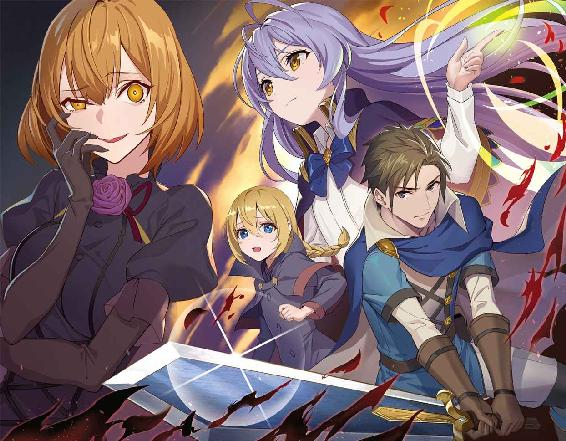
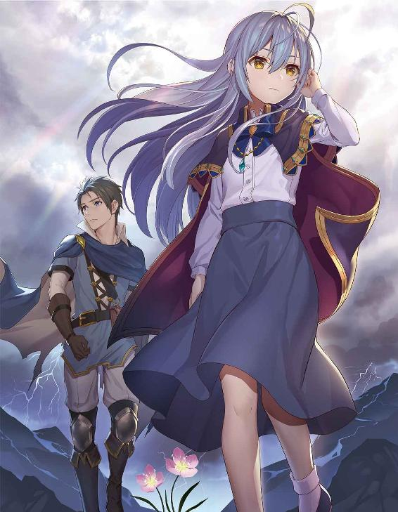
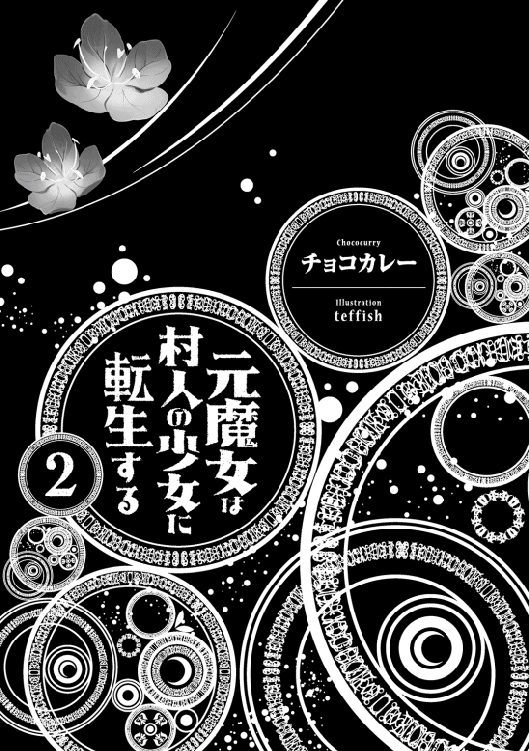
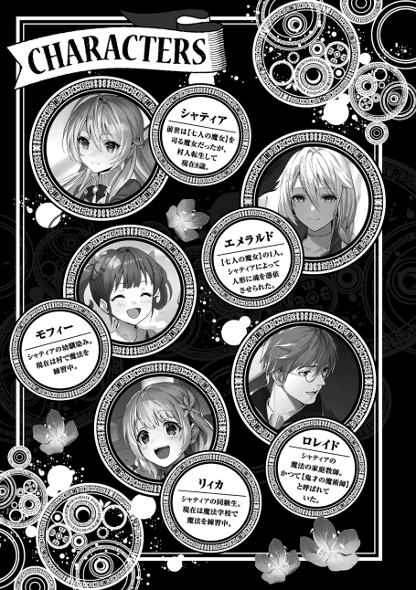
元【叡智の魔女】シャティアはローブを身に纏いながら山の中を歩いていた。浮遊魔法で大陸を越えたのは良いものの、魔国への道のりはまだまだ遠い。少なくとも後山を三つ程越える必要がある。彼女は小さくため息を吐いた。
「ふぅ......うむ、流石に浮遊魔法を使っての移動でも疲れるものは疲れるな」
一度地面に降り立ちながらシャティアはバッグから水筒を取り出し、水を口に含みながらそう呟いた。
たとえ無尽蔵の魔力を誇ると言っても移動中は神経も削られる。ましてやシャティアのような子供が一人で旅をしている所を通行人が見れば不審がるのは当然。注意深く進む必要があった。
自身の銀色の髪を乱れないように紐で結わき、シャティアは小さく深呼吸をした。辺りは霧が掛かっており、数歩先すらどうなっているかが分からない。もしもうっかり進んでしまえば木に激突する危険性もある。
「......食料が尽きたか」
ふとバッグの中を探って手応えが無い事に気が付き、シャティアは怪訝そうな顔をした。予想していた以上に食料の消耗が早い。何より自身の好きな甘味が無いのが痛い。シャティアは口元に手を当ててどうしたものかと頭を悩ませた。
その時シャティアの耳に叫び声が聞こえて来た。同時に魔力の反応があり、シャティアは近くに人間が居る事に気がつく。それも複数。別段不思議な事は無い。魔国にだって村はあるし、魔族の一般人が通る事がある。特にこの辺りは街も多い為、行商人が通り掛かる事がよくある。だが問題は叫び声が上がったという事だ。
シャティアは面倒臭く思いながらも聞かなかったフリをする訳にも行かない為、駆け足で悲鳴が上がった所へと向かった。そこでは案の定盗賊に馬車を襲われている商人達の姿があった。
「だ、誰か助けてくれぇぇ!!」
「へへ、命が惜しけりゃ金目の物を置いて行きな！」
商人は大人の男とその娘らしき少女の魔族二人。馬の手綱を握ったまま、恐怖で顔を引き攣らせている。対して魔族の盗賊の数は十人程。それぞれ赤いローブを纏ってフードを被り、盗賊団の象徴らしき刺青が彫られている。
こういうのは人間も魔族もさして変わらないな、と感想を抱きながらシャティアは盗賊達を注意深く観察した。リーダーらしき男は屈強な身体付きで、髭を蓄えて熊のような顔をしている。そこそこ年齢はいっているのであろう、盗賊としての稼業は長いのか、部下達もしっかりとリーダーの指示に従っている。シャティアはそれらを確認した後、小さく頷くと自身のローブのフードを深く被った。
「わざわざ変装する必要も無いな......」
子供の姿のままの方がむしろ油断してくれる。その場合商人達の方が疑問に思うだろうが、どうせ深く関わる事も無いだろうと思い、シャティアはフードを被ったまま姿を現した。
突然草むらの中から現れた子供の存在に盗賊達は驚いた素振りを見せるが、すぐにそれがか弱い存在だと知ると大した脅威とは感じず、余裕の笑みを浮かべた。
「ああ？ 何だ餓鬼んちょ。この商人共の仲間か？」
「だったらお前も金目の物を出しな。小遣いくらい持ってんだろ？」
何の警戒もせず盗賊達はシャティアへと近づく。ナイフを振り回しながら脅すように命令し、シャティアに迫った。だがシャティアはそれに応える事無く、静かに腕を下へと振るった。その瞬間盗賊達は地面へと崩れ落ち、押しつぶされるような痛みを感じた。
「ぐがッぁぁあああ......!!」
「な、何だ？ 急に身体が重く......ぐふッ!!」
大した抵抗も出来ないまま盗賊達は全員地面へと崩れ落ち、あまりの圧迫感に泡を吹いて気絶してしまった。
シャティアは全員が気絶した事を確認し、他の敵が潜んでいないかを魔力で探ってからようやく肩を落とす。そして倒れている盗賊達へと近寄り、彼らのポーチや懐を漁り始めた。
「う〜む......やはり干し肉と芋か......甘味は持ってないだろうな。普通......」
予想していた通りシャティアは盗賊達が自分の欲しい物を持っていなかった為、あからさまに落ち込んだ姿を見せた。その横では状況が理解出来ていない商人の親子が目をぱちくりとさせながらシャティアの事を見つめていた。
やがてシャティアは自分のバッグに盗賊達から奪った食料を詰め、起き上がると小さくため息を吐いた。そのまま立ち去ろうとするシャティアを慌てて商人の娘が止める。
「あ、あのッ！ 貴方は一体......何者なんですか？」
「......ん？ む、我の事か？」
商人の娘の呼びかける言葉を聞いてシャティアは歩みを止め、フードを深く被ったまま自分の事を指差して尋ねた。商人の娘は控えめに頷き、肯定する。
「我はただの旅人さ。銀の旅人とでも呼んでくれ......銀髪だから」
流石に名を明かすのは不味いと思い、シャティアは適当にそう自身の呼び方を伝えた。商人の親子も詮索するようなつもりは無いのか、頷くと分かりましたと答えた。
商人の父親の方もようやく安堵したのか、先程まで強張っていた頬を緩ませるとずっと握りっぱなしだった手綱を放し、鼻息を荒くしていた馬を落ち着かせた。
「銀の旅人さん......助けてくれて本当に有り難う御座います。是非何かお礼を......」
「いや、もうお礼ならもらった。盗賊達からな......我の事は嵐か何かだったと思ってさっさと忘れてくれ」
そう言うと手を振ってシャティアは再び歩き始めた。商人の娘は助けてもらった身として何かしら恩を返したかったが、それ以上シャティアに付いて行こうとする事が出来なかった。何故か脚が金縛りにあったかのように動かないのだ。そのままシャティアは振り返る事なく商人達の前から姿を消した。
盗賊達から食料を確保した後、シャティアは空も薄暗くなって来た為に今夜はこの山で野宿をしようと準備を始めた。火魔法で焚き火を用意し、気配遮断魔法で魔物達に襲われないようにする。そして木に寄り掛かりながらシャティアは自身の銀色の髪を櫛でといていた。
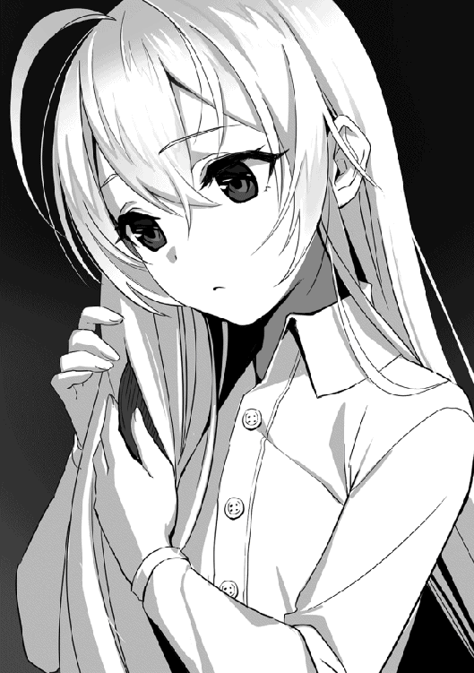
「後数日で到着するかね......いやはや、魔王城に訪れるのは数十年振りか？ 全く久しぶりだ」
櫛をバッグに戻しながらシャティアはそう呟き、再び髪を後ろで結わいた。
実はシャティアは大昔にも魔国を訪れた事がある。協力関係とかではなく、単純にシャティアが魔族から一方的に迫られていただけだ。訪れたのも大分昔であり、ほんの数回程度であった。今頃は魔王も代わっているだろうし、昔とは大分街並みも変わっているだろうと思いながらシャティアは小さく肩を落とした。自身の動かないままの左腕を見つめ、もどしかしそうに唇を噛む。
何の理由があってかは分からないが王宮の魔法書を盗んだのは【探究の魔女】クロークで間違いない。恐らくは研究か何かで利用するつもりなのだろう。おまけに向こうはこちらの存在に気付いている様子がある。魔国に所属しているという噂から、良からぬ事を考えているのは間違いないだろう。彼女は美しい容姿とは裏腹に口調は汚く、常に悪知恵を働かせている。そういう魔女なのだ。シャティアはクロークの事を思い浮かべながら焚き火に手を当てた。
その時、シャティアは近くから巨大な魔力の反応を感じ取った。灯っている炎が大きく揺れ動き、心無しか風も吹き始めた。シャティアは目を細め、警戒心を高めながら口を開いた。
「......久しぶりの再会だと言うのに、顔も見せてくれないのか？ クローク」
「......フフ、流石はシャティファール。結構頑張って隠したのに、バレちゃうか」
シャティアが木々の隙間の何も無い所に向かってそう声を掛けると、その隙間にあった闇が揺れ動き、そこから肩辺りで結わいた青髪を垂らし、黒いコートを羽織った美しい女性が現れた。その瞳は血のように赤く光っており、シャティアの事を見るなり彼女、【探究の魔女】クロークは大声で笑い始めた。
「フフッ、ハハハハハ！ シャティファール、なんだその姿！ 近くで見たら本当笑えるなっ......おまっ......魔女だった頃はあんなナイスバディだったのに......何そのぺたんこな胸！......プハハッ！」
綺麗な顔を歪ませながらクロークは腹を抱えて盛大に笑った。シャティアの胸辺りを指で差し、バンバンと自分の膝を叩いて笑い続ける。せっかく美しい容姿をしているのにその反応は酔った男性そのものであった。いつもは冷静なシャティアも口元を歪ませ、複雑そうな表情を浮かべている。実際彼女も転生してからこの身体の成長には思う所があった。だが、その不安をクロークには気付かれないように何とか平静な素振りを見せる。
「我は今は子供だから当たり前だろう。お前は本当に相変わらずだな......それよりもっと上品に笑え」
「プハハハハハ!! む、無理ぃぃぃぃ!!」
クロークの笑いは収まるどころか更に酷くなっていき、段々とむせ始め彼女は咳き込んで倒れ込んでしまった。それから少し経ってようやくクロークの笑いが収まり、彼女は息を荒くし、髪を乱れさせながらゆっくりと起きあがった。
「はぁ......はぁ......あー、笑った。いやぁ、本当に面白い姿になったな、シャティファール......いや、今はシャティアって名乗ってるんだっけか？」
目に浮かんだ涙を拭きながらクロークはそう尋ねた。その言葉に否定も肯定もせず、シャティアは静かに目を細める。
シャティアが今気になっている事はクロークがどこまで知っているのか、という点だった。王都での事件は間違いなくクロークの仕業である。だが彼女がいつからシャティアの存在、正体に気付いていたかのかが分からない。もしももっと前から知られており、計画を以ってしてこのような状況が作られたのだとしたらシャティアは警戒しなければならない。クロークの最も恐ろしい所は策で対象を自分のペースに持ち込む所なのである。
「......単刀直入に言おう。クローク、お前が王都で魔法書を盗んだのは知っている。それの一部を見せて欲しい」
腹の探り合いをするのも良いが、その場合はクロークの方が分がある。ならばさっさと本題に入ってしまった方が得策だろうと考えたシャティアはいきなり要件を伝える事にした。
そもそもクロークの方から魔国へ来るように仕向けたのである。ならば向こうだってこちらに要件がある事は分かっているはず。シャティアはそう考えた。
クロークは未だにクスクスと笑みを零し、長い指を動かしながら自身の頬を撫でる。
「あー......人体生成の魔法書か......大方その腰に付けてる真面目ちゃんを復活させる為に必要なんだろ？」
「分かってるなら......！」
「でも悪いな、お断りするわ。アレは私の物だ」
驚いた事にクロークはエメラルドの事も知っていた。つまり村で事件に遭った時からクロークは自分の存在に気付いていたという事になる。いや、逆か、その時に自分の存在に気付いたのか、とシャティアは解釈する。いずれにせよクロークもエメラルドの事情を知っているなら断る理由は無いはず。だと言うのに断ったクロークにシャティアは信じられんと言わんばかりに目を見開いた。
「クローク......ふざけるのも大概に......！」
いくら同じ魔女と言えどその仲間を見捨てようとするならシャティアも躊躇はしない。すぐさま【眠り歌】を発動させようと彼女は呪文を唱えるが、その前にクロークが腕を振るうと闇の中から二匹の黒蛇が現れた。
「【咎の幻影】」
クロークはそう言って呪文を唱える。二匹の黒蛇はシャティアへと襲い掛かり、彼女は一度呪文の詠唱を中止してその場から飛び跳ねた。黒蛇は後ろにあった木へと激突するが、途端に煙となり、モクモクとシャティアの居る上空へと浮かび上がると再び黒蛇へと姿を変えた。シャティアは舌打ちをして腕を払い、魔力波で黒蛇達を吹き飛ばす。そして地面に降り立つと、今度はクロークが宙へと浮かび上がっていた。
「やれるもんならやってみろよ。あんたはアタシ等に魔法を教えてくれたが、その魔法を極めたのはアタシ等だ......数と質、どっちが勝るかねぇ？」
「............」
クロークはそう言うと両腕を振るって辺りの闇から無数の黒蛇を出現させた。蛇達は目を赤く光らせ、舌をシュルシュルと動かしてシャティアの事を見下ろしている。シャティアは目つきを険しくしながらそのまま動かず、じっとクロークの事を見つめた。
「......フフ、まぁ今回はご挨拶さ。本番は我が魔国で。ご馳走を用意して待っているよ......母上殿」
「......クロークッ」
そう言うとクロークはその綺麗な顔をニコリと笑みで包み、華麗にお辞儀をすると黒蛇達に飲み込まれていった。黒蛇達が姿を消すと、もうそこにはクロークの姿は無かった。残されたシャティアは小さく灯っている焚き火に立ち、ただ悲しそうに夜空を見上げた。
魔王ベルフェウスは夢を見ていた。自身がまだ魔王ではない、父親であるアギトが魔王を務めていた頃の幼い頃の日々を。
その頃のベルフェウスはまだ父親のような屈強な身体付きはしておらず、至って普通の少年だった。政治や国の事も分からず、ただ父の背中を見続ける日々。ベルフェウスとしては父の手伝いをしたかったが、無力な自分ではそれは出来ないだろうと自ずと理解していた。
「ベルフェウス、お前はいつか儂の後を継いで立派な魔王となるのだ。良いな？」
「はい、父上」
いつものようにアギトが息子のベルフェウスにそう言うと、ベルフェウスは力強く答えた。それを聞くとアギトは満足そうに笑い、尖った歯を見せながら盛大に笑った。
アギトは非常に独占欲の強い魔王である。【強欲の魔王】と言う異名すら持っており、歴代の魔王の中でも特にその傾向は顕著であった。彼はいつか人間の大陸も支配し、魔族こそが生物の頂点に立つことを目指していた。ベルフェウスも父親のその迷い無い意思を尊重しており、父なら出来ると信じていた。だがそんなある日の事だった。
「久しぶりだな、アギトよ」
それは突然現れた。翼のように繕ったローブに、真っ黒なとんがり帽子を被った怪しい風貌をした女性。その姿は人間のそれとそっくりであったが、その者の魔力を感じた途端ベルフェウスはそれが化け物だと思った。とても人間とは比べ物にならない恐ろしい存在。ベルフェウスは自然とアギトの後ろに隠れた。
「おお、シャティファール！ ようやく来てくれたか！」
「お前達があまりにもしつこいんでな......ご馳走だけもらいに来たよ」
その銀髪の女性を見るとアギトはシャティファールとその者の名を呼んで喜ぶように手を上げた。どうやらアギト自身が以前から魔国へ招待していたらしく、アギトの知人でもあるようだ。アギトには様々な知人が居る事はベルフェウスも分かっていた。時には敵国の者とも話し合いを行う程なのだから、今更このような事があっても驚かない。だがベルフェウスはシャティファールという女性が前例の無い異質な存在だとどこか気付いていた。
「ん？ そっちの小さいのは何だ？」
「ああ、儂の息子だよ。ほれ、隠れてないで挨拶せんか」
「こ、こんにちは......ベルフェウスです」
せっかくアギトの後ろに隠れていたのに簡単にシャティファールに見抜かれ、更には父親に挨拶するように言われたからにはもう逃げられない。ベルフェウスは緊張しながら頭を下げてシャティファールに挨拶をした。すると彼女は興味深そうに口元に手を当ててベルフェウスの事をジロジロと観察し、アギトと見比べるとどこか面白そうに笑みを浮かべた。
「ほぉ、これはまた随分と真面目な子だな......お前とは全然似てない」
「うるせい」
シャティファールがアギトに向かって笑いながら言うと、アギトはバツの悪そうに口を歪ませて言葉を返した。
ベルフェウスは信じられなかった。こんな風に父親と話した人は見た事も無い。アギトは魔王であり、少なくとも誰からも尊敬される存在だった。だが目の前に居るシャティファールという女性はむしろアギトの事を嗜めるような素振りすら見せている。まるでアギトの事を昔から知っているような態度だった。
「では儂等は重要な話し合いがあるからな。ベルフェウス、お前は部屋に戻ってなさい」
「わ、分かった」
急にアギトは顔つきを変えて真面目な顔になるとベルフェウスにそう言った。ベルフェウスも会議に参加出来るとは思っていなかった為、素直に頷いて返事をする。そのまま二人は会議室へと向かって行った。途中、ベルフェウスが二人の後ろ姿を眺めているとシャティファールが顔だけこちらに向け、ニコリと微笑んだ。
「また会おう、次期魔王よ」
その言葉と共にシャティファールはアギトと共に会議室の中へと消えて行った。
そしてベルフェウスの意識は浮上する。長い長い眠りの中から少しずつ自身の意識が鮮明になり、暗闇が消え、視界には薄暗い自室が見えた。子供の時とは違う屈強な筋肉を持った自身の身体を起こし、ベルフェウスは額に手を当てて小さくため息を吐く。
「......夢か」
まるで悪夢でも見てしまったかのようにベルフェウスは表情を歪ませた。ただでさえ青白い彼の肌は増々気色悪い物となり、目元にも若干隈が出来ている。
実際ベルフェウスにとってあれは悪夢以外の何物でもなかった。世界一強いと思っていた自身の父親と対等に話す存在。むしろそれ以上。魔力も底知れず、その性質は普通とは異なっている。ただでさえベルフェウスにとって父親アギトの存在は雲の上だったと言うのに、シャティファールが現れた事によって天を突き抜ける程の強大な存在を目の当たりにしてしまった。その衝撃は子供だったベルフェウスからすればとても耐えられる物ではない。
ベルフェウスがシャティファールを魔女だと知ったのは初めて会った時から数週間後だった。その時にはもうシャティファールも魔国を離れており、それから二度と会う事は無かった。だがベルフェウスは魔女という存在を恐れるようになった。更にベルフェウスが驚いたのはシャティファールのような存在が他にも六人居るという事実だった。
聞く所によると魔女という壁がある事によって魔族は人間の大陸を攻める事が出来ないらしい。だがアギトは魔女を味方に付けようとシャティファールに話を持ちかけたのだ。その結果がどうなったのかは、ベルフェウスは知らない。だが現状からすれば恐らく交渉は失敗したのだろうと伺えた。
ベルフェウスはもう一度ため息を吐いてベッドからゆっくりと降りる。部屋は少し冷たく、肌寒さを覚えた。
「ただいまー、魔王サマー」
「......クローク」
どこからともなく聞き覚えのある声が聞こえて来たと思ったら、ノックも無しに扉を開けて部屋に入って来る者が居た。魔王相手でも全く遠慮しない人物、当然魔女クロークであった。
魔族から見ても美女と称しても差し支えない容姿をしているのに、その粗暴の悪さは壊滅的で、ベルフェウスですら困り果てている。彼女は遠慮もせずズカズカと部屋の中を歩き回った。置かれている椅子に乱暴に座り込み、ああ疲れたと呟きながら脚を組む。
「今までどこに行っていたんだ？ 急に散歩に行くとか言って出て行ったが......」
「うん、シャティファールに会いに行ってた。予定通りこっちに向かって来てるらしいからさ」
ベルフェウスがそう尋ねるとクロークはあっけらかんと衝撃的な言葉を発した。思わずベルフェウスは目を見開き、言葉を失う。しばらく二人の間には会話が行われず、正気に戻ったベルフェウスが声を震わせながらもう一度尋ねた。
「なっ......シャティファールって、あのシャティファールか？ 魔女の長の？」
「そー、アタシ等の母親みたいな存在」
「お、お前......何故そんなッ、そんな計画俺は聞いていないぞ!?」
あまりにも突然過ぎる事にベルフェウスは混乱して質問を続けた。そもそもベルフェウスの望みは父が果たせなかった人間の大陸の支配。魔女が居なくなった事でようやく動き出せたと言うのに、何故その魔女が再びやって来る。それが疑問だった。
「えー、だって魔女の力を欲したのは魔王サマじゃんかよ。別に今更それが一人二人増えた所で変わんねーだろ」
「だからって......アレは別格だろ！」
確かに魔女の力を欲したのはベルフェウスである。魔女が居なくなる事は喜ばしい事だが、もしもその力を手にすれば更なる支配が可能ではないかと。父アギトから受け継いだ強欲さによってベルフェウスはそう望んでしまったのだ。そしてその機会が一度だけ来た。ベルフェウスはひょんな事から生き残ったクロークと出会い、彼女と手を組む事にしたのだ。それから更に魔女の力を欲し、暴走しているエメラルドの事を狙った。それは否定する事の出来ない事実である。
だがシャティファールだけは別である。脳裏に残っているシャティファールの姿を思い出しながらベルフェウスは腕を震わせた。あれは絶対に関わってはいけない存在。自身が敵う存在ではないのだ。
「心配すんなよ。あんたがエメラルドの捕獲に失敗したのはアタシの忠告を聞かなかったからさ。アタシの計画通りにやれば全部上手く行く」
どこからそんな自信が湧いてくるのか、クロークはケラケラと笑いながらそう宣言した。
クロークは策を練るのが上手い。実際彼女のおかげで人間の大陸の北の砦を落とす事が出来た。その辺りはベルフェウスも評価していた。エメラルドの捕獲もクロークの言う通りにしていればきっと上手くいっただろう。だがそれではまるで、自身が魔王でいる意味が無いではないか、と彼は疑問に思った。
「さぁきびきび働け魔王サマ、人間共を支配する為にもシャティファールの協力は必要不可欠だ。アタシ等はもう、立ち止まる事は出来ないんだよ」
椅子から立ち上がると手を差し出しながらクロークはそう言った。ベルフェウスは言葉に詰まり、何の反応も返す事が出来ない。
自身の知らない所で次々と計画が進んで行く。クロークの目的は確かに一致しているが、それでも彼女のやり方はあまりにも過激過ぎる。このままでは取り返しの付かない事になってしまうのではないか、そうベルフェウスは不安に思ったが、彼女の言う通りもう立ち止まる事は出来なかった。民衆達は人間の国を制圧する事を今か今かと望んでいる。兵士達の士気も高い。この流れを止める事は王ですら出来ないのだ。
魔王は魔女に付き従う。その光景はかつてのアギトとシャティファールの二人とどこか似ていた。
生い茂っている木々の合間を抜け、浮遊魔法で山の天辺まで辿り着いた後、シャティアはようやくその瞳に魔王城を捉える事が出来た。
王都の時よりも更に大きく、高くそびえる街。幾つもの塔が並ぶその中心にはひときわ巨大な暗黒の城が建っており、一目でそれが魔王城だという事が分かる。
「......ようやく辿り着いたな」
額から汗を流し、シャティアはそう呟いた。着ている服は所々土で汚れており、ここまで来るのに苦労した事が伺える。シャティアは乱れた髪を整えながら目つきを険しくした。
クロークはこの魔王城に居る。奴の狙いが何にせよ、こちらを狙って来ている事は明白。ならば真正面から迎え撃ってやろう。それが母親としての役目なのだから。そう決意を固めながらシャティアは脚を踏み出した。
「待っていろクローク。我を怒らせたらどうなるか、その身にたっぷりと教え込んでやる」
こう見えて意外とシャティアは根に持つタイプである。特に娘同然に育てた相手から裏切られるというのは色々とショックであり、その分仕返しにも力が入る。彼女は意地悪そうな笑みを浮かべ、浮遊魔法を唱えると宙を舞った。真っ直ぐ魔王城へと向かい、侵入を試みた。
気配遮断魔法を使えば一目に付かずに入るのは簡単である。壁を飛び越えて街の中に侵入すると、そこにはたくさんの魔族達が道を行き来していた。このような光景を見るのも久しぶりであり、シャティアは念の為フードを被ってから地面へと降り立った。
「さて、問題はどうやって城に入るかだな」
口元に手を当てながら遠方に見える魔王城を見上げてシャティアはそう言葉を漏らした。
街に入るのは簡単だ。だが城となると警備も厚くなっている為、簡単には行かない。それに今回は王宮の時のような物を拝借する目的がある訳ではなく、クロークと会う事が目的である。そうなると侵入にも色々と気を配らなければならない。
そんな事を考えている時だった、突然市場から騒がしい声が聞こえて来た。続けて暴発音のような物が響き、シャティアは嫌な予感がしてそちらの方向に目を移す。そこでは何やら巨大な狼のような姿をした魔物が咆哮を上げていた。
「う、うおわぁあ！ やべぇっ、檻が壊れて魔物が暴れだしやがった!!」
「ば、馬鹿！ 早く何とかしろ！ 大事な商品なんだぞ!!」
恐らく魔物を商品として扱っている店なのだろう。丁度馬車で運んでいたらしく、積まれていた檻が壊され、狼の魔物が咆哮を上げながら辺りの屋台を破壊し始めていた。民衆達は悲鳴を上げて一斉に逃げ出す。商人達は慌てて魔物を落ち着かせようとするが、持っていた鞭は簡単に尻尾で吹き飛ばされ、とても止める事の出来ない状況になっていた。
「あ〜......いやいや流石にここで目立っては不味いだろう」
すぐさまその場に走り出そうとしたシャティアだったが、すんでの所で歩みを止める。
いくら何でも魔国の中心で目立つのは不味い。気配遮断魔法を使っているからと言って視線が集まれば効力は無くなるし、何かの拍子でフードが取れれば自身の姿を見せてしまう事になる。どうせ兵士達が駆けつけて来るはずだ、わざわざ自分が出る幕ではない。そうシャティアは判断したが、彼女は不幸にも見てしまった。狼の魔物に喰われそうになっている魔族の子供を。
「ああくそ、仕方ない！」
シャティアはフードを深く被り直して走り出した。重力魔法を使って狼の魔物の動きを止め、続けて魔力波で吹き飛ばす。魔物の巨体は宙へと浮かび、馬車の荷台にぶつかって激しい破壊音を立てた。シャティアは子供の前へと立ち、腕を振り上げる。
「来い、ワンコ。我が相手だ」
こうなったらやるしか無い。自棄糞気味にシャティアはそう声を張り上げ、うめき声を上げている狼の魔物を挑発した。狼の魔物は身体を起こし、一際大きな咆哮を上げる。そして地面を蹴ると上空から牙を剥いてシャティアへと襲い掛かった。
黒ずんだ毛に、その一つ一つの毛が棘のように尖っている。牙は鋭利に曲がり、その巨体を支える脚は筋肉が詰まっているかの様に太く逞しい。名を確かバーサクウルフ。獰猛で同族すら補食対象と見なす凶悪な魔物。そう思い出しながらシャティアは向かって来るバーサクウルフに腕を振るった。
「グォァアアアッ!!」
魔力波によってバーサクウルフは吹き飛ばされ、広場の中心辺りまで引き下がる。シャティアは魔族の子供に被害が行かないようにそちらに移動し、うなり声を上げているバーサクウルフと対峙した。敵の事をまじまじと観察しながらシャティアはふと思いついたかのように首を傾げる。
「バーサクウルフ......獰猛な魔物であるお前が商品として扱われるとは、魔族は本当に強欲な生き物だな」
魔国には魔物を売り買いする商法が存在する。調教し、主人の命令を従順に聞くようにして他の魔物と戦わせたり、または見せ物にしたりする。そういう物が彼らの流行であった。
シャティアとしては自然を愛する身としてそのような事はあまり好まないのだが、魔族が捕まえる魔物はどれも凶悪だったり街を襲う魔物だったりする為、口出しはしなかった。
だが限度という物も存在する。今回は魔物自体の強さが許容量を超えているという限度。バーサクウルフはその巨体から分かる通り並の魔物とは違う。彼らに同族を喰らう習性がある事から、生き残っているバーサクウルフはその弱肉強食を生き抜いて来た強者でもある事が分かる。故に危険であるのだ。
「グォォアアアアアアアッ!!」
恐らくはそれなりの場数を踏んだであろうバーサクウルフは咆哮を上げて辺りの屋台を前足で吹き飛ばした。シャティアが魔法を使うのを見て警戒し、遠距離からの攻撃の方が有利だと本能で判断したのだ。だがそれは間違いであった。シャティアにとって近距離での戦闘こそ最も敬遠する物であり、遠距離での攻防は彼女の得意分野であった。飛んで来た瓦礫をシャティアは魔法の盾で防ぎ、続けて指を走らせるとシャティアは手の平に魔力の球を形成した。
「まずはそのうるさいお口を塞いでやろう」
手を振るって無数の魔力の球を放つと魔力の球は高速で回転しながら飛んで行った。バーサクウルフは屋台を吹き飛ばしてそれを壁代わりに利用しようとするが、魔力の球は屋台の隙間を通り抜けるとそのままバーサクウルフへと直撃した。
「ゴゥァアッ!!」
バーサクウルフは一瞬怯むがそこまでのダメージではない。煙が晴れるとバーサクウルフは身体を震わせ、突如体毛が鋼のように硬くなり、針のごとく鋭く伸びた。それが飛び出し、シャティアに向かって飛んで来る。シャティアはそれを間一髪の所で顔をズラして避け、感心したように口笛を吹く。
「ほぅ、それは初めて見た」
バーサクウルフは極度のストレスを感じたり外的から身を守る時に体毛を鋼のごとく硬くさせる。それはシャティアも観察して知っていたのだが、吹き矢のように飛ばす事が出来るのは知らなかった。シャティアはまた一つ知識を埋める事が出来、嬉しそうに頬を緩ませた。
バーサクウルフは再び体毛を硬くして針を放つ。しかし今度のはシャティアは避ける事もせず、飛んで来た針を片手で受け止めてしまった。
「だがもう理解した。その程度で倒せる程我は安くないぞ？」
指先で針を回しながらシャティアは笑い、そう言葉を零す。
所詮は一時的に体毛を硬くして殺傷力を持たせただけの即席武器。十分な速さを持っていないし精密さも無い。この程度なら一度見ればシャティアなら対処するのは簡単だった。
バーサクウルフは恐怖する。目の前の敵には自身の力も針も効かない。今まで数え切れぬ程の同胞を倒して来た彼にとって、初めて直面する格上の敵だった。だがそれでも彼は引かない。ありったけの力を脚に込め、身を屈める。
「ゴォァアアアアアアアッ!!」
「【罪の枷】」
牙を剥いて咆哮を上げ飛び掛かってくるバーサクウルフに、シャティアは魔法の拘束具を取り付ける。素の戦闘力が高いバーサクウルフから魔力を奪った所で意味は無いが、それでも動きを封じるには十分な手段。動けなくなったバーサクウルフに向かってシャティアは無慈悲に手の平を翳した。
「そい」
力の込もっていない掛け声と共に轟音を響き渡らせる巨大な魔力砲が放たれた。動く事が出来ないバーサクウルフは当然それを全身に浴び、砂埃が収まるとそこには黒こげになったバーサクウルフが立っていた。死んではいない。バーサクウルフは小さなうめき声を上げるとその場に崩れ落ち、シャティアもそれを確認すると魔法の拘束具を解いた。
「まぁ、こんな物かね」
いくらバーサクウルフと言えど一体ならシャティアにとってそこまで脅威ではない。どれだけの同胞を喰らった所でこちらは千年以上を生きる魔女。その実力差は明らかであった。
シャティアは小さくため息を吐いて肩を回し、ほぐすように首を回した。そして子供が無事かを確かめる為に市場の方まで戻ると、そこには魔族の人集りが出来ていた。
「あ、貴方、銀の旅人でしょ！ 銀髪で、いつもフード被ってる人！」
「噂は本当だったんだ！ 商人達を盗賊から助けた謎の旅人......凄い！」
どういう訳か魔族達はシャティアが銀の旅人と名乗っている事を知っていた。いや、よくよく考えればそれは必然の事であった。シャティアは魔王城に来るまで何度も魔族を助けていた。ある時は商人の親子、ある時は旅人、ある時は村人達、そうやって助ける度にシャティアは自身の事を銀の旅人と名乗っていた。それならば自然と噂が広がるのは当然である。が、まさかここまで噂が広まるとは思っていなかった為、シャティアは戸惑ったように尻込みした。
「是非お礼をさせてください！ 貴方はたくさんの魔族の人達を助けてくれました！ 是非お礼を......！」
「あー、いや......我はちょっと用があってな」
魔族はシャティアに迫りながら感謝の言葉を述べる。感謝されるのはシャティアとしては有り難いが、自身の姿を見られる訳にはいかない。幻覚魔法で変装すれば良いだろうが、こんな民衆の中で魔法を行使する訳にもいかない。何かの拍子でバレる可能性もある。シャティアは焦りを覚えた。
「す、すまんが我はここで退散させて頂く」
結局シャティアは逃げ出す事にした。その場から走り出し、狭い路地裏へと逃げる。何人かの魔族達も追いかけて来たが、シャティアが浮遊魔法で屋根の上まで避難するとあっという間に姿を見失ってしまった。
追っ手が居ない事を確認し、シャティアは疲れた様にため息を吐いて肩を落とした。フードを少しだけズラして顔を出し、シャティアは澄んだ瞳で街を見下ろす。
「......はぁ、やれやれ。我はどうも損な性格をしておるな」
シャティアはどこか寂しげにそう呟いた。
昔、誰かにもそんな事を言われた覚えがある。シャティアからすればただ自分の良心に従って行動しているのだが、それが原因で大変な事になってしまう、なんて事が多々あった。知らぬフリをすれば、無視をすれば、それだけで良い事なのにシャティアはどうしても首を突っ込んでしまう。彼女はもう一度ため息を吐くと指先で首を掻いた。
ふとシャティアは動きを止め、目つきを険しくするとフードに手をやって深く被り直した。息を潜めながら静かに目線だけ後ろの方へとズラす。魔力を感じ取ったのだ。そして案の定、屋根の上には魔族の姿があった。
「貴殿を銀の旅人とお見受けする」
「......シェリス」
その魔族はシャティアも知る人物であった。黒髪に深紅の瞳をした女性、エメラルドの時にその場に居た魔族達の隊長シェリスであった。彼女には聞こえないように名を呟きながらシャティアは意外そうに彼女の顔を見つめる。そしてそれを同意だと受け取ったのか、シェリスは話を進めた。
「魔王様が貴殿とお会いになりたいとの事だ。招集に応じろ。応じない場合はそれ相応の対応をさせてもらう」
「......ほぉ」
シェリスは懐から招集状らしき紙を取り出すとそれを広げて読み上げ、シャティアにも見えるように翳した。シャティアはそれを聞いて面白がるように薄目になり、また元の目つきに戻るとゆっくりと立ち上がった。
「それはまた光栄な事だ。是非とも我も魔王殿とお会いしたい」
シャティアは臆する事なくその申し出を受け入れた。むしろ自分にとっては利しか無い機会である為、好意的に受け入れた。シェリスはその話し方を聞いて何やら引っ掛かったような表情をしたが、それは自身の仕事には関係無い為、気にせずシャティアを魔王城へと連れて行った。
道を歩き、長い橋を越え、シャティアは魔王城の門の下を潜らされる。巨大な扉が開き、ようやく城の中に入るとそこは巨大な広間になっていた。何本もの柱が設置されており、赤い絨緞が奥へとどこまでも続いている。時折城の兵士らしき魔族達が徘徊しており、ドス黒い鎧を纏っていた。シャティアはそれをまじまじと観察しながらシェリスへと付いて行く。その間もしっかりとフードは深く被り、辺りに気を配っていた。
やがてシャティアは長い通路を歩き続け、一つの部屋の前に連れて来られた。先はどうやら王の間のような部屋ではないらしい。という事はこれは表向きな物ではなく、内密的な会談という事だろうか、とシャティアは首を傾げる。
そしてシェリスが小さくノックすると、扉の向こうから男の声が聞こえて来た。恐らく魔王の物だろう。
「入れ」
確認が取れたらしく、シェリスは扉の横にズレてシャティアにそう言った。シェリスは付いて来る様子は無いらしい。という事はやはり内密的な物なのだろう。シャティアはそう判断して小さく頷くと、ゆっくりと扉を開けて部屋の中へと入った。
そこは本当に小さな客間だった。テーブルの横に赤いソファが添えられ、テーブルの上には蝋燭が置かれている。本当にそれだけの小さな部屋。そんな薄暗い部屋の中で一人の男がソファに座っていた。それはシャティアも昔会った事がある、懐かしい人物だった。
「久しぶりだな、ベルフェウス......今は魔王ベルフェウスか？」
「......シャティファール」
シャティアがフードを取りながらそう言うと、ベルフェウスは確信を得たように目を細めてシャティアの少女の姿を見つめた。二人は大きく変わった。片方は立派にたくましく成長し、もう片方は随分と小さくなってしまった。初めて会った時とは真逆の立場となった。だがベルフェウスは静かに感じ取る。目の前に居る少女は姿形は変われど、その内に潜める魔力は小さくなるどころか、より強大になっている事を。
ベルフェウスはやはり魔女は別次元の生き物だという事を改めて再確認し、小さくため息を吐いた。
魔王ベルフェウスにとってシャティアは自身とは別次元に居る存在だった。一度しか会ってはいないがそれでも十分に彼女の実力を肌で感じ、敵わぬ存在だと悟った。だが、今のベルフェウスにとってシャティアは必要な存在だった。今魔国で起きている嵐を鎮める為にどうしても必要な戦力だったのだ。
シャティアはベルフェウスの向かい側のソファに座ると脚を組んでくつろいだ。遠慮の無いその身振りは初めて会った時と変わらない。姿形は変われど、魔女シャティファールという存在は確かにそこに残っていた。それを見てベルフェウスは懐かしむ様に小さく笑みを零す。
「随分と......小さくなったな。シャティファール」
「今はシャティアと名乗っている。お前もそう呼んでくれ。この姿はあくまでも村人の娘シャティアだからな」
ベルフェウスの言葉にシャティアも笑みを浮かべながらそう言った。
今の彼女はあくまでシャティアという少女であり、魔女シャティファールではない。それにシャティファールという名前をここで使うのは色々と都合が悪い。それを考慮してシャティアはそう注意した。ベルフェウスもそれを理解し、コクリと顔を頷かせた。
「お前の方こそ大きくなってしまったな。昔はあんな可愛らしい子供だったのに、今ではアギトに似てしまった......嘆かわしい事よ」
前魔王アギトの事を知っているシャティアはベルフェウスが父親に似てしまった事を悲しむようにそう言った。指を目元に当て、泣く様な仕草を取る。それを見てベルフェウスは苦笑し、手を上げて参ったと言うように首を振った。
「フフ......そんな事を言えるのは貴方だけだ」
周りの誰もが前魔王アギトの事を知っている。魔族にとってアギトは英雄同然であった。そんなアギトに似たのを嘆かわしいなどと冗談でも言えるのは、シャティアくらいである。やはりシャティアは別次元の存在である事を認識しながらベルフェウスは視線を彼女に戻す。
「アギトの奴はどうしているんだ？ まさかあの筋肉の塊がそう簡単に死ぬような事はあるまい」
「父はもう隠居して秘境で生活している......最近足腰にガタが来ているらしくてな」
アギトの存在を思い出しシャティアが尋ねるとベルフェウスは淡々と答えた。
やはり死んではいないようなので一応シャティアは安堵する。だがそれ以上に何か感情が芽生える訳でもないので、そうかとだけ返事をした。
「......で、わざわざ我をこんな人気の無い部屋に連れ込んだのだ。何か用があるのだろう？ ベルフェウス」
世間話が終わった後、シャティアはいきなり本題に入った。別にやましい事がある訳でもないので遠慮はしない。シャティアの相変わらずな態度にベルフェウスは少し目を開けて驚いた素振りを見せたが、静かに目を細めると口を開いた。
「単刀直入に言うと......貴方に魔国を救ってもらいたい」
「......ほぉ？」
シャティアに対して遠回しな言い方は失礼だと思ったベルフェウスは真っ先に自身の願望を伝えた。それを聞いてシャティアは面白がる様に口元に手を当て、品定めをするように指を動かす。
「今魔国は二つに分裂している......俺を支持してくれる仲間達と、人間の大陸を支配しようとしている過激派の二つにだ」
ベルフェウスは指を立てながらそう説明した。魔国の現状を伝え、この国が今どれだけの危機に迫っているのかを分かってもらおうと必死に口を動かす。シャティアはその説明を黙って聞いていた。
「過激派を指揮しているのは【探究の魔女】クローク......と言うよりはクロークが企てている計画に魔族達が乗っかっている図式の方が正しい。クロークは人間界を支配しようとし、魔族の半数以上がそれを支持しているんだ」
「そしてそれを反対しているのがお前達、か？ 王が民衆から見捨てられるとは......恐ろしい事だな」
現在魔女クロークは表立って魔女だという事を明かしてはいないが、それでも研究者の一人として人間界を支配する計画を企てている。魔族達の何人もがそれに賛同し、侵略を望んでいるのだ。その規模は魔王であるベルフェウスですら止められない程になっており、魔国はほぼ分裂状態に陥っている。このままでは内乱が起きてもおかしくない程であった。
ベルフェウスが危惧しているのはクロークの暴走。クロークの行動はあまりにも無茶があり過ぎる。彼女は自身の能力で魔族達を北の砦へと攻めさせ、見事落としたがその結果何人もの犠牲者が出る事となった。戦いに犠牲は付き物であるが、それをベルフェウスは王として無視する事は出来なかった。止めなければならないのだ、クロークを。
「クロークは人間達を滅ぼす為ならどんな犠牲をも厭わないつもりで居る......奴の行動は行き過ぎているんだ......頼む、どうかあいつを止めてくれ......！」
ベルフェウスはここで初めて頭を下げてシャティアに頼み込んだ。その姿を見てシャティアはかつてのアギトの姿を思い起こす。だが彼はどんな事があっても絶対に頭を下げるような事はしない魔王だった。静かに目を瞑り、シャティアは僅かに口元を歪ませる。
クロークの大体の目的は理解出来た。分かり易く言ってしまえば人間達に対しての復讐だろう。クロークはプライドが高く、馬鹿にされるのを酷く嫌う。それ故に魔族達を利用し、戦争を起こして人間達の大陸を支配しようと狙っているのだ。実に分かり易い手段だ、とシャティアは評価する。人間と魔族の戦争は昔から続いており、そこに少しの手を加えれば簡単に激戦を起こす事が出来る。その手を加えるのが魔女ならば、その激しさは更に大きな物となるだろう。
が、シャティアはすぐには顔を頷かせない。何かを思惑するように頬に手を当て、ユラリと首を傾げてみせた。
「止めてくれ......か。最初に手を組もうと言ったのはどちらだ？」
「............」
何気なく呟いたシャティアの言葉にベルフェウスはピクリと肩を震わせた。口を開こうとせず、俯かせていた頭を若干起こしたものの目線だけは合わせないようにしている。その反応を見てシャティアは静かに息を零した。
「ベルフェウス......お前は父親のアギトとよく似ているよ。あいつは豪快だったから分かり易かったが、いつも魔女の力を手に入れようとしていた。強い野心で、全てを我が物にしようとしていた」
シャティアはかつてのアギトの顔を思い浮かべながらそう口にした。
アギトは良くも悪くも裏表が無い人間だった。建前など関係無く自身の要求を直球で伝え、相手を困らせる。それは彼自身が迷い無い野心によって突き動かされているからだ。他者からすればそれは困りものではあるが、その豪快な性格から不思議な魅力を感じて従う者も居た。だがベルフェウスの場合は違う。彼は大人しい性格で正に王にふさわしい落ち着きを持っている。端から見ればアギトとは正反対であるが、その心は父親の野心をしっかりと受け継いでおり、性格とは反対が故に面倒な性格をしている。要するに控えめ目な性格の癖にちゃっかりと自分の要求を伝えて来る面倒くさい人物、と言うのがシャティアの評価なのだ。
「少なくともお前も望んだんだろう？ 魔女の力を手にしようと......そしてクロークと出会った......どちらから話を持ちかけたのかは知らんがお前達は協力関係を築いたのだ。それを今更反故にしたい等虫の良い話とは思わんかね？」
シャティアは小さく首を傾げてベルフェウスにそう問うた。それはまるで教師が生徒に物事の良し悪しを教えるような光景であった。ベルフェウスは顔を上げ、唇を震わせる。何か言おうとするが、喉まで出て来た言葉はそのまま形になる事無く消えてしまう。彼の青白い頬に一筋の汗が流れた。
「......確かに俺はクロークと出会い、協定を結んだ」
ようやくベルフェウスは話し始める。自身の行いを認め、クロークと出会った時の事を語り始めた。その話はシャティアも興味があった為、黙って耳を傾ける。
「あいつは俺に言ってくれたんだ。俺が望めば、魔国を最強の国に出来ると。どの国にも負けない無敵の国になると......そう、言ってくれたんだ」
「............」
ベルフェウスは拳を握り締めて辛そうに言う。シャティアには何故彼がそんな反応をするのか知っていた。
魔国を最強の国にすると言うのは初代魔王から続いている魔族全員の夢なのだ。最強の国と言うのはいささか具体性に欠けるが、要するに魔国が世界を支配する国になるという事である。だから彼らは最も邪魔な存在である人間達を滅ぼそうとしている。そして恐らくその隙にクロークがつけ込んだのだろう、とシャティアは推測する。
「だがそのやり方があまりにも乱暴過ぎた......だから約束をなかった事にしたい、か？」
「......ッ、人間の大陸に侵攻してからと言うものの、何百人もの犠牲者が次々と出ている......！ 民衆はまだ気付けてないんだ。自分達が自身の首を絞めているという事に......！」
ベルフェウスは机を拳で叩いた。怒りを覚えている訳ではない。だが歯がゆい思いを抱くように表情を歪ませている。シャティアは呆れた様に小さくため息を吐き、腕を組んだ。
「戦に犠牲は付き物だという事はお前も承知のはずだ。いくら気弱なお前とてそれは分かっているだろう？」
「限度がある......！ ただ単純に戦をするだけならともかく、クロークは人間の国以外にも手を出し始めている。あいつは支配が目的じゃなく、破壊が目的なんだ......！」
ここでようやくシャティアはベルフェウスが何を恐れているのかを理解した。彼にとって目的は戦ではなく支配。敵国を滅ぼすのではなく、力を示す事こそが最も重要な事。だがクロークが重点を置いているのはそこではなく復讐を果たす為の破壊。そしてその思いは過激さを増し、人間の国だけでは留まらなくなっている。恐らくこのままでは魔族は世界の支配者になるどころか、全ての国を敵に回して孤立してしまうだろう。ベルフェウスはそれを危惧しているのだ。
「ふむ......大体理解した」
ベルフェウスから聞いた内容を頭の中で整理しながらシャティアは何度も頷く。そして満足そうに笑みを浮かべると、ベルフェウスの事を見つめた。
「お前がクロークに手を焼いている事は理解した......だが我の目的はクロークが強奪した魔法書だ。魔国の事にまで手は回せんよ」
「............く」
シャティアの返答を聞いてベルフェウスは小さく悔しそうな声を漏らした。だが反論はせず、何か意見をする様子も無い。彼は諦めた様に項垂れ、明らかに落ち込むように肩を落とした。シャティアは組んでいた腕を解く。そして不思議と笑みを浮かべた。
「だがまぁ、娘が迷惑を掛けているそうだからな。少しくらいはお灸を据えてやるさ」
決してそれは優しさではない。ただ自分の同胞であるクロークがやんちゃをしているから、それを止める。本当にそれだけの事であった。だがベルフェウスからすればそれは救いの手であり、顔を上げると霧が晴れたように明るい表情を浮かべた。
クロークはあの日の事を思い出していた。自身が敗北した日、人間達の卑劣な手によって葬り去られたあの日の事を。
それは唐突に起きた事だった。いつものように自身の住処である塔で魔術の研究をしていた時、クロークは侵入者の気配に気がついた。別段珍しくはない。魔女の首目当てでやって来る冒険者は日々後を断たない。今回もそれ関連であろう、とクロークはため息を吐きながら迎撃に向かった。
彼女からすれば侵入者など骨を砕いて身動きを取れなくし、研究の実験台にしたいくらいが本音だった。だが魔女にも掟という物が存在する。魔女の長シャティファールが取り決めた掟。如何なる事があっても異種族を傷つけるような事はあってはならない。無闇な殺生も御法度。我々魔女は傍観に徹し、静かに見守るのが務め。そう教えられてきた。
クロークはそれを甘いと蔑んでいた。単純に支配を望んでいる魔族はともかく、人間は明らかに魔族を嫌っている。彼らを野放しにするのは危険だと推測していた。だがシャティファールには育ててもらった恩もある為、クロークは口出しをしなかった。
彼女はいつものように漆黒のコートを羽織って広間へと向かう。研究室が破壊されては困る為、侵入者と戦う為の部屋は広間と決めている。垂れている青髪を結びクロークは静かにその場へと向かった。
そしてそこには一人の少年が立っていた。
茶色の髪を後ろに掻き分けて平凡な顔つきをし、大人しそうな雰囲気をした本当にどこにでも居るような人間。とても争い事など向かなそうな普通の少年だった。だがそんな彼は白金の鎧を纏い、光り輝く剣を所持している。そこから彼が魔女を狙っている輩だという事は推測出来た。
クロークは途端に寒気を感じた。普段は魔女として頂点に君臨している彼女だが、目の前に居る平凡な少年に気圧されたのだ。そんな体験はシャティファールと模擬戦をした時以来だった。
クロークは有り得ない、とその事実を否定する。【探究の魔女】と称される自身がただの人間等に気圧される訳が無い。こんな剣も握った事の無さそうな平凡な顔をした少年を恐れる訳が無い。クロークは震える腕を押さえ、少年に手の平を向けた。だがその行為は間違いだった。
気がつけばクロークは腹部から大量の血を流し、意識が朦朧としていた。
一体何が起きたのかが分からない。本当に一瞬で勝負は付いてしまった。自身が長年掛けて磨いてきた魔法が全く通用せず、まるで化け物かのようにその少年は剣でクロークを倒してしまった。
「死ね、魔女。お前達は存在しては成らぬ存在なのだ」
少年は剣を構えながらそう言った。クロークの存在を全て否定し、それがまるで理であるかのような口振りで語る。クロークは歯ぎしりしながら血を垂らし、反論の声を述べた。
「ふざけるな！ 人間風情が......アタシ等魔女を殺すだと!? お前達人間の勝手で殺されてたまるか!!」
クロークはそう吠え、窓がある方向へと向かった。少年は追いかけて来るが、その前にクロークは窓から飛び降りた。落ちれば確実に死ぬ高さ。だがクロークは笑みを浮かべ、指を振るうと魔法を唱えた。途端に視界に映る景色が変わり、どこか見知らぬ荒野へとクロークは倒れ込む。
転移魔法。クロークが編み出した独自の魔法。自身でも他者でも何でも好きな物を好きな所に移動させる魔法。もちろん魔力消費が激しく幾つか制約は存在するが、それでもその強力さはあのシャティファールですら一目置く程。クロークにとってこの魔法は自身が誇れる唯一の成果だった。
「がはッ......はぁ......はぁ......」
冷たい風が吹く荒野でクロークは身体から流れて行く血の温かさを感じながら息を漏らした。ひとまず治癒魔法で応急処置を施し、身体を引きずる様にして移動を開始する。
ランダムに転移魔法を使った為、自身がどこに転移したのかも分からない。もう一度転移しようにも傷のせいか魔力が回復せず、微々たる魔力しか無かった。とにかく今は身体を休める場所が必要だ。少年が使っていた剣は恐らく何らかの加護がある剣。傷をそのままにしておくのは危険だとクロークは判断した。
やがて何日も荒野を彷徨い、クロークはとある神殿に辿り着いた。置いてある石像はどれもうす気味悪く、恐らくどこか異種族の者が建てた神殿なのだろうと推測出来た。ひとまずここで休息を取ろうとクロークは決断し、傷を押さえながら休めそうな場所を探す。すると彼女はこの神殿に何人か人が居る事に気がついた。魔力の反応からして自分達魔女と同じくらいの魔力量を誇る奴、そしてその他。クロークは面倒臭く思いながらひょっとしたらと言う思いでその反応がある場所へと向かった。
神殿の奥まで行くとそこには青白い肌をした男が居た。周りにはその従者らしき者達も居る。彼らは何か儀式でもしているのか、巨大な石像を前にして崇め立てるように祈りを捧げていた。
魔力の反応がしない事から恐らく儀式は儀式でも召還などを行う物ではないのだろう。何かのしきたりか掟か、いずれにせよクロークには関係無い為、用がある魔力量の多い男に向かって歩み始めた。
「貴様、何者だ!? 今は大事な儀式中だぞ！」
当然クロークの歩みは従者達によって阻まれる。彼らは青白い肌を黒いローブで隠しており、赤い瞳をしている事からここで初めてクロークは彼らが魔族だという事に気がついた。
どうやら自分は転移で暗黒大陸の方まで移動してしまったらしい。まぁむしろ好都合だ、と思いながらクロークは自身を阻んだ魔族を全く問題視せず、軽く指を払うと彼を吹き飛ばした。
その騒ぎに気がついて魔族達が声を荒げ始める。魔王様、と言っている事からやはりあの男が魔王なのだろうとクロークは判断し、ニヤリと笑みを浮かべた。自身に槍を向けて来る魔族達を魔力波で吹き飛ばし、腹部を押さえながら魔王と対峙する。
「よぉ、こんにちは魔王サマ......悪いね、従者さん達を傷つけちまって」
「......お前は一体、何なんだ？」
何者、ではなく何なのかを問われてクロークはあぁ、と声を漏らした。
同じ量の魔力を持ちながら、対して実力差も変わりない癖に、やはり彼らは自分達を異質な者として見る。やはり魔女は違うのだ。賢者とも、魔王とも、竜とも違う。全く異質な存在。そういう受け入れられない存在なのだとクロークは痛感する。だがそれで良い。受け入れられないのならばこちらだって歩み寄ろうとしなければ良いだけだ。クロークは自身の目的を明確にし、大袈裟に魔王にお辞儀をした。
「アタシは【探究の魔女】クローク......魔王サマ、一緒に世界を征服しないか？」
クロークの言葉に魔王ベルフェウスは意味が分からず、戸惑ったように首を振った。だがそこからクロークは甘い言葉で誘惑し、ベルフェウスの望みを聞き出すとそれを叶えてやると約束した。ベルフェウスは自身がクロークに操られているとは知らず、簡単に彼女を信じ込んでしまう。そうして、魔王と魔女は手を組む事となった。もちろん民衆達にはその事は伝えない。これはベルフェウスとクロークの二人だけの大切な秘密。
魔女の協力を得られた事でベルフェウスは歓喜した。魔王にとって魔女の力を手に入れる事は先代アギトが望んでいた事。それが叶えられたと言うのは息子である彼にとって喜び以外の何物でもなかった。自分なら魔女を従わせる事が出来る。ついそんな事を思ってしまったのだ。それから魔女が次々と滅ぼされている情報を聞き、ベルフェウスはクロークのように瀕死の魔女が居るかも知れないと考え、調査隊を出す事にした。そして【純真の魔女】エメラルドらしき少女が人間の大陸に出没しているという情報を手に入れた。その報せを聞いた時、クロークは顔を顰めた。
「エメラルドを捕まえる？ やめときな、きっとあいつは人間に裏切られて狂ってる。生き残ったっつっても情報からして瀕死なんだろ？ だったら楽に死なせてやる方が幸せさ......」
すでに完治した腹部をさすりながらクロークはそう言った。玉座に座っているベルフェウスはそれを聞いてもエメラルドの捕獲を諦めず、作戦を決行した。クロークはやれやれと首を振るい、自身の研究室へと戻る。
それからクロークは魔王に人間の国を征服する計画を与えた。長年均衡状態にある大陸の端の最前線を突破し、一気に王都の守りの要である北の砦を落とす方法を伝えた。それは魔王ベルフェウスにはとても理解出来ない作戦だった。
「本当にそんな事が可能なのか？ 軍を北の砦まで転移させるなど......」
「百人程ならギリギリ大丈夫さ。後はそれを何回も繰りかえしゃぁ良い。ちょっとキツいけど、まぁ許容範囲だ」
自身の得意技である転移魔法の事を明かし、それを使って魔王の軍を北の砦まで一気に移動させる。そうすれば最前線の事など関係無く北の砦を落とす事が出来る。それがクロークの考えた作戦であった。だがもちろん問題もある。いきなり敵軍のど真ん中に兵を突入させるのだから、簡単に包囲されたり数で押されたりする。その危険性をクロークは敢えて魔王には伝えなかった。兵士達はこの作戦で人間の国に大打撃を与えられると信じており、自分達が死ぬ可能性の事など一切考えていない。クロークはそれを利用した。魔国が世界の覇者となる流れを利用し、彼らを混沌の渦の中へと突き落としたのだ。
「クローク、もう止めよう......！ 人間の国から休戦の申し出が来た。これ以上犠牲者を出すのは危険過ぎる......！」
「おいおい、何言ってやがるんだ？ 魔王サマ」
ある日の晩、クロークが王都から強奪した魔法書を自室で閲覧している時、ノックもせずにベルフェウスが部屋に入り込んでそう言って来た。クロークは髪を解きながらため息を漏らし、蔑むようにベルフェウスの事を見つめる。
「あんたは宣言しただろ？ 民衆達に、魔国が世界を支配するって......今更それは嘘でしたって言うのか？ 反乱が起きるだろなぁ、そしたら。アタシ等はもう手遅れなんだよ。止まる事は出来ない。走り続けるしか無い」
座っていた椅子から立ち上がり、自分よりも背の高いベルフェウスに歩み寄りながらクロークはそう語り掛ける。普段は分厚いコートを羽織っている彼女だが今は寝る時の衣服を纏っており、薄いヴェールのような物を羽織っていた。その姿は何とも魅力的で、彼女の容姿も相俟って実に美しい姿だった。だがベルフェウスは恐怖を覚える。近づいて来る美しい女性が、醜い姿をした化け物にしか見えなかったのだ。
「ようこそ魔王サマ、これが本当の戦争だ」
放心しているベルフェウスに対してクロークは舌を出しながらそう言葉を放った。
その言葉はとても冷たく、ベルフェウスの胸に突き刺さり、痛みを与えた。堪え難い後悔と、果てしない苦しみ。その感情に襲われ、ベルフェウスは小さな悲鳴を上げると部屋から逃げ去って行った。残されたクロークはケタケタと笑みを浮かべ、その後ろ姿を見送る。
それがつい最近の事。そしてクロークは現在魔王城の広間に立っていた。窓際に腰を掛け、空を見上げている。美しい黒ずんだ空。雲で覆われ、少しも光が差し込まない。だがクロークにとってはその方が良かった。光などただ眩しいだけ。うっとうしくて、煩わしい。
そんな感情を抱いている彼女の前に一人の少女が舞い降りた。銀色の髪を垂らし、澄んだ瞳をした少女。見た目とは裏腹に、その雰囲気が王にふさわしい貫禄を放っている。
「空を見て黄昏れているとは......随分と詩人みたいになったな、クローク」
「......誰だって空を見たくなる時はある。帰巣本能って言うのかね？ 突然疑問に思うのさ。どうして自分はこの世に生まれて来たんだろう、ってね」
シャティアが腕を組みながらそう尋ねるとクロークは窓際から離れ、彼女と対峙するように広間の中心へと歩み寄った。黒いコートを垂らし、その手には魔法書が握られている。シャティアはそれを見て静かに目を細めた。
「魔女は何故生まれたのか？ こんなに他者から忌み嫌われ、蔑まれるのに、生きてる価値なんてあると思うか？」
突然クロークは歩きながらそんな事を呟き始めた。独り言なのかそれともシャティアに語りかけているのか、窓から流れ込んで来る風に髪を揺らされながら、クロークはただ淡々と言葉を零して行く。シャティアはそれを黙って聞いていた。クロークはシャティアと数歩程離れた場所で立ち止まり、小さく笑みを浮かべて口を開く。
「アタシはその価値を自分で作り出す。邪魔な奴らは全て取り除き、魔女の国を作り上げる。もう誰にも魔女を馬鹿になんかさせねぇ。それがアタシの目的だ」
ギリっと歯を食いしばりながらクロークはそう言い、腕を振るった。途端に彼女の足下の影が広がり、広間の床を真っ黒に染める。そしてその闇の中から無数の黒蛇達が姿を現した。クロークは笑う、ケタケタと。
「魔女の国を作る......か。それがベルフェウスと手を組んだ理由か？」
襲い掛かって来る黒蛇達をかいくぐりながらシャティアは余裕の態度でそう尋ねる。その呑気な態度にクロークは舌打ちをしながら構わず黒蛇達を出現させた。クロークにとって最も警戒すべきはシャティアの【眠り歌】。一度で魔力を空にさせるその能力は同じ魔女でも凄まじく恐ろしい。唯一の欠点は発動時に大きな隙が出来る事。その隙さえ潰してしまえば【眠り歌】の脅威は無くなる。故にクロークはシャティアの動きを止めないよう、黒蛇達を向かわせ続けた。
「あいつは世界を支配する事を望んでいた。なら利用しない手は無いだろう？ 全ての種族を従わせ、奴がこの世の支配者になった時、その隣に居るのは魔女だ。魔女が崇高たる存在となるのさ」
腕を払い、幾つもの黒蛇を向かわせながらクロークはそう告白する。自身の計画を、自身が思い浮かべた夢を語る。その姿は生き生きとしており、珍しく瞳を輝かせていた。まるで踊る様に、黒コートを翻してクロークは回る。それと同調するように黒蛇達も口を開き、シャティアへと襲い掛かった。
向かって来た黒蛇達にシャティアは無数の魔力の槍を形成し、それを放った。黒蛇達は槍に貫かれ、壁へと打ち付けられるが途端に煙へと姿を変え、槍からすり抜けるとまた蛇の形へと戻ってシャティアへと襲い掛かって来た。
「なるほど......中々に面白い計画だな。相変わらず薄気味悪い事ばかり考えつく、お前は」
「お褒めに預かり光栄だよ。母上殿」
わざとらしく頭を下げながらクロークはそう言うと再び黒蛇達をシャティアに襲わせた。
今度は周囲から一気に。シャティアは逃げ場が無くなったが、臆する事無く辺りに魔力の盾を形成する。盾に激突し、黒蛇達は動きを止めるがすぐにまた煙へと姿を変えた。盾と盾の間を通り抜けてシャティアの方へと近づき、一部を蛇の顔に戻して牙を剥く。
「おっと」
それに気付いたシャティアは指先から魔力の球を放って黒蛇を吹き飛ばした。煙になり、逃げるようにその煙は離れて行く。
相変わらず厄介な魔法だ、とシャティアは口を曲げた。元々この魔法はシャティアが編み出した【咎の幻影】。ただしシャティアが編み出した【咎の幻影】はあくまで煙で相手の視野を遮ったり、煙を吸った者を眠らせたりとする不意打ち向きの魔法。しかしこの魔法を授けたクロークは独自でこの魔法を磨き上げ、黒蛇という形を取らせる事で攻撃も可能になり、更には蛇と煙の姿を使い分ける事で幅広い戦術を可能とした。加えて蛇に噛まれれば何らかの呪いの類を掛けられる。全くもって面倒な魔法であった。
「その切っ掛けを与えたのが我だと言うのだから、皮肉な話だな......」
シャティアは悲しそうにそう呟き、黒蛇達の事を睨んだ。盾から離れた黒蛇達は一斉に煙へと変わり、シャティアの視野を遮る。そして次の瞬間煙の中から一匹の黒蛇がシャティアへと襲い掛かり、彼女の頬に傷を付けた。途端にシャティアは目眩を覚える。
「ちっ」
シャティアは軽く舌打ちをし、傷ついた自身の頬に手を置いた。ほんの小さな傷ではあるがそれでも何かしらの毒を浴びた。恐らく毒の類。意識が朦朧とし、視界がフラつく。恐らく即効性の毒だろうが、そこまで殺傷力は高くはない。獲物を動けなくさせる為だけの毒。それならばまだ問題は無い。シャティアは自身の頬を叩いて意識を覚醒させた。
煙が晴れると数歩離れた先でクロークが立っていた。一度黒蛇達を引っ込め、自身の足下に控えさせる。蛇達は円を描きながらグルグルと回っていた。シャティアはそれを見つめ、静かに息を吐いた。
「なぁシャティア。あんただって思ってるはずだろう？ 人間は死すべき生き物だ。奴らはアタシ等を魔女というだけで迫害する」
ゆっくりとシャティアに歩み寄りながら強く拳を握り締め、クロークはそう訴えかけた。その美しい顔を憎しみで歪ませ、瞳には復讐の炎を灯らせる。それはエメラルドの狂気のソレとは違い、静かな殺意だった。理性がある程その殺意は恐ろしい物となる。クロークの殺意は正に凶悪であった。
「奴らが大陸に街を作る前からアタシ等は存在していた。森で静かに住み、動物や魔物と言葉を交わす......それだけの存在だった！ なのに、奴らがそれを邪魔した」
クロークの強い訴えにシャティアはくじけそうになりながらもしっかりと聞いていた。毒で頭が朦朧としながらも、一つ一つの言葉を頭の中に刻み込み、一言も聞き逃さない。シャティアは黙って耳を傾け続けた。
「何故あんたは人間達を庇う？ それどころか人間の街を訪れ、つい最近まではそこで生活していた！ 自分を殺した奴らなのに......何故そんな事が出来る!?」
「......我を殺したのは勇者とその背後に居る王宮の人間。それなのに一括りに人間を害悪と決めつけるのは違うのではないか？」
「うるせえッ!!」
シャティアの反論にクロークは歯を剥き出しながら吠えた。一斉に黒蛇達が起きあがり、まるで波のように蠢きながらシャティアへと飛び掛かる。シャティアは手の平に精一杯に魔力を込め、一気に解き放った。眩い光が放たれ、黒蛇と光が激突する。強い爆風が巻き起こり、煙と光が飛び散った。
「別に人間を庇っている訳ではない......我にとって人間も魔族も等しく尊い生き物。我はただ誰かが死ぬのを見たくないだけだ」
煙が晴れるとシャティアは相変わらず堂々とした態度でそこに立っていた。一方クロークの方は僅かに疲労が見られる。脚を曲げ、肩を落とし、呼吸を微かに荒くしていた。まだまだ魔力は尽きないが、それでも最終兵器である転移魔法を使用する事を考慮すると余裕では居られない。クロークの表情から余裕が消え去った。
「同胞が殺されてもか？ あんたは仲間の魔女が勇者に殺されても平気だって言うのかよ？」
「無論平気ではない。悲しいさ。胸が引き裂かれそうな程な。だが復讐をしても無意味だという事を我は知っている」
「はッ！ 年長者は言う事が違うねぇ......」
シャティアの言葉を聞いてクロークは吐き捨てるように笑った。
クロークは復讐に取り憑かれている。それは彼女自身も理解していた。だがそれの何が悪い？ と彼女は逆に問いたかった。自分達は何も罪を犯していないのに、意味不明な理由で殺され掛けた。それを怒らない理由はあるまい。二度とそのような事は無いよう、人間達には思い知らせなければならないのだ。魔女がどれほど崇高たる存在かという事を。クロークの最大の目的はそこであった。二度と殺されるような事はあってはならない。仲間が殺されるような事も。
「ああ。何故なら我は一度復讐したからな」
ポロリ、とシャティアの口から言葉が零れ落ちた。クロークは飛び掛からせようと待機させていた黒蛇達に指示を出すのを一瞬忘れ、振り上げていた腕をそのままにする。場に沈黙が訪れた。シャティアの表情は柔らかく、むしろどこか笑っている節があった。
「......あ？」
「だから我も復讐した事があると言ったんだ。まぁお前のように全ての人間を嫌う程までの規模ではないが......それでも人を手に掛けた事がある」
シャティアは顔を俯かせ、自身の小さな手の平を見つめながらそう告白した。それはクロークにとっても意外過ぎる程の告白だった。振り上げていた腕を降ろし、待機させていた黒蛇達を下がらせる。その言葉は彼女にとって戦意を喪失する程衝撃的な物だった。
「そんな話......一度も聞いた事が無かったぞ!?」
「誰だって話したくない事はある。魔女もしかり。この話はお前達が生まれる前の事だからな......」
クロークにとってシャティアは本当に母親のような存在。否、六人の魔女にとってシャティアは母親代わりである。自分達がどのような存在なのかを教えてくれ、どのように生きて行けば良いのかを教えてくれた存在。彼女達にとってシャティアは世界の全てと言っても過言ではない程である。そんな尊敬する人物が、かつて人に手を掛けた事がある。それは復讐に駆られているクロークですら一瞬正気に戻る程であり、今まで一度もそんな話をされた事が無かった事から動揺する素振りを見せた。
「悲しいものだぞ？ 愛する人を失い、その元凶を一人残らず滅ぼしたとしてもその人は帰って来ない......本当に、悲しかった」
胸に手を当てながらシャティアは囁くようにそう言った。俯いているせいで表情は読めないが、恐らく悲しんでいる表情をしているのだろう。クロークはこんな弱っているシャティアを見た事が無かった。いつもは師匠のように堂々と振る舞うシャティアが、今は一人の女性のように物思いにふけっている。理解が出来なかった。
「本当はこの話はしたくなかった。お前に復讐を止めるように言っておいて、自分は昔した事があるなんて説得力が無いだろう？」
「............」
顔を上げるとシャティアは両手を上げてため息を吐きながらそう言った。
確かに復讐を止めるように言いながら昔復讐をした事があると言うのはいささか都合の良い話である。だがクロークは指摘するような事はせず、黙ったままシャティアの事を睨んでいた。そしてシャティアは一番重要な事を伝える。
「ただし経験者としてコレだけは言っておく。復讐の先に待ってる物は何もない。あるのは破滅だけだ」
まだシャティアはその先を語ろうとした。だが口元に手を当てると黙ってしまい、その先の言葉は続けられなかった。
果たして彼女の過去に一体何があったのだろうか？ クロークは疑問に思う。自身は七百年程しか生きていないが、対するシャティアは千年以上を生きる魔女。まだ自分達が【七人の魔女】と呼ばれる前から大陸に存在していた。その深過ぎる過去は同じ魔女ですら知り得ない。クロークは肩を震わせた。
「ああ、そうかい......そうかよ」
クロークは無理矢理納得し、顔を頷かせるとそう声を絞り出した。
恐らくシャティアが言っている事は事実なのだろう。そもそも彼女は嘘を吐かない。ましてや最愛の娘を前にして御託を並べるような性格はしていない。策を巡らしても悪知恵を働かせるような事はしないはずだ。きっと本当にこのまま復讐を続ければ破滅が待っているのだろう。クロークはそれを理解する。だが、彼女は拳を握り締めた。
「だから、何だ！ 今更止まる事は出来ない......アタシはもう引き返せないんだよ。戦争は始まった。大本が死ねば全部解決！ なんておとぎ話みたいな事はねぇんだよ!!」
「......クローク」
腕を振るい、黒蛇達を集結させる。黒蛇達はクロークの背後で柱のように巨大な一本の煙と化し、やがて一匹の巨大な黒蛇へと姿を変えた。その大きさは先程までの蛇達とは比べ物にならず、まるで竜のごとくそこに君臨していた。
「生きるか死ぬか！ それだけだ！ 戦えシャティファール！ アタシはあんたを超え、魔女の国を作る!!」
拳を振るい、同時に巨大な黒蛇がシャティアへと襲い掛かった。大口を開け、牙を向き、今までの比ではない程の威圧感を放つ。だがシャティアは引かない。ただ呆然と巨大な黒蛇の事を見上げ、手の平を掲げた。そこから眩い光が放たれ、一筋の線が黒蛇を焼き払う。
「......ッ!!」
「毒はもう消えた......それがお前の答えだと言うなら、良いだろう。我も本気を出してやる」
瞳を鋭くしながらシャティアは強くそう言い放つ。拳を握り締め、体内の魔力を放出させながら【叡智の魔女】は宙へと浮いた。彼女の舞台劇が始まる。魔女が作り出す、混沌の物語が。
シャティアの本気。それはすなわち魔法の行使である。
別段彼女が普段から魔法を使っていない訳ではない。簡単な火魔法や浮遊魔法だって立派な魔法の一つであるし、魔法の剣や盾も作り出す。だが彼女は大体の事は魔力の塊をぶつける事で済ましてしまっている。特に攻撃面においては。それはシャティアの魔力があまりにも高過ぎるが故にそれで十分になってしまうからだ。故に彼女は本気を出していない。彼女の本領の発揮はその数え切れない程の魔法を行使した時こそ始まるのである。
「燃えよ火炎、荒ぶれ嵐、鎖に繋がれし魂は今解き放たれん......我が名は魔女シャティファール。魔よ、従え」
シャティアが詠唱を唱えると同時に膨大な魔力が彼女へと集まって行く。その激しい威圧感に圧倒されながらもクロークは怯まず、黒蛇達を出現させるとシャティアへ向かって放った。しかしシャティアが指を振るうと、魔法陣が展開されそこから無数の魔力の鎖が飛び出した。鎖に繋がれ、黒蛇達は悶え苦しむ。煙になろうと身体をよじらせるが、魔力が拘束されているからか、煙へと姿を変える事が出来ずに居た。
「くそが......！」
クロークはそれを見て舌打ちをし、自身が攻撃の体勢に入る。攻めの状態になったシャティアはどんな攻撃を仕掛けて来るか分からない。何にせよ何かをされる前に動くのが得策。そう考えた結果だったが、その判断は遅かったらしい。気がつけばクロークの足下には闇の代わりにドス黒い煙が漂っていた。そこから死人のような黒ずんだ手が飛び出し、クロークの脚を掴んだ。
「なんだこれッ......!?」
「亡者の手だ。手荒く扱うなよ？ 地獄に引きずり込まれるぞ」
だがクロークが素直に聞く訳も無く、手に魔力を込めると死人の手に向かって火炎を放った。次の瞬間煙の中から奇声が聞こえ、無数の手がクロークへと襲い掛かった。
「ひっ......！」
黒蛇達を喚ぼうにも出せるだけ出した蛇達は鎖によって固定されてしまっている。これ以上喚びだす事は出来ない。クロークは這い寄って来る腕を手で払い、何とか脱出しようと試みた。
腕を振るい、突風を巻き起こす。それで幾つかの手を払う事が出来、その隙にクロークはその場から下がった。だがそうこうしている内にシャティアが詠唱を終え、魔法陣を展開していた。
「そら、本番はここからだ」
巨大な魔法陣が展開され、そこから何か奇妙な物が現れる。クロークは息を呑みながらそれを見つめた。それは肉塊のような物だった。何かの一部、と表現するのが正しいのかも知れない。恐らく召還魔法関連の物を発動したのだろう。という事は召還した物が何らかの効果を持っているのは明白。クロークは警戒し、身構えた。
魔法陣から肉塊がはみ出し、ようやく姿を現した。それは巨大な手だった。しかも先程の亡者の手とは違い、明らかに人間の物とは違う。化け物のような醜い見た目をした腕だった。その腕はクロークを潰そうとばかりに振り上げられ、真っ直ぐ下ろされた。
轟音と共に広間に巨大なクレーターが出来上がる。破片が飛び散り、ギリギリの所で避ける事が出来たクロークも衝撃波で壁際まで吹き飛ばされた。身体を押さえ、痛みに耐える。
「ぐっ、がッ......んだその魔法はッ!?」
口から血を垂らし、クロークは恨めしそうにシャティアの事を睨む。
召還魔法にしては異質過ぎる。あの巨大な腕は一体何なのだ？ あれが本体なのか？ それともほんの一部なのか？ もしもあれの本体があるのだとしたら、それはどれ程巨大な生き物なのだ？ 見た事が無い。知る由も無いシャティアの魔法にクロークは恐怖を覚える。だが、今更引く訳には行かないクロークは咆哮を上げ、ありったけの魔力を腕に込めた。
「こ、のぉぉおおおおおおおおッ!!」
最も殺傷力の高い火炎の魔法。眩い光と共に巨大な火柱が現れ、化け物の腕はそれを浴びると怯む様に魔法陣の中へと引っ込んで行った。だがシャティアの魔法はそれだけではない。既に広間の天井に魔法陣を展開し、そこから滝のごとく大量の水が放出された。一瞬で火柱は掻き消され、その水の放出にクロークも巻き込まれる。
「ぬぐ、ぁああ......転移！」
水に打たれながらクロークはすぐさま転移魔法を発動する。場所が変わり、ずぶ濡れの姿になったクロークは魔王城の屋根の上へと移動していた。冷たい風が彼女の身体に突き刺さり、クロークは咳き込みながら屋根の上に倒れ込んだ。その直後、屋根の一部が火柱によって破壊され、そこから浮遊魔法でシャティアが浮いて来た。その少女は笑っており、クロークは薄気味悪さを覚えた。
「どうした？ もう終わりか？」
「......ぐ、くッ!!」
全く余裕の表情を見せるシャティアにクロークは歯ぎしりし、転移魔法を発動する。シャティアの背後へと移動し、その小さな身体を大人の身体で圧倒し、押さえつける。シャティアは屋根の上へと押し倒された。
「ほぅ、力技か。お前にしては随分とごり押しだな。で、どうするんだ？」
「はぁ......はぁ......倒す！ あんたを......！」
クロークは最早満身創痍だった。息を荒くしながら、濡れた髪を乱れさせながらそう吠えた。だがシャティアは全く焦った素振りが無い。それどころかクロークが力技に出たのを見て面白がる様に頬を緩ませた。
確かに魔法を使う者として力技に出るのはどうかと思うが、それでもこれだけの体格差があるならばそれを活かさない手は無い。加えて転移魔法からの不意打ちは中々の得策である。シャティアは冷静にそう分析していた。そしてなお余裕の表情のまま言葉を続ける。
「だからどうやるのかを聞いているんだ。我の首を折るか？ それとも動けなくする為に骨を砕くか？ 舌を切ると言うのもアリかも知れないな？」
シャティアの言葉にクロークは顔を顰める。何を言っているのか理解出来なかったからだ。やがてシャティアは指をパチリと鳴らした。途端にクロークの両腕が魔法の糸によって操られる。だがそれはクロークの拘束を解く為ではなく、むしろ逆にシャティアの首を強く掴み始めた。
「なに......を......？」
「我を倒すのだろう？ ならばこのまま首を絞めろ。骨を折れ、そうすればお前の目的は果たされる」
シャティアの行動の一切が理解出来なかった。どうして自らそんな事をする。ほんの少し力を加えれば殺す事が出来ると言うのに、どうして自ら死に向かうような事をする？ 何か目的でもあるのか？ 分からない。何もかもが分からない。クロークはただ戸惑い、拒絶するように首を左右に振るった。シャティアはそれを見て冷たい視線を向ける。
「やれクローク。お前の手で我を殺せ。殺した感触を、刻み込め」
手が震える。反対に魔法の糸の操作はさらに過激になっていき、クロークの手はシャティアの首を絞めて行った。クロークは訳が分からず、気がつけば涙を流していた。何もかもが分からない。どうすれば良いのかが分からない。そもそも自分はシャティアをどうしたいのか、それすらも分かっていなかった。クロークは拒絶する。絶叫を上げて。
「ぁあ、あッ......あああああああッ!?」
バチリと音が鳴って魔法の糸が引き千切れた。クロークは逃げるようにシャティアから離れ、屋根の端まで引き下がって行った。シャティアは小さく咳き込みながら起きあがり、怖がっているクロークの事を見下ろす。その姿はまるで小さな子供のようであった。
「それが破滅だ。何もかもが無くなる。自分が何をしたいのか分からなくなり、苦しみ悶える。それにお前は耐えられるか？」
「はぁ......はぁ......嫌、だ......」
クロークは頭に手を当てながら首を振ってそう答えた。先程までの強気な発言は全く無くなり、怯えるように身体を小さくしている。シャティアはそんな彼女にゆっくりと歩み寄った。怖がる彼女を見下ろしながら口を開く。
「ならば全てを受け入れろ。すぐにとは言わん。ゆっくりで良いから、お前は自分の出来る事を見つけるんだ......」
もう争うつもりは無い。クロークの頭を優しく撫でながらシャティアはそう説き伏せた。クロークは目に涙を浮かべながらシャティアの事を見上げる。どこか懐かしい、母親のような優しい匂いを感じた。
それからシャティアはクロークから魔法書を受け取った。人体生成の方法が書かれているページを探し、パラパラとめくって本を閉じる。そして満足と言わんばかりに本をクロークに返し、ちゃんと王都に返すようにと注意してから後ろを振り返った。その時、クロークは手を伸ばすようにしながら彼女に声を掛けた。
「シャティアは......耐える事が出来たのか？......この復讐心に」
「............」
クロークの疑問を聞いてシャティアは歩みを止めた。振り返る事はせず、背を向けたまま何かを考えるように首を傾げる。
単純な疑問だった。シャティアはかつて復讐に身を投じた事があると言った。だが復讐した先には破滅しか待っていない。今さっきクロークが体験したように、自身の目的を見失う瞬間。それがシャティアにも訪れたと言うのならば、今居る彼女はそれに耐えられたという事だろうか？
やがてシャティアは顔だけクロークの方へと向け、寂しげな瞳をして答えた。
「いいや、だから我は失ったんだ。大切な人をな」
シャティアはそれだけ答えるともう後は何も告げず、城の中へと戻って行った。クロークもそれを追い掛けるような事はせず、その場に項垂れるとやり場の無い思いからただ声を漏らした。
魔女と魔女の戦いが終結した。その戦いに勝利者は存在せず、ただ言葉には出来ない悲しみだけが残った。
戦いが終わった後、シャティアはベルフェウスの下へと戻った。既に時刻は夜となり外も暗闇に覆われている中、城で起こった事件に民衆達は騒ぎ始め、人間達が攻めて来たのではという憶測も流れた。だがベルフェウスが予め待機させていた兵士達によってすぐに混乱は収まり、単に魔法の実験で事故が起こっただけという風に纏められた。
最初に招かれた部屋でシャティアは乱れてしまった髪や服を整え、ベルフェウスの方へと向き直る。
「では後の事は頼んだぞ。ベルフェウス。お前も一度はあいつと足並みを揃えたんだ。最後まで面倒を見てやってくれ」
「......ああ、分かっている。俺に出来る事があるなら、何でもするさ」
最初の交渉の時も既に行われた事であるが、クロークとの戦いが終わった後、その後の彼女の面倒はベルフェウスが見る事となっていた。元々彼女は魔王の側近という役職になっている為、それは何ら不思議な事ではない。だが絶望の淵に陥った彼女はきっと傷ついている事だろうだから、出来るだけ介護をして欲しいとシャティアはベルフェウスに頼んだ。元より自分が蒔いた種である為、ベルフェウスはそれを快く受け入れた。
「人間の国と今後どうするのかはお前が決めるんだな。休戦を受け入れるのも良し、和睦も持ちかけるのも良し、何だったら争っても構わないさ」
「いや、それは止めて置く。しばらく考える時間が必要そうだ。俺は世界を支配する事より、自分の国を纏める方を優先すべきみたいだしな」
ベルフェウスの返事を聞いてシャティアはふむ、と声を漏らす。首を傾げながら彼の下に近寄り、覗き込むように見上げた。そして彼の真剣な顔つきを見ると満足そうに笑みを零し、うんと力強く頷いた。
「貴方は......これからどうするんだ？」
ベルフェウスの何気ない質問にシャティアは少し悩んだ表情をする。
ひとまず人体生成の魔法は頭に入れた。恐らく必要な準備さえ整えればすぐにでも取りかかれるだろう。シャティアはおもむろに懐に入れてあった人形を取り出し、それをジッと見つめた。
「我も色々とやる事がある。こう見えて忙しい身なんでな。しばらくは誰にも邪魔されぬ場所に引きこもるさ」
そう答えるとシャティアはフードを被り、出口に向かって歩き出した。ベルフェウスはその小さな背中を黙って見送る。かつて見た魔女だった頃のシャティアの背中とは比べ物にならない程小さな背中。しかしベルフェウスにはそれがとても大きな背中に見えた。まるで父アギトのような偉大な人の背中。彼にはそう感じた。
扉を開けてシャティアは廊下へと出る。そして最後にフードの隙間から覗いてベルフェウスの方を見ると、小さく笑みを零した。
「また会おう、魔王ベルフェウス」
その言葉と共にシャティアは扉を閉め、ベルフェウスの前から姿を消した。
決して届かぬ場所に居る存在。しかしその存在は暖かく、とても優しい。ベルフェウスは敵わないなと息を吐き、ソファにもたれ掛かった。
一人の青年が荒野を歩いていた。目の前に続く丘の頂上を目指しながら、時折脚をふらつかせつつも真っ直ぐ歩みを進める。
青年はくすんだ茶色の髪をオールバックに流し、前髪を少しだけ垂らしていた。目つきは険しく、何故か少しだけ赤く腫れている。そして表情もどこか荒んでおり、土だらけのマントを纏っていてまるで大罪でも犯したかの様な雰囲気を纏っていた。
「はぁ......はぁ......」
かなりの距離を歩き続けたのか、青年は脚を引きずってその場に膝を突く。肩を揺らし、何とか歩みを進めようと息を整えながら腕に力を込める。青年は額から一筋の汗を垂らした。それを腕で拭い、深呼吸してから身体を起こして再び歩みを進める。
道なりは悪く、砂利や小石で脚を取られる。時には少しだけ出っ張った岩に躓き、転んでしまいそうになる事もあった。それでも青年は歩みを止めない。意識が朦朧となりながらも必死に脚を動かし続けた。
「遅い！ 勇者、何やってんのよ！ そんなにチンタラ歩いてたら日が暮れちゃうわよ！」
「お、お姉ちゃん......勇者さんだって頑張ってるんだし、そんな無理させちゃ......」
そんな青年の前に丘の上から二人の少女が降りて来た。
一人は真っ赤な髪を左にサイドテールで纏め、つり目の気の強そうな少女。もう片方は水色の髪を右にサイドテールで纏め、たれ目で控えめそうな性格をした少女。
どちらも黒と白で整えられた可愛らしいドレスを着ており、赤髪の方はぴょんぴょんと飛び跳ねながら青年の事を勇者と呼び、歩みを急がせた。もう片方は困ったような顔をしながら姉の後ろに隠れる。
「甘い事言っちゃ駄目よミミ！ こいつは何も悪い事してない魔女の私達を言われも無い罪で狩ったんだから!!」
「......ッ」
赤髪の少女はそう言ってキツめの口調で勇者の事を責める。勇者も否定する事が出来ず、苛まれるように唇を噛み締めた。
彼こそが【魔女狩り】で全ての魔女を討伐した英雄、勇者。全ての魔女を討伐した後、彼はシャティファールの言葉を思い出して人々の前から姿を消した。今まで自分が信じて来た物が本当に正しかったのかを確かめる為、彼は自分の身分を隠して世界を旅する事にしたのだ。
彼は様々な場所を巡った。時には敵国である魔国を訪れたり、妖精の森を訪れたり、様々な異種族達の国を訪れた。その結果、彼はこの世界に確かな正義が存在しないという事を知った。異種族達はそれぞれの正義を掲げて戦っており、そこに悪という物は存在しない。ただ国を守るという為だけに皆戦っているのだ。
勇者は人間に楯突く者は皆悪として王宮の人間達に教えられた。異種族達は人間の肉を喰らい、世界を壊す邪悪な存在なのだと嘘を吐かれた。そして最も邪悪なのが魔女だと教え込まれた。彼らを討伐すれば世界には平穏が訪れる、勇者はそう信じ込まされていた。だが現実は違った。
魔女が居なくなった事によって今まで大人しかった魔物達が活発に動き始めるようになった。時には街一つを燃やし尽くす程の魔物が目覚め、大きな災害を起こす事もあった。更には魔女という障害が無くなった事で魔族達も侵攻を積極的に行うようになり、本格的に戦争を始めようとしている。
世界は平和になるどころか、より混沌の渦に巻き込まれていた。その波紋は少しずつ広がっており、人間達がそれに気付く事は無い。
故に勇者は自分が犯した罪を償う為に、【双子の魔女】リリとミミと共に旅をしている。
「ごめん......」
「ふん！ 今更謝っても遅いわよ。封印されてた私達と違って、殺された他の皆とはもう会えないんだから......」
辛い表情を浮かべながら勇者は頭を下げて謝罪する。しかし双子の姉であるリリは悲しそうな顔をするとそっぽを向いてしまった。そのまま先へと進んでしまい、残された妹のミミが困ったように姉と勇者の事を見つめる。そして落ち込んでいる勇者に近づき、優しく声を掛けた。
「............」
「あの、気にしないでください勇者さん......姉も私も、魔女が人間から怖がられる存在だという事は大昔から分かってます......だから、勇者さんが落ち込まないでください。悪いのは勇者さんを騙してた王宮の人達なんですから」
双子の妹ミミはそう言って優しく微笑みながら勇者を励ました。勇者は泣きそうな表情をしながら無理して笑みを返し、頭を下げて礼を言った。ミミは少し恥ずかしそうに口元に手を当てながらそのまま姉の後を追いかける。
勇者は血が流れる程強く自身の唇を噛む。
どれだけ悔いた所で、どれだけ謝罪した所で、どれだけ償った所で、リリの言う通り、もう彼女達は仲間の魔女と会う事は出来ない。勇者の力で封印していた彼女達と違って、他の魔女は自分がこの手で殺してしまったのだ。勇者はその現実に苦しみ、思わず口を押さえた。込み上がる罪悪感、吐いてしまいそうな程の苦痛。
逃れる事は出来ない。勇者はゆっくりと身体を起こして再び歩き始めた。
「次の魔物は霧の怪鳥よ。全く、こいつシャティファールに飼われてた時は懐いてて大人しかった癖に......今じゃ幾つもの街を破壊する問題児か」
「仕方ないよ......霧の怪鳥は神獣レベルの魔物だもん。シャティファールが居なくなったら誰もあの子を止める事は出来ない」
丘の頂上まで着くと、三人は自分達が目指していた霧の山が見えて来た事を確認してようやく息を吐く。
勇者の贖罪の旅。それは魔女が居た事で保たれていた自然のバランスを自分が代わり保つ事。
今まで勇者は魔女が居なくなった事で暴れ出した魔物を鎮圧したり、封印から解放された神獣を対処したりの旅を続けていた。そして今回はかつて【叡智の魔女】シャティファールに懐いて大人しくしていた霧の怪鳥の対処。神獣とまで呼ばれるその魔物の強さは当然計り知れない。
「さぁ勇者、あんたの贖罪の旅を続けるわよ」
リリはクルリと勇者の方に振り返りながら手を差し伸べてそう言う。ミミも小さく頷いて勇者に目配せをした。
勇者の務め。それは魔女達への贖罪。勇者は力強く頷き、自身の腰に下げられてある剣の柄をそっと掴んだ。彼は許される事の無い罪を償う為にその身を捧げる......永遠に、永久に。
どれだけ許しを乞うても、どれだけ罪を償おうとも、その贖罪の旅が終わる事は無い。
深い暗闇の中で勇者は思い出していた。自身がまだ正式な勇者だった頃、仲間だと信じていた者達と魔女狩りの旅をしていた頃。あの忌まわしい時代を思い出していた。
「ふざけんじゃねぇ！ 人間風情が......アタシ等魔女を殺すだと!? お前達人間の勝手で殺されてたまるか!!」
青髪の魔女はそう叫びながら剣で貫かれた胸を押さえ、塔の上から落ちていった。
いずれにせよあの傷では助からない。そう思って勇者はとどめを刺さず、それでその地を後にした。
そして暗闇は姿を変える。次の場面は勇者もよく覚えている場面だった。【双子の魔女】。今自身の旅をしている少女達。双子の少女の片割れは憎たらしそうに勇者の事を睨んでいた。
「はぁ？ 封印魔法？ 馬鹿にしてるの！......何で私達だけ封印なのよ！ 殺しなさいよ！ 他の魔女を狩った時と同じように!!」
いくら魔女と言えど子供の姿をした子を殺す勇気は無かった。ならばと勇者は封印魔法を使い、【双子の魔女】を封印した。これなら実質討伐したと言っても問題無い。仲間達には無事魔女を討伐したと伝え、その地を後にした。
再び暗闇が姿を変える。次の場面は勇者が一番衝撃を受けた場面だった。霧の深い奥地に眠る館、その中で勇者は自身に真実を伝える者と出会ったのだ。
「気付け勇者。お前は自分の目で、自分の足で、この世界を見て来たか？ 魔女は本当に邪悪な存在だったか？ お前が今まで斬り倒して来た者達は本当に反逆者だったか？ 今ここには居ないお前の仲間達は本当に信頼に置ける人間達か？」
死にかけているというのにその女性は勇者に真実を伝えた。勇者が今まで考えないようにしていた事を、あっけらかんと言ってしまった。そこで勇者は気付いてしまった。自身が、取り返しのつかない事をしてしまった事に。
終わらない贖罪。未来永劫苦痛を与えられる生活。突然勇者は猛烈な熱さを感じた。身体の内側から焼け殺されるような鋭い痛み。苦痛を訴えようとするが、口が動かない。死ぬ事すら許されない無限の痛みに勇者は嘆き苦しんだ。
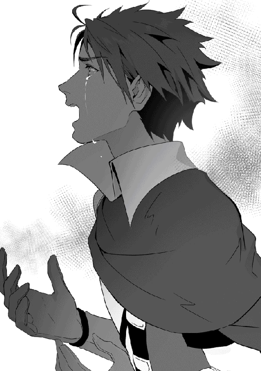
「あっ、ぁぁあああああああッ!?」
勇者はそこで目を覚ました。乱れた茶色の髪が目元に掛かり、額から大量の汗を流す。辺りを見渡すとそこは霧の山の中だった。自分は休息を取っていたのだと思い出し、汗を拭いながら顔を起こす。ふと自分の手が震えている事に気がついた。勇者はそれをもう片方の手で握り締め、表情を歪める。
「ごめん......ごめんなさい......ごめんなさい......」
謝罪の言葉が自然と口から漏れてしまった。それが誰に向けた物なのかは分からない。だが自身は謝罪しなければならない身なのだと勇者は思い込んでいた。誰に対しても謝らなければならない下等な生物。そう卑屈になる事で、少しでも自分の中にある罪悪感が消えてくれればと願った。
前方から物音がしたので勇者は顔を起こした。そこでは灯っている焚き火の向こう側に妹と寄り添う【双子の魔女】リリの姿があった。彼女は勇者の事を見下すように目を細めている。
「まーた夢を見たの？ 私達を殺す夢を......」
「......ごめん」
勇者が起こしてしまったか、と尋ねるとリリは別に、とだけ答えて顔を背けてしまった。
いつからだったかは分からない。勇者がこの旅を始めて、幾つかの夜を過ごした後、突然この夢を見るようになったのだ。最初は魔女達の姿を思い浮かべるだけだった。だが段々とその姿は血に染まった無惨な姿へと変わり、遂には自身が殺す場面へとなったのだ。それを毎夜見る度に勇者は絶え間ない苦痛に駆られ、まともに睡眠を取る事が出来ずにいた。
「あんたも難儀な性格よねー。そんな細い神経してんのに、よく勇者なんか務まったもんよ」
隣で眠っているミミの頭を撫でながらリリはふとそんな事を言った。その言葉に対して勇者は複雑な表情を浮かべた。リリの言葉は常に勇者の心を突き刺す痛々しい物ばかり。実際リリはそれを意図的に行っており、勇者もそこに関しては何も口答え出来なかった。
「でもそれで良いのよ。あんたはそうやって、苦しみ続ければ良いの。自分が犯した罪に悩まされながらね......」
リリは満足そうに笑みを浮かべながらそう言い、目を瞑ってしまった。
やはり起こしてしまったのだろう。それなのに文句を言わない所を見ると、やはり自分は彼女達に無理をさせてしまっていると勇者は思っていた。
あの時、勇者が贖罪の旅に出ようと決心した時、いざ外の世界に出たのは良いものの、彼はそこから何をすれば良いのか分からなかった。魔女に許しを乞おうにも既に自身が全て狩ってしまった。方法と手段が無いのだ。そして彼は悩んだ後に二人だけ生かしたまま封印している事を思い出した。今更封印を解除した所で許されるはずが無いのだが、それでも道は見つかるはずだ。そして彼は魔女の封印を解く旅に出たのだった。
そして現在、【双子の魔女】のリリに散々罵倒を浴びせられた後、勇者はひょんな事から彼女達と旅を共にする事となった。
リリは告げた。あんたに罪を償う方法を教えてあげる、と。それは勇者にとって何よりの救いの言葉だった。だから彼はリリに従う。どれだけ汚い言葉を浴びせられ、どれだけ痛むような事があっても、それが救いだと思っている。
「シャティファール......貴方の言う通り、自分の目で様々な世界を見て来た」
ポツリと勇者はそう呟いた。誰に語り掛ける訳でもなく、虚空に向かってそう呟く。
【叡智の魔女】シャティファールに言われた通り、勇者は自分の足で世界を周り、世の中はどういう仕組みになっているのかを考えた。そして分からされた。自分達がどれだけ無知だったのかを。
「俺は......魔女の事を何も知らなかったんだな」
魔女とは人々を脅かす邪悪な存在だと教えられてきた。小さな子供だって絵本でそう教えられるくらいだ。皆魔女とはそういう物だと思っている。だが勇者は実際に世界を回ってそれは違うと分かった。魔女という存在はそんな簡単に表現出来るものではなく、自分達人間よりもずっと前からこの世界を知っている、複雑な存在なのだ。
勇者は静かに目を閉じた。脳裏には魔女達の姿が映る。彼が静かに眠れる夜は訪れない。
とある山奥、魔物が頻繁に出るが故にそこは【獣の山】と呼ばれており、生えている木々や植物もどこか毒々しい見た目をしている。薄っすらと霧も広がり、人が迷い込めばもう二度と戻る事は出来ないとさえ言われている、そんな恐ろしい山。そんな山奥のある洞穴の中で、一人の少女が何やら妙な儀式のようなものを行っていた。
「......ふむ。やはり何かが足りないな」
銀髪の少女シャティアは薄汚れたローブから顔を覗かせながらそう呟き、神妙そうな顔つきをして口元に手を置いた。彼女は丁度岩の出っ張りに腰かけており、その前には儀式で使われる魔法陣が地面の上に描かれていた。だが何か特別な力が感じられる訳でもなく、その輪は魔力すら注入されずただそこに存在していた。それを見つめながらシャティアは小首を傾げる。
「材料は全て揃えたはずなんだが......詠唱も間違っていない。我が記憶違いなどする訳も無いし......何だ？ 何が足りない？」
シャティアの前には何かの生き物の骨や牙、見たことも無い草や触手などが置かれていた。
本来ならそれらを揃え、必要な魔力を送って詠唱を唱えれば人体生成の魔法が発動するはずであった。だがどういう訳か、必要な材料を揃えても、どれだけの魔力を込めても魔法は発動しない。記憶力に絶対的な自信があるシャティアは自分がミスしているなど当然考えない為、この現象に疑問を抱く。
「......困ったな」
ふとシャティアは自分の手元に置いておいた人形を手に取りながら寂しそうにそう呟いた。
瞳を揺らしながらじっと人形の事を見つめ、また元の場所に戻す。そして彼女は動かぬもう片方の手を抱えながら起き上がり、これからどうするべきかを考えた。
その時、洞穴の入り口に一匹の狼がやって来た。銀色の綺麗な毛を携えた狼で、その瞳は月のように美しく輝いていた。その名はスレイドウルフ。獣の山の中でも特に危険な魔物達として知られる狼達。実はシャティアはこの洞穴を住処にするようになってからはスレイドウルフ達を従わせ、周辺に人間達が近づいて来ないように調教しておいたのだ。
「何だ、どうかしたのか？」
「グルルル......」
シャティアが顔だけ入り口の方へ向けて尋ねると、狼は頭を垂れるように伏せながら声を上げて返事をした。そのスレイドウルフは群れのリーダーであり、シャティアが監視を任せている狼であった。そんな彼がわざわざやって来たという事なのだから、何らかの異変があった事は確かであった。
「なに、軍勢？......人間達か......違う？ なら一体どこの奴らだ？」
狼の報告を聞いてシャティアは目を細める。
本来スレイドウルフ達はシャティアが儀式している時に邪魔が入らないように侵入者を追い払う使命を与えられていた。だが彼らですら手が負えない相手が来たという事はそれなりの規模の勢力が現れた事が予想される。それならば軍勢だというのも納得出来るが、次の問題はその軍がどこに所属するものなのか、というものであった。
狼は小さな唸り声を上げて答える。それを聞いた瞬間、シャティアは目を見開いて硬直した。
「リザードマンだと......？」
リザードマン。それはトカゲのような姿をした二足歩行の生き物であり、その大きさは人間の約二倍。身体は硬い鱗に覆われており、剣や矢を跳ね返す。身体能力は極めて高く、魔法が使えずとも十分な実力を有している。そんな危険な種族。
彼らは人間の国や魔国と違い、大規模な領地を持たない。必ず少人数で集落を作り、普段は山に囲まれた秘境などに隠れ住んでいる。それは彼らの独自の文化が影響しており、リザードマンは自分達こそが優れた種族だと信じている為、下等な異種族達とは関わり合いを持たないようにしているのだ。
そんな彼らが軍に纏まって動き出した。シャティアにとってその報告は何よりも恐ろしい事であった。
「何故奴らがこんな所に......何か目的でもあるのか？ 奴らが動き出す程の利などそうそうあるとは思えんが......」
顎に手を置きながらシャティアはブツブツと呟いて思考にふける。だがいくら考えても答えは導き出せず、疲れたようにため息を吐くと髪を乱暴に掻いた。
上手くいかない事ばかり起きる。エメラルドの復活は成功しないし、予想外のリザードマンの動向。まさに事態は悪い方へとばかり向かっていた。どうにかしてこの状況を変えたい。そう考えるシャティアは目を細めながらしばらく黙り、動かぬ片方の手を掴みながら指をトントンと動かした。そして何かを決めたように目を瞑ると息を吐き、置いてあった儀式の道具を片付け、洞穴の外へと向かった。
「お前は仲間達を森の奥に下がらせろ。我は様子を探る」
「グルル......」
洞穴の外に出た後、ぴったりと横にくっ付いていた狼にシャティアはそう指示を出した。命令を聞いた狼は顔を頷かせながら唸って返事をし、地面を強く蹴って洞穴の横にあった岩場に飛び乗りながら去って行った。
シャティアは顔の向きを変え、目の前に生い茂っている木々に目を向ける。そして小さく深呼吸をすると辺りの魔力の気配を探り、リザードマン達の魔力を探った。しばらくすると彼らの魔力はようやく感じ取る事が出来た。リザードマンは魔法を使役しないが故に体内にある魔力も少なく、その反応は極めて小さい。シャティアですらこの山の中からリザードマン達の微弱な魔力の反応を探るのに時間が掛かるくらいであった。
リザードマン達の居場所が分かった後、シャティアはさっそくその反応があった場所へと向かった。気づかれないように浮遊魔法は使わず、歩きで深い森の中を歩いていく。草木は枯れ、トゲトゲとした枝をどかしながらシャティアは進み、ようやくリザードマン達が居る場所へとたどり着く。そこは丁度崖となっており、崖の下の道でリザードマン達が行進している所だった。シャティアは岩場に隠れながらその様子を探り、観察を始める。
「あれか......数はざっと百程。鱗は赤......【赤竜族】の奴らか」
行進しているリザードマンは全員鱗が赤く、いずれも巨体で鱗が尖った荒々しい見た目をした者達だった。リザードマンにも種族は色々とあり、今シャティアが見ているのは一般的に【赤竜族】と呼ばれるリザードマンであった。
ただでさえリザードマンは攻撃的で獰猛な種族と言われているのに、その中でも更に危険な存在として認知されている。見分け方は鱗が赤いかどうかの為、見掛けた場合はすぐに逃げてしまえば問題無い。もっとも、リザードマンの身体能力の高さから逃れる術は限られているが。
「ふぅむ......謎だ。ここ数十年間リザードマンが動き出すなど滅多に無かったのに、何故これだけの勢力が突然動き出した？」
シャティアは首を傾げながらそう疑問を口にする。
納得がいかないのだ。リザードマンは余程の事が無い限り自分達の住処である秘境から出るような事はしない。彼らは異種族を見下し、同じ空気を吸いたくないと思う程外の世界を嫌っているのだ。そんな彼らが軍を率いて現れたからと言うからには余程の事があるのだと推測出来る。シャティアはそれが何なのかを知りたかった。
「グゴルル......」
「──ッ!!」
その時、突如シャティアの隠れていた岩場の横からリザードマンが現れた。小さな布を羽織っており、その着方からまるで盗賊のような風貌をしている。
魔力が少ないが故にシャティアはその存在に気づくのに遅れた。偵察兵なのか、リザードマンは子供の姿のシャティアを見るなりいきなり襲い掛かった。何本もの牙が生えている口を大きく開けながら、手を広げて飛び掛かる。シャティアはすぐさま腕を払い、氷の槍を放った。
「ゴグァヴァアアッ!!」
「ちっ......我が接近を許すとはな......！」
リザードマンは氷の槍によって吹き飛ばされ、近くにあった木にぶつかる。しかしその身体は布が破けただけで目立った外傷は無く。逆に氷の槍が欠けている状態だった。
やはりリザードマンの鱗は硬い。シャティアは身体を起き上がらせると腕に力を込め、それを勢い良く振り下ろした。
「眠ってろ」
シャティアがそう言うと同時にリザードマンに凄まじい重力が襲い掛かった。いくら硬い鱗が持とうと重力の前ではそれは何の意味も成さず、むしろ硬い身体が故に逃げ出す事が出来ず、リザードマンは悲鳴を上げながらそのまま崩れ落ちて行った。地面に伏せ、うめき声を上げるリザードマンは最後に小さな悲鳴を上げて意識を失う。それを見たシャティアは腕を横に払い、魔法を解除すると小さく息を吐いた。
「まさか偵察兵までいるとはな......こいつ等、まさか戦争でも始める気か？」
シャティアは最初、リザードマン達はどこか別の土地にでも移動しているのだろうかと思っていた。何らの事情で集落を捨て、別の拠点を探す。それならこの大移動にも納得が出来る。だがリザードマン達は偵察兵も用意し、闘志が剥き出しだった。いくらリザードマンと言えどそこまで敵意を剥き出しにする必要があるのだろうか？ シャティアはそこに引っ掛かった。
「もう少し様子を探った方が良さそうだ......奴らの目的が何なのか。それを明らかにする必要がある」
気絶しているリザードマンの持ち物を漁りながらシャティアは結論付ける。
物事には必ず目的がある。たとえどんな小規模な物でも大規模な物でも、その要となるべき答えがあるのだ。それが謎のままでは対処のしようが無い。今は大胆に動かず、慎重に様子を探るべきだとシャティアは考えた。
懐にしまってある人形をそっと取り出しながら、シャティアは静かに瞳を揺らす。そして目を瞑りながら人形を戻し、再び目を開くと行進しているリザードマン達の後を追う事にした。
「最近街の人達が攫われてるって噂があるらしいわ......まぁ、街の人って言ってもこの辺りは魔族しか居ないけど。それでもこれは無視出来ない情報ね」
荒野での道中、訪れた街などで情報収集したリリは自身の赤い髪の毛を弄りながらそう口にした。妹のミミはそれを聞いて怖がるように姉の後ろに隠れる。それを岩に腰かけながら聞いていた勇者も顔つきを険しくし、耳を傾けた。
「魔族が攫われている......？」
「そ、あくまでも噂だけどトカゲみたいな見た目をした化け物が魔族を攫ってるんだって......」
「お姉ちゃん、もしかしてそれって......」
勇者の問いかけに頷きながらリリは更に自分が耳にした情報を告げる。それを聞いて心当たりがあるミミは信じられないとでも言いたげに首を振って途切れ途切れに言葉を口にした。リリも頷き、その言葉の続きを請け負う。
「リザードマンよ」
トカゲのような見た目、二足歩行、巨体、それらの情報から導き出される答えはリザードマンしかあり得なかった。その答えにたどり着き、リリは子供ながらも神妙そうな顔つきをし、ミミは見るからに怖がるように肩を震わせた。そんな中、勇者だけが疑問そうな表情を浮かべている。
「リザードマン？」
「人間達はあんま知らないでしょうね。リザードマンは滅多に姿を現さないし、人間達の大陸から大分離れた所に生息してるから」
勇者の疑問の声に当然とでも言うようにリリはそう言った。その言い方はどこか小馬鹿にしたように聞こえる。実際の所勇者はまるっきりリザードマンを知らないという訳ではなかった。異種族の中にそういう者も居るという事は知っていたが、何分今まで出会った事が無かった為、どのような種族なのか想像出来なかったのだ。それを察し、ミミはリリの後ろに隠れたまま説明を始めた。
「リザードマンは獰猛な種族なんです。言葉も通じないし、独自の文化で外界との接触も拒んでる。だから相互理解が難しい。正直言ってあまり出会いたくない異種族です」
ミミの説明を聞いて勇者はそんな種族も居るのかと顔を頷かせる。
異種族は皆独自の文化を持っているが、いずれも言葉が通じ、ある程度の理解をする事は出来る。故に勇者からすれば言葉も通じず会話も成り立たない種族が居るという事はちょっとした衝撃だったのだ。
「シャティファールですら手を焼く程よ。あいつ等はかつて竜を崇めてた......衝突した時は鎮圧に大分時間が掛かったからね」
「あの時は大変だったよね......竜の全盛期だったんだし」
リリは砂の上に腰を下ろしながら懐かしそうにそう言った。それに同調しながらミミも顔を頷かせ、指を弄る。二人の会話に付いていけない勇者はただ黙ってそのやり取りを見つめていたが、魔女は自分達が知らぬ所で世界の均衡を保とうとしていたという事だけ理解した。やはり自分の罪は重い。それを改めて理解し、勇者は悔やむように拳を握り締めた。
「奴らはきっと何かを企んでるわよ。でなけりゃわざわざ人を攫うような事なんてしないはずだからね。早めに手を打った方が良い」
パン、と手を地面に打ち付け、リリはそう結論を出す。ミミはまだ迷っているのか、その提案に賛同できなさそうに不安な顔をしていたが、リリの顔は勇者の方に向いていた。彼女は訴えているのだ。勇者が動くべきだ、と。そしてそれは本人も同じ気持ちだった。握りしめていた拳を解き、今度はそれを地面の胸へと当てる。おもむろにリリと目が合った。その瞳はいつか見た銀髪の魔女と同じように澄んでいた。
「務めを果たす時よ、勇者。リザードマン達の企みを暴きなさい」
「ああ......分かってる」
リリの言葉に対し、勇者は力強く頷いて自身の胸倉を掴んだ。
課せられた罪はまだまだ重い。きっとこの罪が軽くなる事など一生無いのであろう。それでも勇者は使命を果たし続ける。少しでもこの罪悪感から逃れる事が出来るよう。安心して眠れる夜が来る事を祈りながら、彼は自身の精神を削り取る。その姿を、【双子の魔女】の片割れは寂しそうに見つめていた。その瞳は悲しそうに揺らいでいる。
リザードマン。それはかつて大地を無限の炎で包んだと言う竜を崇める異種族。
リザードマンは始まりの竜によって生み出され、竜を自身達の神だと信じている。その信仰心は強く、揺るぎないが故に別の神や神聖な物を忌み嫌う。中でも、異質な存在として知られる魔女は彼らにとっても最も嫌悪すべき存在であり、一度は衝突した歴史があった。
【赤竜族】と呼ばれる赤い鱗が特徴のリザードマン達は隊列を組みながら獣の山の中を歩いていた。彼らは私語もせず、ただ黙って前を向いて歩き続ける。その行進はさながら軍隊のようであった。
そんなリザードマンの群れの中には一匹だけやたらと身体の大きいリザードマンが居た。硬い鱗で覆われている身体を更に鱗のように整えられた鎧で身を纏い、額に切り傷があるリザードマン。彼はこの群れの長であった。リザードマンの長は時折仲間達に声を掛けながら行進を促すように唸り声を上げる。それを聞くと周りのリザードマン達は脚を速めた。
「グゴルルルル！」
リザードマンの長は長い舌を出しながら声を上げる。そして顔を列の後ろの方へと向けた。そこには鎖に繋がれた魔族の者達が無理やり歩かされており、リザードマン達によって拘束されていた。魔族達はいずれも女や子供の為、抵抗する事すらろくに出来ず、辛そうな顔をしながら静かに脚を動かしていた。リザードマンはそれを見て満足そうに唸り声をあげ、腕を掲げて行進を促す。
「グゴォォァアアア!!」
リザードマンの長が雄たけびを上げると周りのリザードマン達もそれに呼応した。まるで喜びを表現するかのように腕を掲げ、歩みを速めて行く。彼らは何かに引き寄せられるかのように山の奥の方へと進んで行った。その歩みには迷いは無く、臆する事を知らない。
その様子を崖の上で眺めていたシャティアはふむと声を漏らし、小首を傾げた。拘束されている魔族達に目線を映し、何かを考えるように顎に手を置く。
「ふむ......奴ら、魔族なんか捕まえて一体何をするつもりだ？」
シャティアはあれから数分間リザードマンの動向を探り、ある程度の情報を得る事は出来た。ひとまずは彼らがどこかを目指している事、そして魔族の者達を捕まえて何かを仕出かすつもりだという二つが判明した。だがそれだけではいかんせん具体性に欠ける。出来る事ならもう少し詳しい情報がシャティアは欲しかった。
「恐らく儀式か何かをするつもりなんだろうが......少しの魔力しか持たぬ奴らが儀式を出来るのか？ いまいち目的がはっきりせん」
何やら怪しげな道具等を運んでいる為、シャティアはリザードマンが儀式を行うつもりなのだと当たりを付けていた。だが少なくとも儀式には一定量の魔力が必要のはず。微量の魔力しか持たないリザードマンは儀式には不向きだ。という事は魔族達に儀式をさせるつもりだろうか？ と予測も出来るのだが、異種族を嫌う彼らが魔族の力を利用しようとするだろうか？ その辺りの不明瞭な部分もある為、シャティアはまだ答えを出せずに居た。軽く唇を噛み、どう出るべきかとシャティアは思考する。
「......ん？」
ふとシャティアは周囲の毒々しい草木が揺れるのに気が付く。頭上の枝から紫色の葉が舞い降り、それがシャティアの顔の真横を通り過ぎて行った。その直後、シャティアに向かって疾風が放たれた。小さな竜巻のようなそれはまるで飲み込むかのような轟音を立て、草木を飛び散らせる。シャティアはその疾風をすんでの所で回避し、攻撃を仕掛けてきた者の方へと目を向けた。
「いきなり攻撃して来るとは感心せんな......何者だ？」
「グギュルル......」
それはリザードマンにしては随分と風変わりな恰好をした人物だった。頭に羽根つき帽子を被り、赤いマントを羽織った細身なリザードマン。顔つきも他のに比べるとシャープで、【赤竜族】には珍しい体型をしている。そんな彼の手には長い槍が握られており、その先は竜の牙のように研ぎ澄まされていた。
「おっと、まずは我から名乗らんとな。我が名はシャティア。ただの村人だ」
名を尋ねるならまずは自分から名乗らなければ、と思い直したシャティアは謝罪を込めて頭を下げ、そう語り掛けた。だが言葉が通じているのかどうかは分からず、リザードマンは小さく唸り声を上げるだけで返事らしい返事を聞く事は叶わなかった。シャティアは残念そうに肩を竦める。そして突如リザードマンは地面を蹴り、その場から勢い良く跳躍した。
突風が巻き起こる。リザードマンが持つ力なのか、それとも所持している槍の何らかの能力なのか、リザードマンは風に乗りながら宙を舞い、シャティアに襲い掛かった。すかさずシャティアは魔法の盾を作り出す。しかしその盾はリザードマンが振り抜いた槍によっていとも簡単に破壊され、シャティアは若干後ろへと吹き飛ばされる。
「お......おぉ......流石はリザードマンだな。恐ろしい腕力だ」
よろけながらも体勢を立て直し、シャティアは面白がるように口元を引き攣らせながらそう言う。
流石は竜の血を引くだけあってその力は凄まじい。魔力を込めた盾すら槍で破壊してしまうのだから、その一撃を生身で喰らえば一たまりもないであろう。シャティアは改めてリザードマンがどれだけ恐ろしい存在かを認識しながらも、なお余裕の表情を崩さなかった。
「疾風のリザードマンか......面白い戦い方をする」
「グルゥァァアアアア!!」
リザードマンは帽子の隙間から見える瞳をギラつかせながら咆哮を上げ、シャティアに槍を振り下ろした。シャティアは浮遊魔法でいち早くその場から離脱し、攻撃を回避する。
「素早いな......だが我も速さになら自信があるぞ」
シャティアはそう言って片手を上げ、呪文を唱える。すると彼女の背後から幾つもの魔法陣が現れ、そこから荊が飛び出した。すぐさまリザードマンは地面を蹴って後方へと逃げるが、荊はなおも追い掛けて来る。ならばとリザードマンは両手で槍を構え、それを振り回すと向かって来た荊をバラバラに切り飛ばした。
「グルルル......ッ!!」
その迅速な対応にシャティアは感心したように口笛を吹く。一方、一連の動作を終えたリザードマンの方には焦りがあった。
実は彼はリザードマンの群れの兵士を束ねる隊長の役割を担っており、長から【疾風の騎士】の称号を授かる程の実力者であった。更に彼は辺りの索敵を任されているチームのリーダーも任されており、途中で連絡が取れなくなった仲間の異変から辺りに敵が潜伏している事をいち早く気が付き、見つけたシャティアにすぐさま牙を剥いたのだ。
最初、彼はシャティアを見つけてもただの子供か、と落胆した。だが子供と言えど自分達の事を見られたからには生かしておく訳にはいかない。何より彼女は異種族。それだけで排除するには十分な理由だった。そして彼は槍を振るい、突風でシャティアを殺そうとした。だがあろう事か目の前に居た子供は自身の一撃を避け、更には魔法を使っていた。途端に子供は危険な敵へと変わったのだ。
リザードマンはこの攻防の中で少しずつ理解して行った。シャティアと自分の力の差がもの凄く離れているという事に。自分は全力でやっているが、目の前の子供はちっとも本気を出していない。それどころかすぐに終えられる勝負を敢えて長引かせ、観察し、研究しようとする余裕すら持っている。実に恐ろしい事であった。リザードマンにはシャティアが子供の皮を被った化け物にしか見えなかった。
「ギュルルゥ......」
だがそれでも、彼は槍を下ろさない。たとえどれだけ力の差があろうと、自分は長から隊長の座を授かった身。自分が敵を前にして引き下がるような事だけはあってはならなかった。故に彼はシャティアの実力を理解しつつも闘志を剝き出しにし、瞳を熱く燃やす。全身に力を入れ、神経を研ぎ澄まさせて槍を静かに構えた。
「グルルゥゥァアアアアアアアアアアア！！！」
そして地響きが起きそうな程巨大な咆哮を上げ、リザードマンは地面を蹴った。木を蹴り、枝を蹴り、その場を縦横無尽に跳び回る。自身が一番誇れる物は速さ。それを最大限利用した戦い方。たとえどれだけ力の差があろうと、隙を突いてしまえば関係無い。彼はそのまま高速移動で跳び回りながらシャティアに近づいて行った。
「ほぉ......！」
その美しいとも言える動きにシャティアは目を輝かせる。この後に及んでもその表情からは余裕が消えない。リザードマンがどれだけの力を見せつけても、少しも物怖じしない。そして背後から飛び掛かって来たリザードマンに気が付くと、シャティアは後ろを振り向く事無く、背後に魔法の壁を作り出した。鈍い音が響き、リザードマンはうめき声を上げる。だが逆に魔法の壁を利用してそれを蹴り、その場から離脱すると再び高速移動を始めた。
「面白い......実に面白い」
動きが止められても逆に相手の魔法を利用しての離脱。その見事な対応振りにシャティアは動かない方の手の平を広げ、もう片方の手で叩いて拍手を送った。
シャティアは目の前の敵がそれだけの地位を担う者である事を認めた。そしてその敬意を込めて彼女は魔法の行使を始める。
「だがすまんな。我はお前の曲芸に付き合っている暇は無い」
目を細ませ、冷たくそう言いながらシャティアは魔法を発動した。彼女の背後から巨大な魔法陣が現れ、そこから巨大な化け物の腕が飛び出す。そしてその圧倒的な大きさを誇る腕はリザードマンの速さなど関係なく、そのまま腕を振り下ろす事によって彼の動きを無理やり止めさせた。轟音が鳴り響き、化け物の腕に押しつぶされたリザードマンはうめき声を上げて地面でピクピクと痙攣している。
「グゴッ......ガッ......！」
あり得ない。こんな事はあり得ない。リザードマンは心の中でそう訴える。
始まりの竜から生み出された自分がこのような小さな存在に追い込まれるなどあってはならない事であった。リザードマンこそが生物として頂点に立つ存在。決してそれを揺るがす存在などあってはならない。あってはならないのである。そう吐き捨て、リザードマンは声を荒げて起き上がる。
「ルル......ガァァァァアア!!」
まだ手に持っていた槍を強く握りしめ、リザードマンは再び構えを取った。シャティアは巨大な腕を魔法陣の中に引っ込めながらそれを見て驚いたように口を開ける。
リザードマンは脚を前に突き出す。一歩。一歩。着実にシャティアへと近づく。そしてその槍を突き立てる為に、彼は腕に力を込め、腰を引く。だが、最早彼の意識は途切れていた。糸が切れたように脚は曲がり、リザードマンは白目を剥いてその場へと崩れ落ちた。それでも槍の先端はしっかりとシャティアの方へと向いており、彼の抵抗が最後まで残されていた。
「どれ、その心......覗かせてもらうとするか」
リザードマンを倒した後、シャティアは彼を木々が密集した所まで運びそこで調べを行う事にした。シャティアは読心魔法を習得している。その言葉の意味通り心を読む魔法だ。ただその魔法は対象の全てを読み取る事が出来るという訳ではなく、断片的に対象の心情を同じように味わう事が出来るという物であった。あまり利便性は無い魔法ではあるが、言語が違う相手でも使えるという利点がある為、このような場合ではうってつけの魔法であった。
「開け」
詠唱と共にシャティアは読心魔法を発動させる。片手をリザードマンの額に当て、そこから魔法陣が出現する。そして感覚を共有する事によってシャティアはリザードマンの心を読み取った。
シャティアの頭の中に様々な情報が入って来る。赤黒い景色に絶え間なく砂嵐が巻き起こり、そこにリザードマン達が歩いていた。彼らは何かを求めている。その思いは強く、たとえ自身の命を捨てても果たしたいと思っている。そして彼らの前に巨大な黒い影が現れた。大きな翼に、巨大な腕、鋭く伸びている爪、その姿はまるで竜のようであった。
竜は黒い影に覆われてその全貌はよく分からない。だがシャティアには見覚えがあった。邪悪で、闇の化身とさえ呼ばれていた存在。かつて大地を炎で覆いつくした怪物。古の竜。
読心が終わり、シャティアは魔法を解除する。そして疲れたように額から汗を垂らし、重苦しい表情をして髪を弄った。
「......なるほど」
ある程度予想は出来ていたが、確信を得た事によってシャティアの気は重くなった。身体を起こし、気分を紛らわせるように服を整えながらシャティアは情報を整理する。
「目的は竜の復活か。主の目覚めまで待てないのか？ やれやれ短気な連中だ......」
リザードマンの目的は自身達の創造主である竜の復活。竜の復活は元々予定されている事であるが、どうやらリザードマンはその時期よりも早く復活を望んでいるようだ。そう推測し、困った話だとシャティアは首を振って額に手を当てる。
恐らく彼は儀式に魔族達を使うつもりなのだろう。それも古典的な儀式で、ただ生贄として捧げる為だけに魔族達を攫ったのだ。それが竜の目覚めに必要な事なのか、はたまたそれで本当に復活するのかどうかは分からないが、それでも何かの拍子で竜が目覚めれば大変な事になる。情報を纏めた後、シャティアは眉間にしわを寄せてため息を吐いた。
「何にせよ止めなければならないな」
シャティアはこの野望は阻止しなければならない物と判断した。竜が目覚めてしまったら多くの自然が破壊される事となる。それだけは彼女にとって食い止めたい事であった。シャティアはリザードマン達が行進している方向に顔を向け、後を追う準備を始める。すると丁度その時、前方の草むらが揺れて足音が聞こえてきた。同時に魔力の反応も感じ取り、シャティアは何者かが迫って来ている事に気が付いた。
「......誰か近づいて来る？」
反応からして人数は二人。しかもリザードマンではない。片方は膨大な魔力を持ち、もう片方は僅かながらの魔力しか持たない何とも異質な雰囲気だった。
しかもその反応もまた妙で、膨大な魔力を持っている方は何か蓋でもされているかのように蠢いており、そして僅かな魔力しか持たぬ方も乱れがあった。何とも捉えづらい魔力の反応にシャティアは釈然としない表情をし、首を傾げる。そして警戒心を高めていつでも魔法を発動出来るように手を上げて身構えた。
草むらが大きく揺れ、そこから二人の人物が現れる。その二人を見てシャティアは驚愕の表情を浮かべた。何故なら二人とも自身がよく知る人物であったからだ。
「この馬鹿勇者！ ほんとあんたは役立たずよね！ アホ！ 間抜け！ 愚図!!」
「うぅ......ご、ごめん。ごめんなさい」
片方はシャティアもその怒る姿をよく見た相手、【双子の魔女】の片割れであるリリであった。相変わらず真っ赤な髪を横で結わき、黒と白の装飾が施された服を着た可愛らしい女の子。魔女だった頃はシャティアもよく可愛がったものだった。
そしてもう一人は忘れる事の出来ぬ相手、自身を殺した男であるあの勇者であった。シャティアが会った時よりも顔つきが少しだけ大人っぽくなり、若干目などが腫れている様子がある。雰囲気もどこか寂しげであった。
「リリ......勇者......？」
思わずシャティアは魔法を発動させる為に手を上げたままそう言葉を零した。それを聞いてリリと勇者も目の前に女の子が居る事に気が付き、驚いたように脚を止めた。そして最初はその女の子が何者なのか分からず、どうしてこんな所に女の子が居るのか？ と不思議そうな表情をしていた。だが次第にリリはシャティアから感じられる魔力がシャティファールの物だと気が付き、指先を震わせ始めた。
「え......嘘......シャティファール？」
姿形は全く違う。だがその内なる魔力の反応でリリは目の前に居る女の子がシャティファールだと気が付けた。隣で眺めていた勇者も段々と気が付き始め、急に冷や汗を搔き始めた。
「いやいやいや、嘘でしょ？......だって私より身長低くなってるし、いくら幻覚魔法でもシャティファールがこんなちんちくりんに変装する訳無いし」
「ちんちくりんで悪かったな。クロークと同じく相変わらず口が悪いようで何よりだ、リリ」
リリはあまりにも衝撃的な事だったからか信じられないと首を横に振り、最初はそれを認めなかった。だがシャティアがそれを察したように嘲笑い、魔女でなければ知らぬ話をした事によってシャティアがシャティファールである事を理解した。リリはいよいよ目に涙を浮かべ、我慢出来なさそうに声を漏らした。
リリは涙を流しながらシャティアに駆け寄った。今の姿のシャティアではリリの方が身長が高いが彼女は気にしなかった。駆け寄って来るリリを受け止め、シャティアは背筋を伸ばしてその頭を優しく撫でる。
その姿は普段の攻撃的なリリからはとても想像出来ない程子供っぽく、後ろで見ていた勇者も呆然としていた顔をしていた。
やがてリリは泣き止み、鼻を啜りながらシャティアから離れた。シャティアは乱れた服装を整えながら優しく微笑み、そして次はお前の番だと言わんばかりに勇者の方に顔を向けた。
「久しぶりだな......勇者。その様子だと我の言葉を信じてくれたようだ」
「......シャティファール」
勇者もシャティアがシャティファールだと確信し、何かを諦めたかのように肩を落とした。そんな様子を見せる勇者にシャティアは安心させるように笑い掛ける。
「それで、どうして二人は一緒に行動しているんだ？ というかミミはどうした？ リリ」
手を叩けない代わりに指をパチリと鳴らしてシャティアは本題へと変わる。
疑問はたくさんあった。勇者と魔女である二人が一緒に行動している事、必ずリリにくっ付いているはずのミミが居ない事、そして二人の魔力の反応がおかしい事。一つ一つを確かめる為、シャティアは岩の上に腰を下ろした。
「そ、それは......」
「ぜーんぶこの無能勇者のせいよ、シャティファール。こいつ、私達を狩った罪悪感のせいで力を上手く使えなくなってるの」
シャティアの質問を聞いて尋ねられてもいないのに勇者はバツの悪そうな顔をし、それを狙ったかのようにリリが責め始めた。どこか手慣れたその様子にシャティアは二人が長い間行動を共にしているという事にすぐ気が付く。
リリは勇者の方へと近づき、ぽんとそのお腹を殴った。子供の腕力の為そこまで痛くはないが、勇者は辛そうにうめき声を上げた。
「力が上手く使えない？」
「勇者としての力も、魔法も、剣も、全部中途半端になっちゃってるの。聞いた事ある？ 心の問題で満足に力が使えなくなるなんて」
「ほぅ......それはまた随分と興味深い」
リリの返答を聞いてシャティアは興味ありげに頷き、顎にそっと手を添えた。
曰く、勇者は最初の内は普通に魔法を使えていたらしい。旅の途中で魔物に襲われた際も十分退けていたようだ。だが悪夢で悩まされるようになってから、彼は徐々に力が扱えなくなっていった。最初は魔法がちゃんと発動しなくなり、次に自身の得意である剣術も満足に使えなくなっていったらしい。
「おかげで私とミミが掛けられた封印も完全に解けなくて、魔女の力を使えないのよ」
「ははぁ......なるほど、だから魔力の反応がおかしかったのか」
シャティアは二人から感じられる妙な魔力の原因が分かり、納得行ったように頷いた。同時に勇者が心の問題で力が使えないという理由が知りたくなり、その詳細を知りたいと思った。だが今は他にやるべき事がある為、その言葉を飲み込んで話を続けた。
「俺達はリザードマンの調査を行ってたんだ。だけどその途中、リザードマンの兵士達に見つかって、戦闘になった......そのせいでミミちゃんが」
「ちゃん付けするな!!」
説明役を代わり、勇者がポツリポツリと言葉を述べ始めた。だが勇者がミミの話をしようとした所でリリが割って入り、横暴な事を言いながら勇者の脚を蹴った。当たり所が悪かったのか、勇者は脚を押さえてうめき声を上げる。
「生贄として連れ去られた......という訳か」
「うっかりしてたわ。まさか私達の方が狙われるなんて......く〜、たかがトカゲごときに」
説明の続きを察し、シャティアが顎に添えていた手を下ろして何かを考え込むように瞳を揺らした。リリはまだ不満げに地面を蹴りながら愚痴を呟いていた。
ひとまず事情を知る事は出来た。シャティアが意外だったのはリリが封印から解かれた後も勇者を生かしている事だった。単純に力が不完全だったからという理由もあるかも知れないが、行動を共にするくらいなのだから大分驚きだ。シャティアはリリのその態度に少しだけ感心し、小さく口笛を吹いた。
「さて、これからどうするか......」
シャティアは一度岩から降り、思考の海の中に溶け込むように頭を捻った。
とりあえず今の目的は連れ去られたミミを取り返す事。そしてリザードマン達の野望を食い止める事。ミミは生贄として連れ去られた為、危害の心配は無いであろう。それでもなるべく早く助けるに越した事は無い。ただし問題はリザードマン達の群れ。一匹ずつならシャティアでも十分対処出来るが。
「......む？ ああ、しまった......」
ふとシャティアは後ろの方から微弱な気配を感じ取る。そしてその正体が何なのかを察し、何が起きたのかを理解すると悔やむように眉を寄せて自身の頬を叩いた。シャティアは慌てて走り出し、木々の隙間を抜ける。突然走り出したシャティアに驚き、リリと勇者もその後を追った。
「ちょっと......どうしたのよ？ シャティファール」
リリに声を掛けられながらもシャティアは振り返らず、目的の場所に付くと周囲を見渡した。案の定、そこには目標の姿が無い。代わりに地面にはリザードマンの足跡である巨大なへこみが出来ており、シャティアは小さく舌打ちを零した。
「まさかもう目が覚めるとはな......少し侮ってたか」
「この足跡......まさかリザードマン!? シャティファール、もしかしてあんたリザードマンを捕まえてたの？」
別に捕まえていた訳ではない、と訂正しながらシャティアは地面に手を当てて気配を探る。だがやはりと言うべきか僅かな魔力しか持たぬリザードマンの気配は探れず、シャティアは垂れた前髪を掻き上げてため息を吐いた。
疾風のリザードマンに逃げられたのはかなりの痛手だった。奴は敵を倒す事よりも味方への報告を優先し、この場から逃げ出したのだ。まさかリザードマンがそこまでの判断を下せるとは思っていなかった為、シャティアは完全に計算違いだったと悔やんだ。
「すまんな二人とも。これで完全に敵に我々の存在が知られる事となってしまった」
「......どうすんのよ？ 別にシャティファールだったらあいつ等くらい余裕で倒せるでしょ？」
「随分と我の事を買い被ってくれているな。ふむ、さて......」
シャティアは二人に背を向けたまま顎に手を添え、考え込むように唸った。
敵に自分達の存在は知られた。そうなるとリザードマン達はより一層警戒して進むようになるだろう。そうなった場合、戦闘の際はかなり攻撃的になり、より苦戦が強いられる事となるだろう。いくらシャティアと言えど狂暴なリザードマン達を多数相手にするのは消耗が激しい。シャティアはもっとシンプルで一網打尽にする事が出来る手を考えた。
「......一応、手はある。勇者、お前にも協力してもらうぞ」
考えを纏めた後、手を下ろして勇者の方を見ながらシャティアはそう言った。勇者は自身に声を掛けられた事が意外そうに目を見開き、戸惑ったように身じろぎした。
作戦を伝えた後、シャティアはリリに使命を与えて一度別れる事となった。その間シャティアと勇者は一緒にリザードマンの後を追う事となっている。
やはりと言うべきか、疾風のリザードマンの連絡を受けたらしいリザードマン達の群れは足を速めていた。このまま山を越えて次の山まで移動するつもりなのだろう。シャティアとしてはその山を越えられる前に決着を付けたかった。
「本当に大丈夫なのか？ リリを一人で行かせて......」
「......ミミはちゃん付けで、リリは呼び捨てか。何故だ？」
「え。いや......別に深い意味は......」
思わぬ質問に勇者はきょとんとした顔をし、困ったように言い訳をした。
「問題は無いさ。一人と言っても偵察程度だし、リリとてそんなヘマはしないだろう......多分」
シャティアは正面を向いて歩きながらそう答えた。けれど最後の言葉が引っ掛かり、勇者は思わずシャティアの事を二度見した。シャティアは清々しい程綺麗な瞳をしている。その顔を見た途端勇者はそれ以上質問する気が無くなってしまった。
「気になるのは作戦が上手く行くかどうかだ。我の見立てでは不備は無いと思うが......万が一という事があるからな」
「......その万が一を、俺が補うのか？」
「その通りだ」
くるりと振り返ってシャティアはそう言い切る。勇者に指を突き付け、まるで逃れる事は出来ない事を思い知らせるかのように鋭い視線を向ける。勇者は一瞬たじろぎ、歩みを止めた。同様にシャティアも歩みを止め、変わらず勇者の事を見つめる。
「......俺にそんな大役が務まるとは思えない」
言いにくそうに目線を下に向けながら勇者はそう答えた。自信無さそうに胸に手を当て、弱々しい雰囲気を出す。それを見てシャティアは呆れたようにため息を吐いた。
「確かに、今のお前は以前会った時より大分弱くなっている。だがだからと言って逃げる事は出来ん。果たすんだろう？ 勇者としての務めを」
「............」
シャティアの言い分に勇者は何も答える事が出来なかった。ただ寂しげに瞳を揺らし、シャティアの事を見る。その視線をシャティアも静かに受け止めた。
「心配するな。いざと言う時は我が何とかするさ」
最後にトンと自分の胸を叩いてシャティアはそう言った。安心させるつもりで言ったのだが、勇者からすれば自分よりもかなり小さく、幼い女の子が胸を張っているのは何とも言えぬ光景にしか見えなかった。思わず笑いそうになり、勇者は口元に手を当てる。それを見てシャティアは目を細めた。
「少しだけ教えて欲しい」
それから二人はしばらく歩き続け、目的の草むらが密集した場所に辿り着いた。後はここで合流の約束をしているリリが来るのを待つだけの為、シャティアは岩の上に腰を下ろし、勇者は気になっていた事を尋ねた。
「ん、何だ？」
「......君達魔女が一体どのような存在なのか、教えて欲しいんだ」
勇者は緊張しながら最後まで言葉を言い切った。所々声が震えており、拳を強く握りしめている為相当勇気を振り絞ったのだろう。シャティアはすぐには答えようとはせず、自身の髪を指で弄りながら何かを考えるように小首を傾げた。
「......ふむ」
しばらくの間二人の間には沈黙が流れ、どちらも何も言葉を発しなかった。シャティアは髪を弄ったまま、目線を下に向けて考え込んでいる。それを見つめながら勇者はただ黙って返事を待った。
やがてシャティアは指を下ろし、勇者の事を見上げた。その瞳は相変わらず綺麗に澄んでおり、益々勇者を緊張させた。
「その疑問に対しての解答は非常に難しいな。人間が何故生まれ来たのかを答えられないように、我々もただ存在しているから生きているだけだ、としか言えん」
ぱっと手を開きながらシャティアは軽くそう言った。確かに存在についての意味など問われた所で回答の仕様が無い。だが勇者は納得の行かなそうな顔をしていた。
「第一、お前は長い間リリとミミと一緒に旅をしていたんだろう？ その間二人に尋ねなかったのか？」
「ミミちゃんは少し教えてくれたけど......リリはあの通りだから」
シャティアがふと気になったので聞いてみると勇者は両手を上げて答えた。案の定と言うべきかやはりリリからはまともな情報を得られなかったらしく、ミミもミミで引っ込み思案な所があるからあまり話せなかったらしい。
そもそも勇者自身も思う所があってあまり聞けなかったのだろう。シャティアはそう考え、どう話すべきかと首に手を当てた。
「ふむ......そうだな、少しだけ説明するとしたら......」
全てを教える訳にもいかないのでシャティアは少し悩み、考えを纏めると首を触りながらおもむろに話し始めた。
「魔女と言うのはお前達が付けた俗称に過ぎない。我々は【ある種族】と言うだけで、決して魔女と言う特別な存在ではないのだ」
目を瞑りながらシャティアはポツリポツリと語って行く。その姿はまるで母親が子供に子守歌を聞かせるように優しく、暖かい雰囲気を出していた。
「ある種族......？」
「古い種族でな、もう殆ど生き残っていないだろう。今頃は何人生きているか......」
そこまで言い掛けてシャティアは口を止めた。勇者の表情が途端に暗くなる。何を意味しているか分かったのだ。
【七人の魔女】はただのある種族の集まりに過ぎない。勇者はそれらを狩ってしまった。封印した者や復活した者、生き残った者は居るが、それでも全員が無事とは限らない。ひょっとしたら何人かは本当に死んでいる可能性があるのだ。それに気が付き、勇者は自身の唇を強く噛みしめた。
「まぁ、どうせ滅びる運命だったのかもしれない。古い種族が消えるのは当然の回帰だ」
ぽんと膝を叩いてシャティアはそう言うと岩から起き上がった。話は終わりだと言わんばかりに服を払い、作戦の準備を始める。勇者は呆然と立ったまま地面を見つめていた。
「......ミミちゃん達は、その事を知っているのか？」
「............何故、そんな事を聞く？」
ふと勇者はそう尋ね、思わずシャティアは振り返って尋ね返した。勇者は静かにシャティアの事を見据え、一歩近づく。まるで何かを探るようにその視線はシャティアを逃がさず捉えていた。
「二人は物心付いた時から君に育てられたと言っていた。君は魔女の中でも長生きで、皆から母親のように慕われているんだろう？......何故彼女達に自分達の素性を教えない？」
勇者の言葉を聞き、シャティアはしばらくの間黙って正面を向いていた。だがやがて小さなため息を吐き、諦めたように首を振った。
勇者の考えはそこまで的を外れていなかった。確かにシャティアは魔女の中でも他の魔女達とは違う。一番長く時を過ごし、他の魔女達を育てた存在である。故にシャティアが他の魔女が知らぬ事を知っていてもおかしくはなかった。だが、だからと言ってシャティアが正直に答える義理は無い。
「......世の中には知らなくても良い事がある。勇者よ」
シャティアは答えない。真実を闇で隠し惑わしてしまう。結局勇者は知りたかった事を知る事は出来ず、シャティアとの会話はそれで打ち切られてしまった。シャティアもそれ以上何かを告げようとはせず、むしろ悲しそうな表情を浮かべていた。
それから数分もしない内にリリが合流した。偵察した限りではシャティアの予想した通りリザードマン達は予定されたコースを進んでいるらしく、後数分もしない内にこの付近まで来るらしい。丁度山と山の境目。ここで止めなければ彼らの目的を阻止する事は益々難しくなってしまう。シャティアは気を引き締め直して自身の頬をそっと叩いた。
「で、どうやってリザードマン達を出し抜くの？ シャティファール」
リリは髪を掻きながらそう尋ねた。シャティアの事だからきっと凄い作戦があるのだろう、とその瞳はキラキラと輝いており、シャティアはそれを眩しく思った。一度咳ばらいし、彼女は指を一本立てる
「別に我々の目的はリザードマンを全て倒す事ではない。儀式が出来なように人質を救出すれば良いだけだ」
リリの前を横切り、勇者の近くを回りながらシャティアはそう説明した。
そもそもシャティア達がリザードマン達と全面戦争をする必要は無い。彼らが儀式で必要としている人質さえ奪い返してしまえばそれで済むのだ。
「我が奴らの注意を引く。その間にリリと勇者はミミ達を助けてやってくれ」
もちろんだからと言って全ての戦闘を回避出来る訳ではない。対峙する以上そこで争いが起こるのは必然だし、奴らが大人しく人質を奪い返されるのを見ているはずが無い。だからこそシャティアは必要最低限の戦闘で済むように自分が囮になると言い、その間にリリ達に人質の救出を頼んだ。
「分かった......て、シャティファール。その魔法陣は？」
「ん？ ああ、これか」
ふとシャティアが腕を掲げて魔法を発動させる準備をしている事にリリは気が付き、指を差した。魔法陣を展開していたシャティアは思い出したかのように腕を振るい、魔法陣を自分の前へ動かす。
「ちょっと、山を消そうかと思ってな」
カラカラと笑いながらシャティアはそう言って見せた。思わずリリは頬を引き攣らせ、隣に居た勇者も複雑そうな表情を浮かべる。シャティアは面白がるように口元を歪ませ、そっと指を動かした。
リザードマン達はただひたすら前を向いて歩みを進めていた。自分達の神を復活させる為に、リザードマンの力を世界に知らしめる為に、己らの欲を満たす為に必死に脚を動かした。
険しい山を越え、幾つもの生贄を用意し、準備は着々と進んでいく。後一つ山を越えれば儀式の場へと着く。そこに辿り着けば目的を果たす事が出来るのだ。そう思えばリザードマン達の脚は軽くなり、行進を速めた。
しかし数歩進んでリザードマン達は疑問を感じた。景色がおかしい。自分達は山を目指していて歩いていたはずだ。それならば自分達の前にはその山が無くてはならない。だがどういう訳か目の前には平原が広がっている。リザードマン達は首を傾げ、そして言葉を失った。なんと自分達の頭上で巨大な山が浮いていたからだ。
「......グルァ!?」
リザードマンを束ねている長も思わず声を漏らし、自身の目を疑った。山が浮いているなどそんな事はあり得ない。あり得るはずが無い。だが目の前にある光景が現実だと訴えてくる。リザードマン達はそのあまりの超常現象に狼狽え、困惑した。
「山が、浮いてる？......この魔法はひょっとして......」
その光景を見て鎖に繋がれて拘束されているミミも異変に気が付き、何かを察した。このようなあり得ない現象を起こす人物に一人だけ心当たりがある。だがそれこそあるはずが無い。その人物はもうこの世には存在しないのだ。なら、目の前で起こってる現象は誰が起こしている物なのか？ ミミですらその答えにはたどり着けず、呆然と口を開く。
「目的地を奪った。道を失ったお前達は次に何をする？」
その場に少女の声が響いた。リザードマン達がその声の主を探すと何とその少女も上空に浮いており、美しい銀色の髪を靡かせていた。
【叡智の魔女】シャティア。彼女は優雅にその場に居座り、リザードマン達の事を見下ろしている。浮いている山を背にしながら、さも黒幕であるかの如く振舞っている。
「轟け」
シャティアは片腕を上げ、勢いよく振り下ろした。直後にリザードマン達の近くに雷が落ちた。轟音を響かせ、地面を黒く染まらせる。リザードマン達は雄たけびを上げ、シャティアが敵だという事を認識すると牙を鋭く尖らせた。
シャティアは続けて腕を振るい、幾つもの雷を落とす。上空からの攻撃にリザードマン達は抵抗出来ず、一時散開する事にした。
「今だ。勇者、リリ」
リザードマン達が散ったのを確認し、シャティアは指を鳴らして合図をした。直後に林の間から勇者とリリが飛び出し、生贄を連れているリザードマンを吹き飛ばして魔族達を救出した。
「お姉ちゃん!?」
「早くこっち来なさい！ ミミ！」
リリが突然現れた事に驚き、なおかつ見知らぬ少女が山を浮かしている光景にミミは完全に戸惑っていた。しかし姉に導かれるがままに林の中へと走らされ、勇者に連れられた魔族達もリザードマンの包囲から脱出する。
「シャティファール！」
「我は時間を稼ぐ。その間に魔族達を安全な所まで連れて行け」
一度歩みを止め、勇者はシャティアの名を呼ぶ。するとシャティアは浮遊魔法を解いて一度地面に降り立ち、勇者にそう言うと早く行くように手を払った。
勇者は申し訳なさそうに唇を噛み、仕方なく頷くと魔族達に付いてくるように指示を出し、走り出した。リリとミミもその後に続く。
「......さて」
全員が避難した事を確認し、シャティアは小さくため息を吐く。まるで肩が凝ったかのように僅かに首を回し、腕を振るった。しばらくすると散開していたリザードマン達が戻り始め、シャティアを囲むように集まった。
「グルァァァァァァアア!!」
「こうして大勢集まると圧巻だな。さすがの我も全てを相手するのは骨が折れそうだ」
集まったリザードマン達を見てシャティアは僅かに笑みを零しながらそう言った。余裕そうな態度を取っているがリザードマン一体一体が強いのは事実。それが束となればとてつもない力を発揮する。いくらシャティアでもそれを抑えきるのは不可能である。故にシャティアは策を講じる。
「ま、全てを相手にするつもりはもとより無いが」
ニコリと可愛らしい笑みを作ってからシャティアはそう言い、指を下に振るった。その瞬間、リザードマンの頭上から何やら重々しい音が聞こえてきた。何事かと思って見上げてみれば、先程まで浮かんでいた山が落下して来ていた。
まるで大地が蠢くかの如く、その場に落雷よりも凄まじい衝撃音が鳴り響いた。いち早く逃げ出したリザードマン達は幸い山に押しつぶされずに済んだが、それでも周りに伝わった衝撃波と砂煙によって何人ものリザードマン達が吹き飛ばされていた。
そんな中、シャティアだけは浮遊魔法を使って衝撃波から逃れており、悠々とその光景を眺めていた。
「あまりこう言った乱暴な事はしたくなかったが......まぁ、後で綺麗に元通りにしよう」
元々自然を愛しているシャティアからすればこのような魔法はあまり使いたくなかったのだが、今回は仕方なく行使した。その代わり後で被害があった木々や地面を元通りにすると決め、リザードマン達の方へと視線を戻す。
「グルゥゥァアアアアアア......ッ!!」
「ほう、結構残ったな」
砂煙が収まり、起き上がったリザードマン達は咆哮を上げてシャティアと対峙した。全員がこの異質な少女を倒す為に戦意を高めている。そのプレッシャーを受けながらシャティアは小さく息を吐き、肩の力を抜くと片手を前に出した。
「来るが良い」
そう言うと同時にリザードマン達は一斉にシャティアへと襲い掛かった。爪を光らせ、牙を剥き、己の力を持って圧倒しようとする。その全てをシャティアは魔法の壁で受け止め、続けざまに光の球を放ってリザードマン達を吹き飛ばした。しかしリザードマン達も木を足場に使って上空から攻撃を仕掛け、シャティアの不意を突こうとする。すぐさまシャティアはそのリザードマンに手を向け、魔法の鎖を放つと拘束して地面へと打ち付けた。
「どうした？ その程度か？」
にやり、とわざとらしくシャティアは笑ってみせる。言葉は通じずともリザードマン達はそれが挑発だと分かり、一際大きな咆哮を上げるとシャティアへと飛び掛かった。リザードマンの太い腕がシャティアを潰さんとばかりに振るわれる。シャティアはそれを浮遊魔法で後ろに回転する事によって躱し、続けて振るわれた尻尾も魔力波によって吹き飛ばした。そのまま衝撃を受けてリザードマンは地面に崩れ落ち、気絶する。
流石に数では圧倒するリザードマン達も次々と仲間達が倒されるのを見て恐れをなしたのか、一瞬攻撃の手が止まる。囲まれているのはシャティアだと言うのに、まるでシャティアの方がリザードマンを捕まえているかのようだった。
「......む？」
ふとシャティアは異変に気が付く。囲んでいるリザードマン達の一部が道を開き、そこから一匹の巨大なリザードマンが姿を現した。子供のシャティアよりも何倍も大きく、他のリザードマン達よりも強靭な身体を誇る。シャティアはそれがリザードマンの長だとすぐに見抜いた。身体には幾つもの傷が残っており、鱗は一際鋭い形をしている。より竜に近づいた体型をしており、尻尾の長さも他の倍はあった。
「ルルゥァ......」
「リザードマンの長か......立派な姿をしている」
長なだけあって知恵もあるのか、リザードマンの長はすぐにシャティアに襲い掛かろうとはしなかった。低い唸り声を上げながらシャティアを見定めるように見つめる。
「人間......下等種族に、しては......中々面白い技を、使う......」
「ほぉ、言葉が分かるのか。長なだけあって頭も良いな」
リザードマンの長は喉を震わせ、低い声でシャティアへと語り掛けた。時折唸り声が混ざり、聞き取り辛い言葉ではあったがシャティアには十分理解出来る物だった。片腕を下ろし、地面に降り立ってシャティアは耳を傾ける。
「貴様はもう、気づいているだろうが......我々は竜を目覚めさせる、つもりでいる......」
腕を払い、山を指さしながらリザードマンの長は己の目的を語った。シャティアが予想した通りその内容は竜の復活であり、シャティアは反応を示さない。静かにリザードマンの長の言葉を聞いた。
「だが、我々は竜に頭を垂れるつもりは、無い......我々は、竜を支配するつもりなのだ......！」
「ほぅ、己らの神を救うのではなく、利用するつもりだと」
リザードマンの長の話を聞いてシャティアは興味深そうに口元に手を当てた。自分達の神を解放させるつもりで竜を復活させようとするのなら普通だが、それを支配しようとなると中々に貪欲な話であった。そもそもリザードマンは竜によって生み出された存在。自分達の創造神を利用しようなどと、傲慢な事である。だがシャティアは怪訝な表情はせず、面白がるように口元を引き攣らせた。
「確かに我々は竜によって生み出された存在......が、我々は奴の僕ではない！......我々は竜人として、世界の覇者となるのだ......！」
拳を強く握りしめてシャティアに見せつけながらリザードマンの長はそう言い放った。その言葉は不慣れが見えながらも意志は強く、シャティアはそこに確かな目的がある事を感じ取った。彼らは本気で竜という存在を超え、自分達が世界の頂点に立つ存在となろうとしているのだ。
「恐ろしく傲慢な話だな。我からすれば子が親を超える為に必死に頑張ろうとしているようにしか見えんよ」
「我々は子などではない......！ 竜人だ!! 聖なる種族なのだ......ッ!!」
今度は牙を剥き出しにしてリザードマンの長はそう言い張る。そこには怒気が込められており、自分達が竜の配下のように扱われるのをひどく嫌っているようであった。
「竜人こそが、最強の種族......！ 人間よりも、魔族よりも......あの魔女よりも、高みを行く存在なのだ!!」
「ほぉう......魔女よりも」
リザードマンが魔女よりも、という言葉を口にした瞬間シャティアは目を細めてそれを指摘した。別に魔女が下に見られて不満を抱いた訳ではない。シャティアが感じたのは忌まわしき魔女を恐れずそれを下に扱う竜人の欲の深さに感心したのだ。
「そうだ......！ 以前我々が妖精の地を、侵略しようとした際......奴らに邪魔、されたが......その魔女も今はもう居ない......我々の時代だ！」
かつて一度魔女と竜人は衝突した事があった。その時は制圧される形で竜人が押され、一旦引き下がる事となった。その時の事を覚えているシャティアはああ、と小さく諦めたような声を漏らした。
「貴様、もどうだ？ 人間にしては強い......特別に、我の配下にしてやっても、良いぞ？」
リザードマンの長は首を大きく曲げながらシャティアに自身の大きな手を差し出してそう尋ねた。しかしシャティアは顔を下に向け、黙り込んでしまう。髪で隠れ、その表情を読み取る事が出来ない。やがてゆっくりと彼女は顔を上げ、リザードマンの長に答えを出した。
「悪いが......御断りしよう」
純粋な清々しい笑みを浮かべながらシャティアはそう宣言する。その瞳は真っすぐリザードマンの長の事を見つめており、自分の答えを曲げるつもりは無い、としっかりとした意志が込められていた。
「何故なら我は【叡智の魔女】だからな」
シャティアはそう言うと同時に手を払った。その瞬間辺りの影がゾプリと音を立てて沼のように蠢き、シャティアを中心に渦を巻き起こし始めた。その禍々しさはまるで地獄へと誘う闇のようで、リザードマン達は形容しがたい恐怖を感じた。
シャティアはただ静かに笑っている。優しい表情をしながら、そっと闇に手を翳す。
勇者とリリとミミは魔族を連れながら林の中を走っていた。いくらシャティアがリザードマンを相手にしているからと言って、リザードマンがただ黙って生贄を見逃すような事はしない。現に何匹かのリザードマン達が木々を蹴りながら接近して来ており、勇者達は必死に逃走していた。
「お姉ちゃん！ さっきの女の子って......！」
「その事は後で説明するから......！ ああ、もう。大体あんたの想像通りよ！ あれはシャティファールよ!!」
走りながらミミは姉のリリに質問し、リリも切羽詰まりながらも妹の願いという事から簡単に説明した。ミミもある程度予想しており、あの銀髪の少女がシャティファールだと知って確信を得た。
リリはふと後ろを見る。自分達が誘導した通り魔族達が付いてきており、さらにその後方にはリザードマン達が追ってきている。数はざっと五匹程。軍隊と比べれば大分少ないが、まともに魔法が使えない自分達と中途半端な勇者では幾分か苦戦する数だ、とリリは判断した。
「ったく......勇者！ リザードマンが追ってきてるわよ！」
「分かってる......！」
リリに指摘され、勇者も心得ていると返事をしながら脚をさらに速めた。腰にある剣にそっと手を置き、何かを考え込むように眉間に皺を寄せる。そして覚悟を決めると剣を引き抜き、その場で停止した。
「リリ、魔族の人達を頼む！」
勇者はリリ達にそう頼むと横切っていく魔族達を急がせ、リザードマン達と対峙した。リザードマン達はスピードを緩めず勇者へと飛び掛かり、爪を走らせる。勇者は剣を振るって爪を受け流し、一匹目のリザードマンを横に退かせた。
「グルゥゥァアアアア!!」
「はぁぁぁ!!」
続けて二匹目のリザードマンが勇者へと飛び掛かり、そのまま勇者は地面へと押し倒された。リザードマンの鋭い牙が並んだ口が勇者を喰らおうと開かれ、顔を接近させる。しかし勇者はかろうじて握っていた剣の柄を使ってリザードマンの顔を殴り、一瞬怯んだ隙にリザードマンを蹴飛ばして起き上がった。
「グォァアアルルルッ!!」
体勢を整えたのもつかの間、すぐに背後から三匹目のリザードマンが襲い掛かって来た。勇者は剣で応戦するが四匹目のリザードマンも乱入し、勇者は窮地へと追いやられる。
勇者は徐々に後ろに下がりながら何とか剣を払い、リザードマン達の攻撃を防いだ。そして苦し紛れに手の先に魔力を込めると、それを解放した。
「勇者の名を以って命ずる、光よ切り裂け！」
詠唱を唱えると同時に勇者の手の先から無数の光の線が飛び出した。リザードマン達はその光に巻き込まれ、勢いよく回転しながら林の方へと吹き飛ばされて行く。だが勇者も何故か後ろに吹き飛ばされ、尻もちをついた。腕が痺れたように震え、思わず剣を落とす。
「ぐっ......うぅ......！」
勇者は腕に伝わる痛みに耐えながら悔やむように唇を噛んだ。
やはり、と言うべきか魔法が正常に発動しない。魔法は使用者のイメージによって発動される。しかし心に問題を抱えている勇者はたとえ魔法を正しくイメージ出来たとしても無意識の内に罪悪感を覚えており、自身を痛めつけるような副作用が起こってしまうのだ。
「やっぱり......上手く行かないか」
痛みが引き、何とか腕が動くようになったのを確認して勇者は剣を拾う。そして最後に残ったリザードマンへと目をやった。そのリザードマンは他のとは違い、羽の付いた帽子を被った細身のリザードマンであった。手には槍が握られており、明らかに先程のリザードマン達とは違う雰囲気を醸し出している。
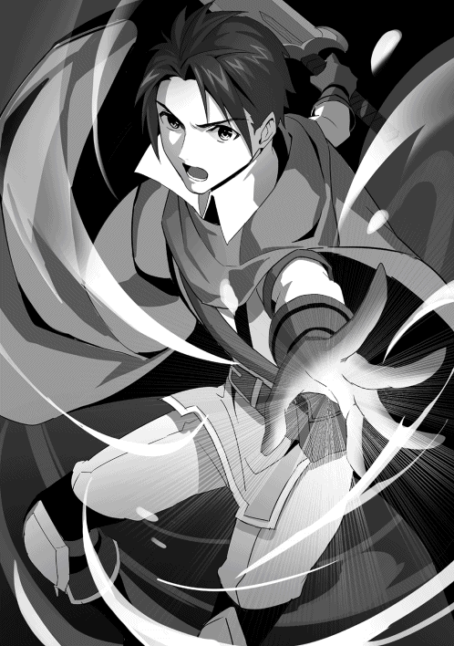
「ルルル......！」
「羽根つき帽子......シャティファールが言っていた疾風のリザードマンか」
シャティアから風を操るリザードマンが居るという情報を聞いていた為、勇者は目の前に居るリザードマンがその人物であるという事が分かった。疾風のリザードマンは槍を強く握りしめ、低い唸り声を上げながら構えを取る。同時に勇者も剣を構え、二人は静かに睨み合った。
「来い......ここから先へは、死んでも行かせないぞ」
勇者は剣を構えたまま力強くそう言い放った。言葉は通じないがその態度から疾風のリザードマンも勇者が自身を通さないつもりでいる事を悟り、それを了承するかのように小さく唸った。
リザードマンが僅かに脚を前に出す。それに応じて勇者も脚をズラし、いつ攻撃が来ても対応出来るように剣を低く持った。
草木が風で揺れる音が響く。そして風が止んだ瞬間、疾風のリザードマンが勢い良く跳躍し、勇者へと襲い掛かった。
野獣の如く闘志を剥き出しにして襲い掛かってくるリザードマンの長に対してシャティアは冷静に対処した。牙を光らせて飛び掛かってくれば受け流し、爪を鋭く伸ばして攻撃してくれば魔法の壁で跳ね返す。リザードマン達は自分達の長の攻撃が全て魔法によって無力化されているのを見て呆然と立ち尽くしていた。
「グルゥァァアアッ......アアっ！」
「無駄だ。お前達の攻撃の仕方はもう見切った。我の魔法の前では全て無意味だ」
リザードマンの長は吠え、拳を振るった。しかしその拳も魔法の壁によって阻まれ、鱗が欠けて血が飛び出す。それを見てシャティアは冷たい視線を向けながら攻撃を止めるように促した。
既にシャティアは数度のリザードマンとの戦闘を行っている。それだけ戦えばリザードマン達の攻撃方法も見えてくる。特に観察力に優れているシャティアならば共通の攻撃手段しか持たないリザードマンを受け流す事など造作も無い事であった。
「ゴルゥァ......！」
かと言ってリザードマンの長も簡単に負けを認める訳には行かない。自身の背後には何十人もの同胞達が居る。彼らの長として自身の敗北を見せる訳には行かないのだ。故に彼は拳を握る。指の隙間から血が垂れながらも、真っすぐシャティアに向かって走り出し、魔法が発動される前に拳を届かせようとした。
「無駄、と言っている」
リザードマンにとっての最高速度。普通それは人間では反応しきれない速度のはずであった。だがリザードマンの長の拳はシャティアの頬を掠めただけで、シャティアはリザードマンの長の背後に回ると彼の背中にトンと指を突き付けた。突如銀色の閃光が走り、リザードマンの長の背中に激痛が走る。衝撃で吹き飛ばされ、地面をゴロゴロと転がりながら彼は倒れ込んだ。
「グゥ......ォァアア！......人間、ごときがぁァア!!」
リザードマンの長は吠え、身体を起き上がらせる。全身に痛みが走るが気にせず、彼は瞳をぎらつかせてシャティアの事を睨む。シャティアは相変わらず余裕の態度で構えも取らずにリザードマンの長と対峙していた。
それを舐めているのだと考え、リザードマンの長はより怒りを露わにしてシャティアへと飛び掛かった。両腕に力を込め、目に見えぬ程の速さでシャティアに向かって爪を振るう。
「ルグゥァアアアアアアアア!!」
「どれだけ力で訴えようとも、同じ攻撃しか出来ぬなら脅威は無い」
自分の身体の周りに魔法の壁を作り出し、シャティアはその攻撃を防ぎ切る。そして隙が出来たリザードマンの長に手の平を向け、巨大な魔力砲を放った。轟音と共にリザードマンの長は吹き飛ばされるが、空中で回転すると地面へと降り立ち、再びシャティアへと向かって行く。
「ガルルルゥゥウ!!」
身体を捩じらせ、尾を振り回してシャティアへと飛び掛かる。リザードマンの巨体と高速で回転する事によって繰り出される尻尾での攻撃の破壊力は計りしれず、シャティアはギリギリの所でそれを回避した。すると尾は地面へとぶつかり、抉るように土を飛び散らせた。
流石のシャティアでも今の攻撃を喰らえば不味かったであろう。致命傷にはならないだろうが、それでも身体のどこかを破壊されている可能性があった。にもかかわらず彼女はまるでそれを楽しむかのように笑みを浮かべた。
「ほぅ、今のは中々良かったぞ。少しだけ驚いた」
「グルルル!! ぬか、せ......!!」
まるで褒めるようにシャティアが感想を零すのでリザードマンの長はそれも舐めているのだと考え、咆哮を上げた。喋るくらいの余裕があるならば、息を呑む間も忘れさせてやろう。リザードマンの長は全身に力を込め、地面を蹴った。宙を舞い、滑空してシャティアに蹴りを放つ。
「お、っと......！」
魔法の壁を形成し、シャティアはそれを防ぐ。しかし多少なりにも衝撃はあったようで、シャティアはすぐには反撃に出られなかった。今が好機だと考え、リザードマンの長は追撃を仕掛ける。腰を低くし、腕に力を込めて思い切り拳を振り抜く。だがそれを空を切り、シャティアは浮遊魔法で上空へと逃げていた。
シャティアは詠唱し、指先に光を作り出す。その光は小さく弾けると無数の光の線と化し、リザードマンの長へと襲い掛かった。線が鱗に触れた瞬間焼き切られるような痛みが走り、リザードマンの長は地面を蹴ってすぐにその場から距離を取った。
「ルグァ......ッ!!」
「どうした？ 逃げるなど長らしくない行動だな」
その様子を見て地面に降りながらシャティアは分かり易いくらい安い挑発をした。しかしリザードマンの長にとっては逃げるという言葉は自身にとって最もタブーであり、彼を怒らせるには十分な内容であった。
牙を食いしばり、再びリザードマンの長は加速する。右へ左へとフェイントを掛け、今度は彼がシャティアの背後へと回って爪を振るう。だがその爪はシャティアの身体を捉えず、まるで煙のようにシャティアの身体は細切れになって消えてしまった。
「グガッ......!!」
「こっちだトカゲ君」
突如リザードマンの長の真上から声が聞こえる。見上げるとそこには浮遊魔法で宙に佇んでいるシャティアの姿があった。リザードマンの長はすぐに攻撃を仕掛けようとするが、その前にシャティアは魔法の鎖を放ち、リザードマンの長の手足を縛り付けた。
「ゴガッ......!!」
すぐさまリザードマンの長はその鎖を引き千切ろうとするが、シャティアの魔力によって頑丈に形成されているその鎖は物理的に壊すのは至難の業であった。リザードマンの長が手間取っているのを面白がるように見下ろしながらシャティアは腕を払い、鎖を操る。するとリザードマンの長も鎖に引っ張られ、宙を舞って地面へと叩きつけられた。
「ルルァァ......!?」
「鎖に繋がれた気分はどうだ？ お前は我のペットだ。芸の一つくらいしてもらうぞ」
「グル......貴様ァ......ッ!!」
まるで飼い犬と遊ぶかのようの優しい笑みを浮かべながらシャティアは言う。リザードマンの長は嫌な予感を覚え、顔を青くしながら冷や汗を掻いた。手足に絡みついている鎖を掴み、思い切り引っ張る。だがシャティアが腕を払って鎖を操り、リザードマンの長を引きずるように地面に転がした。
「ルグァア......!!」
何の抵抗も出来ず、リザードマンの長は悲鳴の声を上げる。シャティアは一度腕を止めると今度は勢い良く振り上げ、リザードマンの長を地面に何度も打ち付けた。彼の苦痛の声が響き、それを見ていたリザードマン達は戦意を喪失したかのように後ずさりをする。
「ゴ......アァ......！」
「中々しぶといな。これではペットと言うよりもサンドバッグだ」
土だらけになり、疲れ切った表情をしているリザードマンの長を見下ろしながらシャティアはそう言った。リザードマンの長は意識が途切れそうになりながらも何とか保ち、低い唸り声を上げて身体を起こした。
「貴様のような......子供に、リザードマンが負ける、ものか......我々は、選ばれし種族なのだ......!!」
自分達こそが最強の種族であると信じているが故にリザードマンの長は倒れない。彼には長い歴史が、リザードマンのプライドが抱えられている。決してそれを振り払って逃げる事は出来ない。故に何度シャティアに痛めつけられようとも彼は牙を剥き、爪を伸ばして立ち向かう。
「リザードマンの誇りだ......我々が、世界の王者となるのだ!!」
「ならばそんな誇り、捨ててしまえ」
吠えるリザードマンの長にシャティアは容赦無く鎖を操り、大きく宙を舞わせて地面へと叩きつける。横へ払い、木々にぶつけ、岩に勢い良く叩きつける。リザードマンの長は口から血を吐き出し、何かが切れたように地面へと崩れ落ちた。
「選ばれし種族？ 世界の王者？ そんな物はお前達の妄想だ。竜によって誕生したお前達が竜を超える事など出来ない。お前達はただ自分達の力を見せつけたいだけだ」
リザードマンの長は動かなくなっているがまだ息はあった。それを確認してシャティアは彼に近寄り、そう言い放つ。その間リザードマン達は誰一人としてシャティアに襲い掛かろうとせず、黙ってその光景を見届けていた。
「自分達の住処へ帰れ。生き物にはそれぞれ帰るべき場所がある。ここは、お前達が居て良い場所ではない......」
「グ......ウゥ......」
最後にそう言い残し、シャティアは腕を横に払って魔法の鎖を解除した。リザードマンの長は手足を縛っていた鎖が解かれたのを見て信じられないとでも言いたげにシャティアの事を見上げた。彼女はただ冷たい瞳を向けたまま、ゆっくりと目を瞑り、横に振り向いて森の方へと去って行こうとした。
必要以上の戦闘はしない。自身の力は十分に示した。これ以上戦えば相応の対応を取ると警告もした。シャティアはこれ以上リザードマンの長と戦闘をする事は無いと判断した。故に鎖を解放し、彼に逃げる道を与えたのだ。だが、リザードマンとしての誇りがある彼からすればそれは侮辱と一緒であった。殺される事も無く、ただ敗北だけを見せつけられておめおめと生きていく羽目となる。そんなのは死ぬよりも残酷な事であった。故にリザードマンの長は身体を起こし、背中を向けているシャティアへと飛び掛かった。
「グルゥゥァアアアアアアアアアア!!」
彼の爪がシャティアの首を捉えようとする。だがその爪はシャティアの身体を通り抜けてしまい、彼女の身体はまたもや煙のように消えてしまった。リザードマンの長は瞳を見開き、硬直する。すぐ背後からは冷たい気配が漂って来ていた。
「愚か者が」
リザードマンの長が背後を振り向く前にシャティアは彼の身体に魔法の鎖を縛り付け、再び宙に飛ばして地面へと叩きつける。更に鎖を引っ張り、リザードマンの長を自分に接近させると至近距離で魔力砲を放ち、再び吹き飛ばす。そしてまた鎖によって引き戻され、今度は後ろへと思い切り投げ飛ばされる。ボロボロの姿になったリザードマンは岩に打ち付けられ、それを衝撃で破壊し、崖にぶつかる事によってようやく沈黙した。
「ゴ......ガ......ッ......」
今度こそ気絶し、リザードマンの長は立ち上がらない。それを確認してシャティアは疲れたようにため息を吐き、髪を払った。そしてチラリと横を見るとリザードマン達が怯えたように後ずさり、シャティアは満足そうに頷いて歩き出した。
誰も彼女を止めようとしない。止める事など出来ない。まるで嵐のように爪痕を残し、彼女は静かに去って行く。
疾風が舞う。槍を振り回す度にそこに突風が巻き起こり、辺りを巻き込みながら削り込んで行く。
勇者は小さく息を吐いた。辺りで風が巻き起こっているせいで落ち着いて呼吸をする事すら出来ない。だが落ち着き、平静を保ったまま彼は剣を静かに構えた。風に乗りながら向かって来る疾風の竜人は槍を振り下ろす。交差する間際に勇者は剣でそれをはじき返し、リザードマンの鱗の隙間に剣を差し込んだ。
「ルグァ......ッ!!」
「......ふっ！」
一瞬の交差、ただそれだけの間だけで攻防が巻き起こり、リザードマンは傷を負い、勇者は死線を潜り抜けた。何か一つをミスすれば自分の首が飛ぶ危険な賭け。リザードマン相手に接近戦で戦うのは勇者にとって一手一手があまりにも重過ぎた。次は自分がやられるかも知れない。その緊張感が勇者を苦しめる。
「ゴルゥァッ!!」
リザードマンが咆哮を上げた。身体を切られても何てことの無いように大きな声を上げ、勇者に対して威嚇の体勢を取る。槍を突き出し、今にも襲い掛かりそうな程口を開けて牙を見せつけた。勇者は動じず、ただ静かに剣を構える。魔法が使えない今の勇者にはこれしか出来なかった。ただ剣を構え、近づいてきたら斬る。たったそれだけ。その一手だけに勇者は全神経を研ぎ澄まさせる。
「ゴァァァァアアアアアアア!!」
リザードマンがけたたましい咆哮を上げて勇者に飛び掛かった。先ほどよりも速い。槍も真っすぐ伸ばし、勇者のすぐ目の前へと迫って来る。間一髪の所で勇者はそれを躱し、リザードマンとすれ違う間際に剣を振り抜く。しかし今度はリザードマンはそれに対応し、勇者が剣を振り切る前に腕を掴み、動きを強制的に止めさせた。リザードマンの驚異的な握力に掴まれ、勇者はうめき声を上げる。しかしすぐに身体を浮かすと足蹴りを繰り出し、リザードマンをよろめかせた。
「はぁッ!!」
そのまま剣を振り下ろそうとするがリザードマンは尻尾を振るい、勇者を地面に叩きつけた。強烈な痛みが身体全体に広がり、思わず勇者は吐血する。お腹の辺りから何やら嫌な音が聞こえた気がしたが、勇者は気にせず身体を起こすとすぐにその場から距離を取った。同時に先程まで勇者が倒れていた場所にリザードマンの槍が突き刺さり、勇者は顔を青くする。額から嫌でも冷や汗が流れた。
「はぁ......はぁ......厳しいな......」
汗を片手で拭いながら勇者は口に溜まった血を吐き捨てる。
やはりこの羽根つき帽子を被ったリザードマンは他のリザードマンとは違う。ただ力任せな戦い方をするのではなく、槍を巧みに扱い、風を操り、確実に殺しに掛かってきている。さながら殺し屋のような、一つ一つの動作が命を取りに来てる危険な相手であった。
「グルル......」
「なんだ......？ もう諦めろって言いたいのか？」
突然リザードマンが勇者に槍を向けながら低い唸り声を上げた。その態度はまるで勇者にもう負けを認めろとでも言っているようだった。
勇者はそれを見て思わず口元が引き攣る。勇者は口元を手で覆い、それを押さえた。
（確かに......ここで諦めれば楽になれるかも知れないな......）
勇者は心の中でそんな事を思ってしまった。
今の自分はかなり負傷している。おまけに力も万全には使えない状況だ。こんな苦しみながら戦うのならば、いっその事負けを認めて楽になってしまった方が幸せなのでは？ と考えた。だが一瞬そんな考えを浮かべた勇者の頭の中に、何故かリリの怒った表情が浮かび上がった。
（ああ......でも......それじゃ駄目だよな）
剣を強く握り締め直しながら勇者はそう思い直し、体勢を立て直すとリザードマンと向き合った。その先程まで弱々しかった瞳にもう迷いはなくなっていた。
「本当の事を言うと、俺は自分が生きていてはいけない人間だと思っている......罪もない魔女達を狩り、名誉を手に入れようとしたからな......」
突然勇者は自虐的な笑みを浮かべながらそんな事を言い出した。当然言葉の通じないリザードマンは首を傾げ、表情を険しくする。
「だが、だからと言って死ねば逃げる事になる......自分の罪から、過ちから、目を背ける事になってしまう。ある女の子がそう教えてくれたんだよ。俺は苦しみながら生きて行かないといけないんだって......」
胸に手を当て、どこか穏やかな表情を浮かべながら勇者はそう言った。普段は赤く腫れた目に生気の無い表情をしているのに、今はまるで子供が安心して眠りに付くような穏やかな表情をしていた。言葉の通じないリザードマンでも流石に勇者がおかしな行動を取っている事に気が付き、槍を低く構えて警戒心を高めた。
勇者はそっと腕を下ろした。その瞳には力強い光が灯っている。
「だから悪いな。俺はここで死んで楽になる訳には行かないんだ」
そう言い放った瞬間、勇者は地面を蹴って目にも止まらぬ速さでリザードマンに向かって走り出した。それに反射的に反応してリザードマンも飛び出し、槍を突き出した。勇者の身体が槍に貫かれる。かのように見えたが服を切り裂いただけで、勇者はすんでの所で躱していた。すれ違いざまに勇者は剣を振り抜き、リザードマンの身体を切り裂く。血と共にリザードマンが悲鳴を上げ、槍を落としてその場に立ち尽くした。
「............ッ！！！」
勇者が転ぶようにその場に膝を付き、大きく息を吐いた。その額からは大量の汗が流れ出ており、大分神経を消費した事が伺える。リザードマンの方もまた、額から嫌な汗を掻き、身体を痙攣させていた。そして遂に事切れたようにその場に崩れ落ち、立ち上がる事が出来なくなった。
「はぁ......はぁ......」
「お疲れだな」
勇者が息を切らしていると目の前から見知った声が掛けられた。顔を上げるとそこにはシャティアの姿があり、勇者に手を差し伸べていた。勇者はシャティアが現れた事に驚きもせず、直にお礼を言ってその手を受け取り、立ち上がった。そして勇者を立たせるとシャティアはその腕をそっと叩き、今度は倒れているリザードマンの方へと駆け寄った。傷の具合を確認し、簡単な治癒魔法だけ掛けてその場から離れる。
「リリとミミは？」
「魔族の人達を連れて先に行ったよ......リザードマンの長の方は、どうなったんだ？」
「終わったさ。全てな」
シャティアはそれ以上語ろうとせず、何かを考え込むように顎に手を当てている。
「ふむ......うん、ひょっとしたらコレは......やはりそうかも知れんな」
シャティアは何やら勇者の身体をジロジロと見ながら妙な言葉を呟いていた。その瞳は勇者の事を見ているようで同時にどこか別の場所を見ているような奇妙な視線を向けており、勇者は落ち着かぬ心地を味わった。そしてシャティアはコクリと頷き、勇者に歩み寄った。
「ど、どうかしたのか？」
「ああ。恐らくそうだ。勇者、お前の助けがあればエメラルドを復活出来るかも知れん」
勇者が恐る恐る尋ねるとシャティアはまさかの信じられない言葉を言い放った。その顔は何故か妙に確信したような表情をしており、勇者はよく分らぬままシャティアの話を聞く事となる。
「それってどういう......」
「ひとまずリリ達と合流しよう。儀式の準備もしなければならんしな」
勇者も確かにその通りだと同意した。二人は気絶しているリザードマンを横切り、その場から移動した。
リリとミミと合流すると既に魔族達を元居た村に送り届け終わった後だった。シャティアは事情を説明し、自分が住処にしていた洞窟まで移動するとそこで材料を回収し、外で地面に魔法陣を描き始めた。
「......で、本当なの？ エメラルドを復活させる事が出来るって」
淡々と地面に魔法陣を描いているシャティアを見つめながらリリはそう尋ねた。暇そうに岩に腰を下ろしながらプラプラと脚を動かしている。その隣ではミミが不安げな表情でシャティアの事を見つめていた。母親代わりであるシャティファールに会えた事と、儀式が上手く行くかどうかの不安で複雑な心境を抱いているようだ。
「恐らくな。魂はここにあるんだ。肉体さえ作ってしまえば簡単に蘇らせられる。思い出したんだよ。確か魔法書には聖なる魔力で肉体を構築されると書いてあった......最初はこれは大量の魔力を注入すれば良いんだと思ったが、実は違う。これは光の魔力の事だ」
ピン、と指を一本立てながらシャティアはそう答えた。リリとミミにはいまいち理解出来ず、同じ方向に首を傾げている。そしてシャティアはゆっくりとその視線を勇者へと移した。
「つまり、お前の事だ。勇者」
指を勇者に突き立て宣言するようにシャティアは言った。勇者は緊張で唾を飲み込み、シャティアの指をじっと見つめている。
「俺の......勇者としての魔力」
「そう、勇者として選ばれたお前の魔力は特別だ。この魔法がお前が使用する為に存在しているのだよ。口惜しい事にな」
魔力には質が存在する。魔女が魔女だけの魔法を扱えるように、種族によって魔法は魔力の種類が違うのだ。それ故に場合によっては使用する事が出来ない魔法がある。今回は勇者しか使う事の出来ない特別な魔法であり、その事にシャティアは悔しそうな表情を浮かべた。
「だけど......俺は......」
「そうだな、お前は罪悪感のせいで魔法を正常に使う事が出来ない......」
たとえ出来たとしてもそれは自身を苦しめるような結果となってしまい、結局正常に魔法を扱う事が出来ないのだ。もしもそんな状態の勇者が儀式を行おうとすれば、かつての悪霊を召喚するような危険性がある。だがシャティアは真っすぐ勇者の事を見つめたまま、話を続けた。
「だがな勇者よ。もしも本当にお前が我々に悪いと思っているなら、お前の魔法は正常に発動するはずだ」
「......え？」
シャティアの言葉に対して勇者はキョトンとした表情で間抜けな顔をした。座って聞いていたリリも訳が分からぬと言った表情を浮かべている。だがミミだけはどこか察したように険しい顔つきをしていた。シャティアは口元に手を当て、まるで悪戯でもするかのような怖い笑みを浮かべる。
「この儀式はエメラルドを復活させる為の魔法だ。ならばとて、お前の心は彼女を救おうとするだろう。罪悪感を覚えているのだからな。それともお前の心は嘘を吐いているのか？」
「そんな事......ッ!!」
シャティアの挑発的な言葉に勇者はすぐ反論しようとしたが、途中で言葉が詰まり、そのまま黙り込んでしまった。
断言出来る自信が無かった。確かにシャティアの言う通り本当に罪悪感を覚えていると言うなら許しを乞う為、エメラルドを復活させようとするはずだ。魔女を救おうとする事は罪を償おうとする事。ならば心は自分を苦しめようとはしないはず。
「これは瀬戸際だぞ、勇者。エメラルドを復活させる事が出来なければ、お前は嘘を吐いていた事になる。お前は自分が咎人となる事で苦しみから逃れようとしていただけという事だ」
何故か勇者にはシャティアの言葉が自分の口から出てきているような気がした。まるで自分自身に責められるような、妙な感覚。ひょっとしたらシャティアが言っている事が自分の本音なのかも知れない。自分は魔女を殺した罪から逃れる為に、自ら苦しむのを演じる。そういう最低の人間だったのかも知れない。そんな事を考え、勇者はその場から崩れ落ちそうになった。だがその時、勇者の手を掴む者が居た。
「違います！ 勇者さんは心優しい人です。シャティファール、あまり勇者さんを虐めないであげてください」
「......ミミちゃん」
「ふむ」
それはミミだった。いつの間にかリリの隣から勇者の方へと移動して来ており、リリの方は妹が勇者に触れたという事で何やら騒いでいるようだった。だが勇者はそんな事気にせず、腕から伝わるミミの手の暖かさを感じた。
「ほぅ......ふむ、なるほど......クク、面白い」
その様子をシャティアは首を傾げながら何かを品定めするように何やら呟いていた。だがその内容は本人しか分からないもので、結局シャティアは頷くだけで何も言わなかった。
ミミが勇者の腕を引っ張る。釣られて勇者が下を見ると、すぐ傍にミミの顔があった。丸い瞳がしっかりとこちらを見てくる。まるで全て分かっているとでも言いたげな、静かで優しい瞳だった。
「勇者さん、私は勇者さんの事を信じてます......だって......」
ミミはどこか恥ずかしそうに指を弄りながら何かを言いかけた。だが言葉を切ってしまい、勇者の事を信じているとだけ確かに伝えた。だがそれだけでも勇者は十分であり、先程まで不安定だった気がした足場にしっかりと足を乗せた。そうだ。自分は正しいと思う事だけすれば良い。心に振り回されるのでなく、心に従う。そう勇者は決めた。
パンと音が鳴った。見るとシャティアが地面に描かれた魔法陣を片手で叩いていた。
「いずれにせよ、だ。勇者、やるしか無いぞ？」
「ああ......もう逃げないさ。俺は」
勇者はシャティアに近づき、腰を下ろした。シャティアが手を当てている部分の魔法陣に手を下ろし、シャティアが手を退かす。そしてエメラルドの魂が入った人形が置かれた。後は魔力を注入するだけ。勇者は身体の内側に神経を集中させ、手の平に思い切り力を込めた。
眩い光が放たれ、魔法陣が光り出す。衝撃が巻き起こり、辺りの木々が揺れ始めた。リリとミミも距離を取り、シャティアは勇者のすぐ傍で様子を見届けていた。勇者は衝撃に飛ばされそうになりながらも地面にしがみつき、魔力を注入し続ける。そして遂に一際眩い閃光が放たれ、周囲に轟音が響き渡った。
光が収まると、魔法陣の上には金髪の少女がうつ伏せに倒れていた。人形のように綺麗な肌に、綺麗にパーツが整った容姿。元の時より少し背が縮んでいて幼さが出ているが、それはシャティアのよく知るエメラルドの姿であった。
「......ッ......ぁ......」
倒れていたエメラルドが目を覚ますと顔を起こし、その蒼い瞳で辺りを見渡した。状況が分かっていないらしく、呂律の回らない口で何かを喋ろうとしていた。
「ここ、は......？」
勇者の姿を見つけ、エメラルドは困惑した表情を浮かべていた。後ろの方に隠れていたリリとミミも顔を覗かせ、どうしたら良いのかと戸惑っている。その中で一番困っているのは勇者であった。魔法が成功したのは良いが、いざエメラルドの姿を見たら何を言えば良いのか分からなくなったのだ。
そんな状況の中、一人シャティアだけは前に一歩踏み出し、用意していた布のローブをエメラルドに羽織らせて優しく笑みを浮かべた。
「お帰り、エメラルド。長い眠りは心地良かったか？」
「シャティ、ファール......？」
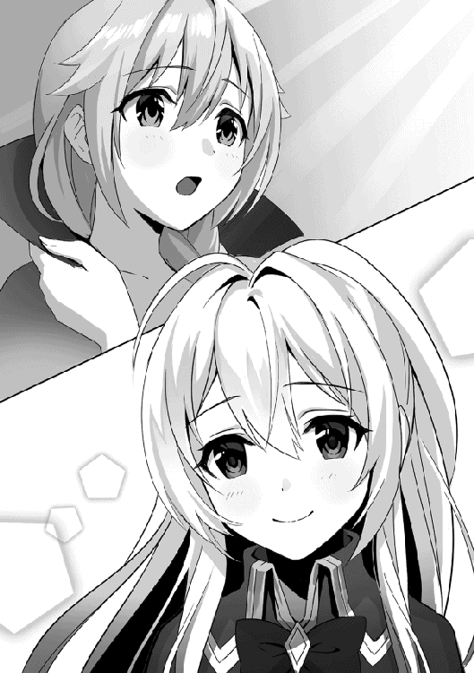
シャティアがそう声を掛けるとエメラルドもシャティアの事だけは分かったらしく、目を見開いてしばらく口をパクパクと動かし、もう一度辺りを見渡すと自分の真下にある魔法陣を見つけ、納得いったように頷いた。そしてゆっくりと身体を起こし、ふらつきながらも立ち上がると虚しそうに空を見上げた。
「ああ......なるほど......私は、随分と長く寝てしまってたんですね......」
一瞬倒れそうになりながらシャティアの手を借りてエメラルドは体勢を立て直す。そして自分の前に居る勇者の方に視線を移した。視線の合った勇者はビクンと怖がるように肩を震わせたが、逃げるような事はしなかった。
「貴方の顔を見るのも久しぶりですね......もっとも、二度と見たくはありませんでしたが」
「......ッ......あの時の事はすまなかった、などと言って許されない事は分かっている。君が恨みを向けるのは当然だ。だから、君が俺に何をしようとそれは当然の権利だ」
勇者に鋭い視線を向けながらエメラルドは冷たくそう言った。
当然である。エメラルドからすれば勇者は自分の世界を壊した張本人だ。勇者が現れた事によって街の人々にも裏切られ、エメラルドは絶望のどん底へと叩き落された。その恨みは元のエメラルドが純粋だっただけに深い。
勇者はそれを理解し、どんな罰でも受ける覚悟だった。抵抗しない事を意味するように彼は手を上げる。それをミミは心配そうに見ていた。
「......フフ、今更貴方を殺したところで何が変わるんです？」
「...............」
「......私も、あれから多くの罪を犯しました......罪とはそう簡単に消えないものです......たとえ、死んだところで......」
勇者から視線を逸らして自嘲的な笑みを浮かべながらエメラルドはそう言う。
彼女も絶望してからは多くの人間を手に掛けた。盗賊や山賊。いずれも悪として見られている存在だが、命を手に掛けた事には変わりない。エメラルドは悲しそうに自分の手を見つめた。
「エメラルド！ 勇者さんは貴方を復活させる魔法に協力してくれたの。エメラルドが復活出来たのは......」
「分かってますよ、ミミ。貴方達双子の顔を見るのも久しぶりですね......」
様子を見ていたミミが遂に飛び出し、勇者を庇うように弁護した。しかしエメラルドはリリとミミの姿を見ると懐かしそうに微笑んだ。
そしてもう一度勇者の方に視線を移し、今度は鋭い視線ではなく、どこか虚しそうな、何かを諦めたような寂しい視線を向けた。
「......私は貴方を恨みません。けれど許しもしません......今の貴方のそのボロボロな姿を見れば、あれからどんな生活を送ってるのかは分かります」
エメラルドは勇者が今どんな人生を歩んでいるのか見抜いていた。感じられる魔力はめちゃくちゃ。
目は赤く腫れ、隈も出来ている。何よりやつれきったその顔を見れば勘の良いエメラルドならすぐに分かった。勇者もまた絶望に落ちているのだと。
「だから精々、苦しみながら生きてください」
「......ッ......本当に、すまなかった......！」
エメラルドがそう言って背を向けると、勇者は頭を下げながら謝った。表情は見えないがひょっとしたら泣いているのかも知れない。震えているその背中を見ながらシャティアは小さく息を吐き、勇者の背中をぽんと叩いた。リリとミミも近寄り、リリは勇者に相変わらず厳しい事を言い、ミミは優しい言葉を投げ掛けた。
それからエメラルドには何があったのかを説明し、勇者が今どんな事をしているのかも改めてミミから説明された。そして服装も着替え、いつもの黒いローブを羽織ったエメラルドはシャティアの事を見た。
「それで、シャティファールは今何をしてるんですか？」
「うむ、私は今魔道の探究を行っている。リリとミミは勇者の旅と一緒に行くらしいから、ここでお別れだな」
勇者は相変わらず贖罪の旅を続けるようで、リリとミミもそれに同伴するつもりらしい。となるとシャティアは一度ここで別れる事になる。彼女の目的は魔法の神秘を見つける事。それが第二の人生を得た彼女の今の目的なのだ。
「ひとまずは王都に戻るとするかね。色々やらねばならん事もあるからな」
魔国の事とエメラルドの復活を終えた今の彼女はその最初の目的を再開する為、ひとまず王都に戻ろうと考えていた。魔法を掛けたままのロレイドの事もあるし、王都の方が魔道の探究にも都合の良い事がある。
そう伝えるとエメラルドは少しバツの悪そうな顔をし、手を後ろで組みながらシャティアの横に並んだ。
「それでしたら......私も同伴させてもらえないでしょうか？」
「ほぅ？......王都にはたくさん人間が居るが、良いのか？」
意外な申し出にシャティアは興味深そうに口元に指を当てながらそう尋ねた。
エメラルドは人間に裏切られた。勇者に対して復讐するような心は今はもうないが、それでも彼女の傷ついた心は完全に修復し切っていない。その状態で王都などと言う人の多い場所に行っても大丈夫なのか？ そう考えながら試すようにシャティアはエメラルドの事を見る。
「もちろん、恨みもあります......簡単にそれが消える事はありません......けど、今のままでも駄目だと思うし......それに......」
顔を俯かせながらエメラルドはそう言葉を漏らした。
彼女なりに色々と考えているのだろう。もう一度人間を信用する事は難しいが、それでも前のように復讐に身を焦がした所で待っているのが破滅だという事も分かっている。だから彼女は今のままでは駄目だと思い、何かしら行動に出なければいけないと結論を出したのだ。そしてエメラルドはその蒼い瞳でシャティアの事を見つめ返しながら言葉を続けた。
「またシャティファールの傍に居たいんです......駄目ですか？」
エメラルドは子供のような表情を浮かべながらそう尋ねた。その顔はまだ【純真の魔女】だった頃のエメラルドの表情に似ており、それを見たシャティアは少しだけ寂しそうな顔をしながら笑みを零した。
「ああ、もちろん構わんさ」
シャティアはそう言ってエメラルドの申し出を受け入れた。
エメラルドがそう望むのならばそれを受け入れよう。今度は彼女が道を踏み外さないよう、しっかりと見ていよう。そう心の中で決意しながらシャティアは旅支度をする為に勇者達の方へと戻った。
呪い。
──それは物によって様々な種類があり、【純真の魔女】エメラルドが抱えるような呪いの瞳もあれば、その者自身にかけられた負の呪い等がある。いずれも強力な呪いであり、その者を苦しめるものもあれば周りに危害を及ぼす程危険なものもある。中でも【死神の呪い】は呪いの中で一番恐ろしいと称される程凶悪な効果を持っており、それは死して初めて発動する死の呪いであった。
曰く、死神に気に入られ、普通の死を迎える事は出来ないと言う。曰く、死ぬ事を許されず、その者は死に続けると言う。曰く、その者は異形の姿と化すと言う。
そう言い伝えられているがなまじ伝説として語られている為、真意は定かではない。だがそれは確かに存在している。人々が忘れ去った闇の中で。
王都の裏路地で幼い少女が二人の男に手を引かれながら歩いていた。その様子はあまり歓迎出来る物ではなく、少女の方もどこか様子がよそよそしかった。二人の男の身なりは悪く、少女の関係者のようにも見えない。無精髭を生やし、髪の毛もろくに洗っていないのか泥だらけ。いわゆるチンピラのような風貌をしていた。
「ねぇおじさん達。本当に言う通りに付いて行ったらお菓子くれるの？」
「ああ、あげるとも。だから騒がず、大きな声も上げないで良い子にしてるんだぞ」
幼気な少女の質問に対して男の一人はニヤニヤと醜い笑みを浮かべながら答えた。まだ善悪を知らぬ幼い少女はそれが優しい笑みとしか解釈できず、お菓子をもらえると知って嬉しそうに笑顔を浮かべている。対して男達は邪悪な笑みを深めた。
それからどんどん少女は暗い通路の奥の方へと連れて行かれた。流石に怪しいと思ったのか、それとも自分の見知らぬ場所に連れてこられた事に不安を覚えたのか、少女の足取りが遅くなり、男達が立ち止まって振り返った。少女は怖がるように指を弄り、恐る恐る口を開く。
「ねぇ、まだ着かないの？ 私そろそろ帰らないと......」
「ククク......帰れると思ってたのかい？ お嬢ちゃん」
「え？」
少女の質問を聞き終える事なく男の一人が笑いながらそう答えた。その手にはナイフが握られており、少女の表情が一瞬で凍り付く。流石に子供でもナイフを見ればこれが異常な状況だと分かり、弾かれたようにその場から後ろへと走り出した。だが子供の身体能力では大人二人から逃げられる訳も無く、あっという間に捕まるとその場に押し倒された。すぐ目の前ではナイフがちらつく。その先では男が汚い歯を見せながら笑っていた。
「いやぁぁぁぁぁああ!?」
「君みたいな子はさぁ。高く売れるんだよぉ。だからさ頼むよ、傷つけたら商品価値が下がるんだ。暴れないでくれ」
男は舌を出しながらそう言い、少女を怖がらせるようにわざと顔を近づける。少女はその男にナイフを突き付けられているせいで悲鳴を上げる事しか出来ない。加えて手足をもう一人の男に掴まれているせいで抵抗すら出来なかった。少女は涙を流し、せめての抵抗で首を横に振るう。だが男達はその必死な姿に笑うだけだった。
だがその時、建物の屋根から影が飛び降りた。それは重々しい音を立てながら路地裏へと降り立ち、思わず男二人は驚いた声を上げて振り返る。そして何が起こったのかも分からない内に吹き飛び、壁へとめり込んだ。男達は歯が抜け、手足が変な方向に向きながらうめき声を上げると壁から離れ、その場に崩れ落ちた。
「鼠共め......！ なんて強欲で醜い魂だ」
それは黒い化け物だった。触手のような肉の塊で身体を覆われた巨大な人の姿をした何か。触手の隙間からは二つの光る目が見えており、それが赤く光りながら男達の事を睨みつけている。声は何重もの声が重なったような異質な声で、思わず倒れていた少女も失神してしまいそうな程の恐怖を感じ、呆然と口を開けて動けなくなっていた。
「ご、ごぶぁ......な、何だお前......ば、化け物ッ......」
「化け物？......化け物だとッ？ この俺が、化け物だと言うか!! 鼠風情が!!」
怪物は咆哮を上げ、倒れながらも何とか逃げようとしている男の事を睨みつけた。その表情は触手で覆われて分からないが、触手の隙間から現れた牙が光、口らしき部分から業火のごとく荒ぶる声が噴出した。
逃げる男に怪物が歩み寄る。その足音はまるで魔物の咆哮のようで、一歩黒の触手で覆われた足を前に出す度に地響きが鳴った。男はあまりの恐怖で声にならない悲鳴を上げ、ただただ逃げようと地面を這う。だがあっという間に捕まってしまい、怪物が男の頭を鷲掴みにすると顔を近づけた。泥沼のようなこびりつく匂いがする。怪物が口を開くと、そこから死臭のような物が立ち昇って来た。
「良いか？ 俺は貴様ら鼠を狩る狩人だ。一匹残らず食い殺してやる。貴様らのような存在に明日は無い。永遠の闇の中に葬られるが良い！」
怪物はそう言うと片手で掴んだまま男を持ち上げ、思い切り腕を振るうと壁に投げつけた。ビタン、と肉がぶつかる音と壁が破壊される音が響き、男は小さなうめき声を上げると死んだように倒れてその場から動かなくなった。
最早誰も動く事は出来なかった。気絶した男も、恐怖で動けなくなったもう一人の男も、混乱で何一つ声を上げる事の出来ない少女も、ただ黙ってその怪物に頭を垂れる事しか出来なかった。
怪物は大きく肩を揺らして鼻を鳴らす。まるで野獣のごとく雄たけびを上げ、地面を蹴ると彼は街の影へと姿を消してしまった。
王宮直属の騎士である聖騎士団。彼らは王宮及び街を守る為に常に警備に当たっている。そんな中、彼らにはここ最近ある悩みがあった。街の中で度々目撃される異形の者。その報告を聞く度に聖騎士団の隊長であるコーサルは大きなため息を吐いた。
聖騎士団の本拠地である会議室で彼は集まった資料を机の上で整理しながら頭を掻く。綺麗な銀色の髪が揺れ、彼の険しい顔つきに陰が落ちる。歳は三十代前後、顎髭を生やし、それ相応の筋肉質的な身体つきをした騎士としてふさわしい恰好をした甲冑を纏っている。
「今週で五件か......いい加減何とかしたいものだな」
「そうですね。民衆からも不安の声が上がっています。そろそろ手を打たなくてはなりません」
コーサルが机に肘を付きながら弱々しく言うと、隣で控えていた部下の男がそう言葉を続けた。
彼らが頭を抱える程の案件。それは今この机に散らばっている資料に載っている共通の事柄であった。コーサルは資料に視線を移し、狼のようなその瞳を鋭く光らせながら睨むように文章を追った。
「王都に怪物現る......か。おとぎ話ではあるまいし。一体どうなってんだか」
一枚の資料を手に取ってコーサルはそう言い、再びため息を吐いた。
資料には王都に怪物が出現中と書かれている。一見その怪物とは魔物の事を指しそうだが、実際の所は違う。現在王都には正体不明の怪物としか表現出来ない何者かが徘徊しているのだ。目的は不明、目撃者も少ない。だが確かにそれは存在しており、夜な夜な街を歩き回っている。
「幸い現在の被害は街のチンピラ数名が負傷しただけです。ですがもしもこれが善良な一般人の方へと牙を剥けば......恐ろしい事になるでしょうね」
「何せその被害に遭った街のチンピラが裏の社会を牛耳ってる組織の傘下だからな。この化け物、まさか狙ってやった訳じゃないよな？」
部下の男はそう言い、コーサルもそれに同意するように頷く。
今の所怪物によっての被害は幾つかの建物の破壊と、街のチンピラ数名が負傷しただけ。だがその街のチンピラが不味かった。彼らは裏の社会で圧倒的な支配力を有している組織の傘下であり、たとえチンピラであっても組織の一員を傷つけられた彼らは自分達の顔に泥が塗られたと考える。否が応でも怪物に復讐をしようとするのだ。これが意図的に行われた物なのかは分からないが、コーサルは大きな揉め事が起こるだろうと予想して肩を震わせた。
「いずれにせよ民衆を怖がらせる怪物は捕まえるか退治しなくちゃならん。騎士団の皆に召集を掛けろ。怪物掃除だ」
コーサルは資料を纏めるとそれを部下の男に全て手渡し、そう命令した。部下の男は余計な事は言わず頷いて部屋を出ていく。会議室に残されたコーサルは椅子に座ったまま、険しい顔つきをして拳を強く握り締めた。
「あの、シャティファール？ 私の身長やっぱり何だか少し低くなってませんか？ 心無しか胸の方も......」
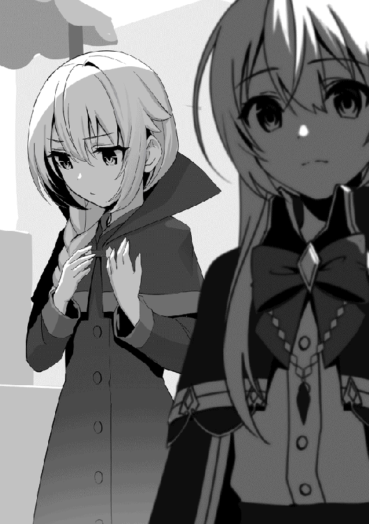
「仕方無かろう。儀式で使った材料は何分急いで集めた物だからな......以前の身体を完璧に作り出す事なんて出来んさ。後、ここでは我の事はシャティアと呼べ」
人が賑わう王都の道で二人の少女が歩いていた。片方は銀色の美しい髪をポニーテールで纏め、少女には似つかわしくない古ぼけたローブを纏った魔法使いのような見た目をした可憐な女の子。もう一人は銀髪の少女の子よりも少し背が高めで、金色の髪をおさげにして垂らし、澄んだ碧眼に人形のように整った容姿をした美しい少女。シャティアとエメラルドであった。
「それにしても久しぶりの王都は何やら騒がしいな。何か事件でもあったのか？」
「さっき街の人が噂をしていたのを聞きました。何でも怪物が出た、とか」
「ほぅ、怪物......」
シャティアは久しぶりに戻って来た王都の様子を見てふと首を傾げた。どうにも人々の表情が明るくない。ヒソヒソと小声で話し合っており、以前のような活気が無かった。その事を疑問に出すと、エメラルドが耳打ちをするように顔を近づけて情報を伝えた。それを聞いてシャティアは今度は興味を抱いたように笑みを浮かべた。
「我が留守にしていた間に随分と面白そうな事になっているではないか......クク」
シャティアはかつてゴーレムのせいで動かせなくなっていた片手を動かし、両腕を組みながらそう言った。
今再び、シャティアは王都へと戻って来た。勇者は見事エメラルドを復活させ、そのエメラルドの治癒魔法によってシャティアも腕を動かせるようになり完全復活した。全ての目的を終えて彼女は戻って来たのだ。本来は学園の方の面倒な事を終わらせる為に戻って来たのだが、シャティアは街が騒ぎになっている事に興味を覚え、意識をそちらに集中させた。
「何だか悪い顔をしてますよ。シャティア」
「む。そうか、気を付けんとな」
興味が湧くとシャティアはついついそれに意識が行ってしまい、無意識の内に喜びで笑ってしまう事がある。その事をエメラルドが指摘すると彼女は別に恥ずかしがる素振りも見せず口元に手を当てた。
「何にせよ、まずは面倒ごとを済ませんとな。行くぞエメラルド」
「はい、シャティア」
いずれにせよシャティアが動き出すにはロレイドや学園での件を済ませてからでなければならない。シャティアはエメラルドと共に歩き出し、街の人混みの中へと紛れ込んで行った。
シャティアはまずロレイドの屋敷へ向かう事にした。何を始めるにしてもロレイドを通さなければ自分は動く事は出来ない。人間達の街である王都ではシャティアはただの一般人に過ぎないのだ。魔法である程度操れるとは言え限度がある。最も効率が良いのはある程度権力がある人間が身近に居る事であり、ロレイドはそれら全てに当てはまっていた。
記憶力の良いシャティアは道に迷う事無くエメラルドと共に屋敷へと向かう。途中懐かしい市場などを見掛けながらシャティアは僅かに頬を緩ませた。ふと学友のリィカの事を思い出し、会いたいなどと考えてしまう。自分らしくないな、と思いながらシャティアはいつもの表情に戻り、歩みを続けた。
しばらく歩き続けているとすぐに見慣れたロレイドの屋敷が見えて来た。人の出入りの痕跡は無く、人気の無い土地に建っている事からまるで幽霊屋敷のような雰囲気を醸し出している。シャティアの横でエメラルドが少し怖がったようにたじろいだ。シャティアは気にせず門をくぐり、ノックをして屋敷の中へと入る。
シャティアが知っているロレイドの部屋に向かうと、そこでは魔法書を広げて何やらブツブツと呟いている彼の姿があった。髪はボサボサに乱れており、何日もそのままで過ごしていたのか髭も少し伸びている。余程研究に熱中していたらしい。シャティアはエメラルドに扉の前で立っているように言い、足音を立てて部屋の中に足を踏み入れた。
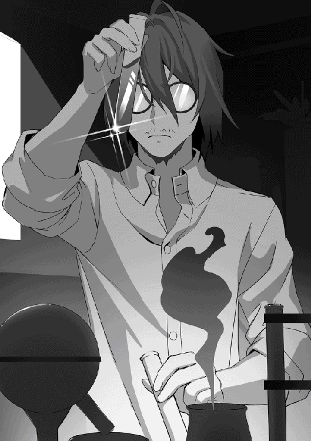
「ん？ お客さんかな。悪いけど今僕は研究で忙しくて......」
足音を聞き、手を止めてロレイドは扉の方に顔を向けた。魔法で記憶を操作されている彼がシャティアの姿を見てもそれが誰かは分からない。今のロレイドからすればシャティアは見知らぬ不思議な雰囲気を持った少女に過ぎなかった。だが何か引っ掛かる所があるのか、シャティアの瞳を見つめて首を傾げる。
シャティアは懐かしいロレイドの姿を見て僅かに微笑んだ。そして手を上げるとそれを横に払い、自身が掛けた魔法を解除した。
「お勤めご苦労だったな。ロレイド先生」
「......ッ!! シャティ、ア......シャティアちゃん......？ え、でも何で？」
シャティアがそう言葉を投げかけると同時にロレイドは目を見開き、信じられないとでも言いたげに弱々しく言葉を漏らした。腕を震わせ、自身の記憶の矛盾に混乱する。シャティアは落ち着かせるように腕を上げ、ロレイドを制止した。
「どうして今まで......僕は君を学園に連れてったはずなのに......何故こんな事を......」
案の定と言うべきかロレイドは困惑していた。この状況を予想していたシャティアは別に驚きもせずその光景を受け入れる。
記憶操作の魔法は対象の脳に強い強制力を働かせる。対象に無理やりそう思わせる為、魔法を解除した際はその矛盾に気が付き脳が混乱してしまうのだ。状況を理解すればすぐに収まるのだが、そう言った負担は少なからずある為、それもシャティアが記憶操作の魔法を好まない要因であった。
「無理な魔法を掛けてすまなかったな。ある程度説明するから、とりあえず話を聞いてくれ」
何にせよまずは落ち着く事が大事。シャティアは困惑しているロレイドを落ち着かせ、自分も椅子に座って説明をする事にした。当然自身が魔女である事は教えない。ゴーレムを倒した後自分は一人で妖精の湖に行ってみたくなり、それでこのような事をした、と曖昧に伝えた。ロレイドはどこか納得いかなそうな顔をしていたが、ある程度シャティアの性格を知っていた為、敢えて詮索するような事はしなかった。
「なるほど......まぁ前から君が色々な魔法を使える事は察していたけど。まさかここまでだったとはね」
「あまり驚いているように見えんが？」
「僕だってこれでも元王宮魔術師さ。これまでにも色んな才覚を持った魔法使いに出会ったよ」
説明を聞き終わった後、思った以上に冷静なロレイドにシャティアは驚いた。てっきりもっと困惑するか、色々問い詰めてくると思っていたのだ。むしろその方が普通の反応である。シャティアがその事を尋ねると今度はロレイドの方が笑みを零し、指を一本立ててシャティアに言葉を返した。元王宮魔術師と言うのも伊達ではないようである。
「それで......シャティアちゃんはこれからどうするんだい？ また学園に戻るのかい？」
完全に落ち着きを取り戻したロレイドが腿をパンと叩いてそう尋ねた。シャティアは少し呆気に取られながらも当初の目的の事を思い出し、思考を切り替えて顔をロレイドの方へと向ける。
「いいや、悪いが我はもう学園に戻るつもりは無い。あそこでの目的はもう達したからな」
「そう、だろうね。では、君はこれから何をするつもりなんだ？」
シャティアの回答にはロレイドもある程度予想していた。記憶操作の魔法すら扱えるシャティアが今更魔法学園に行く必要は無い。人体生成の魔法も別の道で入手すると言っていた。なら彼女の目的はもう達成されているのだ。だからこそロレイドの興味は彼女の次の目的にあった。あのシャティアが次は何をするのか。未知数の力を秘める少女が何を求めてるのかが純粋に気になった。
シャティアは口元に手を当てて僅かに笑みを零す。そしてその澄んだ瞳を真っすぐ向けながら口を開いた。
「この街で噂になっている怪物の事について知りたい。件の怪物の事だ」
シャティアの今の目的。それはこの街で騒ぎになっている怪物の正体を探る事。魔族でも魔物でもないその怪物は今王都で噂の中心となっている。動物や魔物を好むシャティアからすれば興味の尽きない対象であった。だがいかんせん情報が少なすぎる。エメラルドを通して分かった事は僅かな目撃情報だけで、それだけでは答えを導き出す事は出来なかった。故にシャティアは知りたいのだ、更なる知識を。
答えを聞いたロレイドは僅かに表情に変化を見せた。渋るように目を細めて頬を掻いた。
「ああ、例の怪物か。殆ど缶詰状態だった僕の耳にもその噂は届いているよ。よっぽど手強い敵のようで、近々聖騎士団が本格的に動き出すらしいね」
ずっと研究尽くめだったロレイドでも怪物の話は聞いていたらしく、僅かであるが情報も持っていた。シャティアはロレイドが零した聖騎士団という言葉に首を傾げる。
「聖騎士団とは何だ？」
「王宮直属の騎士団だよ。街を守ってて兵団への命令権も持ってる。個々の力が強く、魔術師でも手こずる程の騎士達さ」
シャティアが尋ねるとロレイドは簡単に説明してくれた。その間手を振ったりとどこかいつもと違う態度が垣間見える。まるで聖騎士団の事をうっとうしく思うような、そんな態度。その事にもシャティアは疑問を抱いたが問いかけなかった。今必要なのは怪物の情報とそれに関係のある事。それ以外の事はどうでも良い。
「ふむ......中々興味深い。是非ともその聖騎士団にも会ってみたいな」
「君は相変わらずだねぇ。まぁ分かってるのはそれくらいだよ。怪物の詳細は未だ不明。聖騎士団も今はそれを追っているっていう事」
大体の説明を聞き終えた後シャティアはその聖騎士団にも興味を覚え、髪を弄りながらそう呟いた。ロレイドは首を横に振ってシャティアの相変わらずな性格に笑みを零す。
結局の所怪物の事について詳しく聞き出す事は出来なかったが、それでもシャティアからすれば探究心をくすぐられる事となり、怪物についてより一層知りたいと思うようになった。
「ところでシャティアちゃん。怪物を追うと言うならしばらくは王都に居るんだろう？ その間は前みたいにこの屋敷を使うと良い」
「......良いのか？ もう我は学園に通ったりもしないのだぞ？ 先生が気を遣う必要は無い」
「そんな寂しい事言わないでくれよ。僕は君の保護者なんだから......それにね」
意外な事を言い渡されシャティアは珍しく驚いた表情を浮かべる。村に居た時からロレイドは優しかったが、いくら何でも今回シャティアを助ける必要は無い。なのに助けると言うのは少し引っ掛かる所がある。すると彼は微かに笑みを浮かべて言葉を続けた。
「それに、僕は君の成長が見たいんだ。既に人としての頂に達している君が、どこまで行けるのかをね......」
その瞳は純粋だった。一切の闇が見られない澄んだ瞳。ロレイドは本気でシャティアの成長が見たいようであった。そして彼は既にシャティアが実力者である事を認識している。だからこそ更なる進化を見たがっているのだ。シャティアは変わり者だな、と感想を抱きながらもロレイドのその心意気に感謝した。そして僅かに視線をズラし、扉の方に居るエメラルドの事を見る。
「そうか、それは助かる。ではお言葉に甘えさせてもらおう......それと」
「扉の方に居る子もだろう？ 分かってるよ。事情は聞かないけどシャティアちゃんの友達なら喜んで歓迎するさ」
シャティアが言い切る前にロレイドがその先の言葉を続けた。まさか気づかれていたとは、とシャティアは意外に思い、ロレイドの顔を見上げる。彼は余計な事は言わず、ただ笑うだけだった。シャティアは敵わないな、と小さくため息を吐き、自身の髪を掻いた。
学園の事はロレイドが手回ししてくれるとの事だった。元々シャティアは英雄のように崇められている為、ある程度融通が利く。適当な理由を用意すれば簡単に言い訳する事が出来た。村の方にもロレイドが上手く伝えておくとの事で、シャティアは何から何まで有難うと頭を下げて感謝した。
今後の予定を立てた後、シャティアは情報収集をする為に再び街へ繰り出す事にした。部屋を出て扉の前で待っていたエメラルドと会う。ふと彼女はどこか不満げな顔をしていた。
「良かったんですか？ あの男の言う事を信用して......」
「先生は我の先生だ。信用に足る人物だよ」
エメラルドから注意を促すような言葉を投げ掛けられた。ロレイドの人柄を知っているシャティアからすればそれは心配無用な物だったが、何より彼女が思った事はエメラルドが人を疑うという事だった。やはりかつて人間に裏切られた事がトラウマになっているのか、今の彼女は以前のように積極的に人を信用しようとしていない。どうしたものかな、とシャティアは口元にそっと手を当てた。
「心配するなエメラルド。お前が不安がるような事は無い。たとえあったとしても、我が守ってやるさ」
顔を俯かせているエメラルドの肩をぽんと叩き、シャティアは優しくそう言葉を掛ける。するとエメラルドは小さく頬を膨らませ、シャティアの事を睨みつけた。
「わ、私はもう子供じゃありません。守ってもらわなくても大丈夫です」
「クク、意地っ張りだな......そうか、そうだな。もう子供ではないか」
言い返して来るエメラルドを可愛らしく思い、自分からすれば子供はいつまで経っても子供だな、とシャティアは改めて思った。ふと自身とエメラルドの姿を見比べる。子供の姿の自分に、元の姿より少し身長が縮んだエメラルド。今のこの二人は親子と言うよりどちらかと言えば姉妹であった。複雑な気持ちを抱きながらもシャティアは歩みを進め、玄関を出て扉を開く。
「......とりあえず、情報収集だ。怪物について、聖騎士団について、色々聞き込むぞ」
外に出たシャティアは早速目標を提示する。学園の事などは全て終わらせた。これでようやく気になっている事に取り掛かれる。リィカの事やまだ気になる事もあるが、まずはこの街で噂になっている怪物について調べる事にしよう。そう決意したシャティアは力強く歩き出した。その後にエメラルドも静かに続く。
太陽が忌々しいくらいに輝いている中、聖騎士団の隊長であるコーサルは数人の仲間と共に街を探索していた。いずれも強者の面々、街の人達も何事かと家の窓から顔を覗かせて様子を伺っていた。コーサルの表情は硬い。まるで今から戦にでも行くかのような形相であった。否、それはあながち間違っていない。規模は違うが、彼らはこれから怪物退治を行うのだ。
「本当にこの辺りで目撃情報があったのか？」
「はい、隊長。今仲間達を散らして探させています。すぐに囲んで奴を袋叩きにして見せますよ」
額から流れる汗を拭きながら呟くコーサルの質問に部下の一人が自信ありげに答えた。数時間前、街のはずれで異形の怪物らしい姿を見たという報告があった。本当かどうかは分からないが部下を数名向かわせた所、その部下達はいくら経っても戻ってこなかった。これは本当に異形の怪物が出現した可能性があると判断したコーサルは、すぐに騎士団を編成し討伐に向かった。そして目撃情報があった場所で騎士達を散開させ、怪物を追い詰めようとしているのだ。
「直に奴の死体が運ばれますよ。なぁにこの数です。いくら怪物と言えど数には勝てません」
部下の男は腕を組みながらそう言った。その態度にコーサルはそんな簡単に上手く行くだろうか疑問を浮かべる。確かに騎士団を全員差し向ければ勝てるかも知れない。だが敵はまだ得体の知れない存在。目的もどんな姿をしているのかも正確に分かっていない。そんな相手に直球で勝負を仕掛けるのは危険が高い。出来る事ならまずは索敵に集中したいとコーサルは考えていた。だがやる気のある部下を無碍にする訳にも行かない。一応無理はしないようにと声を掛けておいたが、果たしてどうなるか？ 出来れば自分の思い過ごしであってくれとコーサルは拳を握り締めながら願った。
その時、少し離れた所から爆発音のような轟音が響いた。何が起こったのか分からずコーサルは周囲を見渡す。周りで待機している騎士達もそのあまりに大きすぎる音に怯えたように身を低くしていた。爆発音は更に強くなっていき、やがて近づいてくる。そして次の瞬間、コーサル達の目の前の民家から黒い触手のような物に包まれた怪物が姿を現した。木の破片を吹き飛ばしながらそれは地面に降り立ち、手に持っていた何かを地面に叩きつける。それは聖騎士であった。
「なっ......!!」
「この俺の行く道を阻む者は何人足りとも許さん......たとえそれが正義を謳う騎士だとしてもな......!!」
何重にも響く異質な声を上げながら怪物はそう叫んだ。よく見ると怪物が出て来た民家は貫通されたように穴が開いており、その向こう側には何人もの騎士達が倒れていた。それは全員索敵中の騎士達であった。あの怪物は自分に迫って来ている敵の存在に気が付き、逆に全てをなぎ倒してここまでやって来たのだ。その事にいち早く気が付いてコーサルは腰にあった剣を引き抜く。目の前の敵がどれだけ異質な存在かを理解し、警戒心を一層高める。だが隣に居た部下は違った。怒りと共に雄たけびを上げて怪物へと飛び掛かり、剣を振り下ろした。
「この怪物めぇぇぇえええ!!」
「愚かな。そんな物でこの俺が葬れるとでも......思っているのか!!」
しかし振り下ろした剣は怪物にいとも簡単に掴まれてしまった。強く握り締めているにもかかわらず怪物の腕は一切傷が付かず、逆に剣を持ち上げるとそのまま男の事も持ち上げ、地面に勢いよく叩きつけた。たった一撃で男は白目を剥いて気絶してしまい、戦闘不能へと陥る。怪物は忌々しそうに息を吐きながら剣を投げ捨てた。
皆、恐怖で一切動けなかった。騎士達はその怪物のあまりの凶悪振りに恐れを感じ、立ち向かう事が出来ずに居る。そんな中、コーサルだけが剣を握り締めながら一歩怪物へと近づいた。それに気が付いた怪物は触手の隙間から見える目玉をギョロリと動かしてコーサルの方に視線を向けた。
「それ以上前に踏み出せば......貴様を敵と見なす。死にたくなければ、俺に近づくな......」
怪物はその筋肉が増幅して鉛のように固まった太い腕を向けながらそう忠告した。まさか意思疎通が出来ると思っていなかったコーサルは意外そうに目を見開き、足を止めて剣を低く構えた。あくまでも警戒心は高めたまま、いつでも攻撃出来る姿勢を取ってその状態を維持する。言葉が交わせるのなら話は早い。コーサルは後ろに居る部下達に合図を送りながら怪物に話しかけた。
「さて、どうしようかな？ ......私としてもお前のような化け物と戦うのは避けたい。だがお前はいささか街の人達を不安にさせ過ぎる......お前の目的は一体何なんだ？」
「我が願いは邪悪の根絶。それだけだ......悪全てを滅し、この世から腐れを無くす」
「ほぅ、それは素晴らしい......」
コーサルが怪物と言葉を交わしている間、立ち向かう隊長の姿を見て戦意を取り戻した騎士達が立ち上がる。怪物を囲うように退路を断ち、それぞれ物陰に隠れながら剣を引き抜いた。一切音は立てず、剣を抜く際の冷たい音も木片が崩れる音で掻き消される。全員配置に付いた。いくら数で押せないからと言って、奇襲ならどうだ？ 騎士として褒められる物ではないが、この怪物はここで潰さなければならない。それを本能的に感じ取ったコーサルは合図を送ろうとした。だがその時。
「そんな小細工で俺を仕留められると思ったか!? 愚図共が！！！」
怪物が吠えた。全て気付かれていた。怪物は大きく拳を振り返って地面を殴った。そのあまりの威力に道が崩壊され、辺りに石の破片が飛び散った。その衝撃で騎士達は吹き飛ばされ、破片が突き刺さって悲鳴を上げる。全てが、何もかもが、通用しない。コーサルは絶望を感じながらも剣を構え、襲い掛かってくる怪物に立ち向かった。
シャティアとエメラルドは街で怪物と騎士団の情報収集をしていた。と言っても騎士団の事は有名な為、街の人に聞けばすぐに答えが返ってくるし詳しく聞きたければ直接本部に向かっても問題は無かった。だが肝心の怪物の方の情報は中々集まらなかった。何分その姿がどんな物なのかも分かっておらず、目撃情報も酷く少ない。こうなったら足で出来るだけ多くの情報を収集するしかないと判断し、シャティアとエメラルドは一旦分かれて別々に調査をする事にした。そして現在、シャティアは何となく王都の道を歩き、見慣れた景色を見まわしていた。
「この辺はあまり変わっていないな......まぁそれ程月日も経っていないし、当然か」
シャティアが歩いているのは魔法学園の近くの道であった。遠くには巨大な学園も見える。まだそれ程月日も経っている訳ではない為、外観に大きな変化はない。シャティアはチラリと辺りを見渡し、ふむと声を漏らした。
（確か、最初にリィカと出会ったのもこの辺りだったか......）
不意にシャティアは魔法学園に通っていた時に一緒だったリィカの事を思い出す。短い期間であったが自ら魔法を教え、魔法の技術を伝授した教え子である。それ程情に厚い訳ではないシャティアだが、なんとなく彼女の事を思い出し、今は何をしているのかと考えてしまった。
「シャティアちゃん......？」
「......！」
そんな時、ふと後ろから聞き覚えのある声で呼びかけられる。シャティアが振り返ると、そこには学園の制服を着たリィカの姿があった。
「リィカ......」
「やっぱり......シャティアちゃんだ！ 王都に戻って来てたの!?」
シャティアはポツリとリィカの名を呟き、それを聞いてリィカも頷いてシャティアとの再会を喜んだ。リィカからすれば落ちこぼれだった自分に魔法を熱心に教えてくれた恩人である為、友達以上に大切な思いを抱いているのだ。駆け寄って来たリィカを見てシャティアもああと声を掛け、優しい笑みを浮かべる。
「久しぶりだな、リィカ。まさかお前に会えるとは驚きだ」
「ホントにビックリだよ！ いつ戻って来たの？ もう手は大丈夫なんだよね？ じゃあ学園にはいつ......」
「ああ、その事なんだが......」
リィカの質問にいつものように淡々と答えようと思ったシャティアだが、ふと言葉を止めて考える。
本当の事を言えばもうあの学園には戻らない。元々欲しかった情報は手に入り、あの学園で学べる事はもうないと分かった。ならばわざわざ戻る必要はないだろう。そうシャティアはリィカに言えば良いだけだった。だが、何故かその先の言葉を言えない。しばしシャティアは無言でリィカの事を見つめ、やがて誤魔化すように複雑そうな表情をしながら口を開いた。
「実は......今親戚と一緒でな。ちょっとゴタゴタしていて、学園に戻れるのはいつになるか分からないんだ」
「えーッ!? なにそれ？ じゃぁもうシャティアちゃんと一緒に勉強出来ないの......？」
シャティアは適当に嘘を吐き、リィカは酷く残念そうに悲しみの表情を浮かべた。よっぽどシャティアが戻って来る事を楽しみにしていたらしく、それ故に戻ってこないと分かると落胆も大きい。シャティアは申し訳なさそうに頬を掻いた。
「すまんな。我もリィカに会えないと思うと寂しいよ」
「でも......王都に戻って来たって事はしばらくはこの街に居るんでしょ？ なら学園に居ない時は会えるよね？」
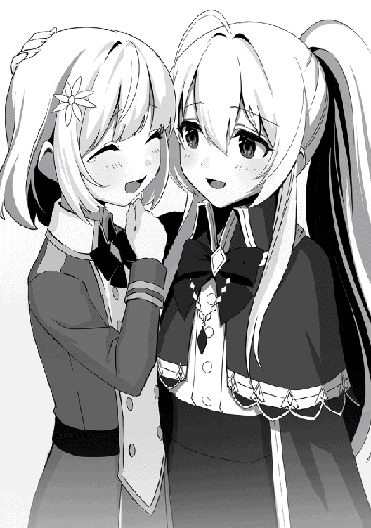
リィカは希望に縋るようにそう言って来た。確かにこの王都に居る間は学園がない時間帯ならリィカに会える。しかしそれはあくまでもシャティアがこの街に滞在中である間だけだ。魔女という存在が一か所にとどまり続けるのは危険である。いずれシャティアもここでの用が済んだら立ち去らなければならない。
「ああ......そうだな。いつでも会えるよ」
だが、シャティアはそれを伝える事は出来なかった。彼女はまたもや嘘を吐き、今度はリィカを喜ばせた。学園で一緒に勉強する事は出来ないが、それでも王都に居る間だけはリィカに会える。たとえそれが一時の間でも、別れが来ると分かっていても、シャティアはリィカの希望を拒絶する事は出来なかった。
シャティアはふと思う。昔こんなやり取りを魔女の一人とした事を。だが、そんな遠い過去の記憶を今更思い出す事は無かった。
「良かった。私またシャティアちゃんから色々教わりたかったんだ。それに私も自分なりに大分勉強したんだよ。今度私の魔法見て！」
「ああ、もちろん。じっくり見てやるさ」
シャティアも魔法の事に関してなら断る理由がない為、少し嬉しそうに了承した。
「じゃぁシャティアちゃん。また会おうね」
「うむ。会えて良かったよ、リィカ」
それから二人はしばらく世間話をした後、リィカは帰らないといけない時間という事で別れる事となった。最後までリィカは嬉しそうな顔をしており、それに釣られてシャティアも笑顔でいた。そして手を振りながら去っていくリィカの姿を、シャティアはどこか寂し気に見送っていた。
「......本当に、会えて良かったよ」
ポツリと言葉が零れる。今のシャティアの表情は全く感情が読み取れない無の表情をしていた。嬉しい訳でもなく、悲しい訳でもない、ただ冷たいだけの表情だった。
もしも彼女が自分の事を魔女だと知ったらどんな反応をするだろうか？ とシャティアはついそんな事を考えてしまう。本当はもう会う事などないと思っていた。会うつもりもなかった。魔女とは足跡を残してはいけないのだ。ましてや友達や仲間などもってのほか。そういう物が一番枷となるのだ。だがシャティアは心の中で望んでいる。いつか誰もが魔女という存在を理解してくれる事に。次の世代の誰かが。
そんな事を思いながらシャティアもその場から立ち去り、エメラルドとの合流地点に向かった。情報収集したエメラルドと合流し、移動しながらシャティアは互いの情報を交換する。
「ふむ......中々情報が集まらんな。特に件の怪物の方が」
「まぁだからこそ騎士団が追っているんですからね。そう簡単に情報が手に入るなんて事はありませんよ」
道を歩きながら零したシャティアの言葉にエメラルドが付け加える。その話の内容は一応重要な事を話し合っているのだが、いかんせん彼女達の見た目のせいで緊張感が無い。はたから見れば美人の姉妹が仲良く歩いているようにしか見えなかった。
やはり怪物を探した方が手っ取り早いだろうか、とシャティアが考えた時。ふと遠くから轟音が響き渡った。方角は街の隅の方。かなり離れている。
「......今のは」
「爆発、でしょうか......」
轟音に気が付いたシャティアとエメラルドはその方向に視線を向ける。薄っすらであるが民家が破壊されたような跡が見える。街の人達も何事かと騒いでおり、軽く騒ぎになった。シャティア達は人の波に飲まれないようにその場から一歩身を引き、高台に上って轟音があった場所を確認する。
「エメラルド、お前の方が早く行けるだろう。行け」
「え......ですが......」
「我もすぐに追い掛ける。何があったのかを確認し、自分が思った事をしろ......さぁ行け」
シャティアの指示にエメラルドは言葉を返そうとしたがシャティアの力強い口調によってその言葉は消されてしまった。どうやら魔力の気配を探るのが上手いシャティアには何か気付いた事があるらしい。ここは素直に従っておこうと判断したエメラルドは頷き、その場から走り出した。エメラルドが向かって行った事を確認してからシャティアは静かにため息を吐き、周囲の魔力を探る。
「奇妙な魔力を二つ感じる......一つは爆発のあった方か......もう一つは、何だ？ これは」
シャティアが感じた魔力。一つは轟音があった場所から感じた物であった。憶測であるがこの禍々しい魔力は件の怪物であろう。不純な物は一切混じっておらず、正に獣と称するにふさわしい闘争によって埋め尽くされている。では、もう一つの方は？ 発生源は分からない。ただ確かに感じるその魔力は異質な物を放っており、シャティアはそれが気になった。
「どこかに、黒幕が隠れているのか？......例えば、怪物を操っている奴、とかが......」
誰かに尋ねる訳でもなく、シャティアは静かにそう呟いた。そもそも怪物という存在自体がおかしい存在なのだ。魔物と言う訳でもなく、種族も不明な存在。そんな生物が目的も無く街を破壊するだろうか？ もしも怪物を操っている存在がいるとしたら、そっちの方が釈然とするのではないか？ シャティアはそう仮説を立て、この魔力の発生源を調べたいと思った。
騒いでいる人混みを後目に彼女は人気の無い道の方へと歩き出し、目的の為に行動を開始した。
弾かれ、押され、飛ばされる。切り裂く為に造られたはずのその剣は異形の怪物相手には何ら意味を為さず、コーサルは口から血を吐き出した。すぐ目の前に怪物と拳が迫り、ギリギリの所で剣を翳して直撃を防ぐが衝撃で吹き飛ばされる。固い地面に背中を打ち付けながらコーサルは転げ回り、ようやく勢いが収まると身体中に痛みを感じながら立ち上がった。
「はぁ......はぁ......っ！」
「見事だ。そこらの正義を語るだけの偽善者とは違う......確かな実力と強い意志を持った戦士だ、貴様は。だがその剣は、俺には届かない！」
まだ立っているコーサルに賞賛を贈りながら怪物はそう言った。辺りには破壊しつくされた民家とボロボロになって倒れている騎士達。最早立っているのはコーサルだけだった。そのコーサルも纏っていた鎧はへこみ、破壊され、剣も後一撃でも喰らえば折れる程消耗していた。口から流れる血を拭いながらコーサルは意識をしっかりと保ち、怪物に剣を向けた。
「どうかな......仕事なんでね。私は何としても、お前を倒さなければならないんだ」
「ふん......難儀な物だな。良かろう、ならばこの俺自ら引導を渡してやる」
コーサルは逃げる訳には行かない。彼には何十人もの部下と街の人々を守る責任がある。たとえその身が尽きようがその責任は果たさなければならない。それが仕事だからだ。彼が国王から授かった使命。故に逃げる訳には行かない。近づいて来る怪物に臆する事無く、彼は剣を振り上げた。
「はぁぁぁぁ!!」
それは怒りか、それとも恐怖を欺く為の手段か、コーサルは雄たけびを上げて怪物に向かって剣を振り下ろした。だが次の瞬間怪物の姿が消えた。背後から凄まじい殺気が飛んで来る。すぐさまコーサルは身体の軸を変えて後ろを振り返り、その体勢のまま剣を振るった。金属音と共に怪物が剣を受け止める。すると遂に剣がへし折れた。拘束される前にコーサルは剣を離してその場から引き、気絶している部下の手から剣を借りる。
「無駄だ！ 諦めて、沈め！！！」
「ぐっ......！」
しかし気が付いた時には怪物はすぐ目の前まで迫って来ていた。反応し切れない。コーサルは腹部から鋭い痛みを感じ取り、次の瞬間視界が空を向いていた。数秒経ってから自分が殴り飛ばされた事に気が付き、コーサルは地面に鈍い音を立てて落下する。呼吸が出来ず、血を吐き出しながら何とか息も吐き出してコーサルは意識を保ち続けた。だが、もう脚が動かない。体力の限界だった。
「がっ......はぁ......はぁ......」
「ここまでだな。お前はよく戦った。安らかに眠れ」
怪物がゆっくりと近づいて来る。眩暈がし、最早意識を保ち続ける事すら難しくなってきたコーサルはただ黙ってそれを見つめているしか無かった。目の前まで近づくと、怪物は無情にも拳を振り上げた。そしてそれを躊躇無く振り下ろそうとしたその時、突如怪物に向かって巨大な魔力の塊が飛んで来た。すんでの所で怪物は跳躍してそれを回避し、魔力の塊は地面に直撃してその場に巨大なクレーターを作り上げる。
「何者だ!! この俺の行動を妨げる愚か者は!!」
「今のを避けた......!? とんでもない怪物だという噂は本当のようですね」
怪物が怒りで叫ぶと同時にこの場には似つかわしくない鈴のような音色の声が聞こえた。薄れゆく意識の中でコーサルが見上げると、そこには金色の髪をした人形のように美しい少女が立っていた。あり得ない。あんな小さな子が......そう思いながらコーサルは意識を手放し、その場で気絶した。
「何だ？ 何だ！ 貴様は!! 俺は女子供でも邪魔をする者は容赦せんぞ......!!」
「ご忠告どうも。でも心配には及びません......私は、そんな生易しい存在ではないので......」
怪物の叫びに物怖じする事無く金髪の美少女エメラルドは力強くそう言い放つ。二人は対峙し、怪物は現れたその異質な存在に警戒心を強めた。エメラルドも遂に見つけた怪物のその異質な姿に警戒心を覚え、中々動き出さない。
魔女と怪物の戦いが、始まる。
シャティアに言われた通り爆発音があった場所に向かうと、エメラルドの視界に入って来たのは騎士の恰好をした人達が倒れている酷い光景だった。鎧が変にへこんでおり、魔法や特殊能力と言った物ではなく打撃で倒された事が分かる。幸いまだ息はあったが、それでも重症である事には変わりなかった。
エメラルドは躊躇する。もしも今ここで自分が治癒魔法を使わなければこの人達は死んでしまうかも知れないだろう。だが、だからと言って本当に治癒魔法を使うのは正しいのだろうか？ 人間は信用出来ない。すぐに裏切る。この騎士達も自分が驚異的な治癒魔法を使えば不審に思って捕まえようとして来るかも知れない。そんな不安がエメラルドの中にあった。だがふと、彼女は蹲っている男が零した声に反応した。
「助けて......くれ......」
「......ッ！」
男はエメラルドが誰なのかも判別出来ないようで、ただ腕を伸ばして助けを求めた。こんな小さな女の子に助けを求める程の重症。エメラルドはほぼ反射的に動き出し、倒れている男に近づくと治癒魔法を掛けた。苦しそうな声を上げていた男はすぐに静かになり、眠りについたように目を瞑った。それを見てエメラルドはつい安堵の息を吐いてしまう。そしてそんな反応をしてしまった自分に戸惑いを覚え、震えている自身の手を見つめた。
やはり自分はどこまでも愚かだ。散々裏切られた癖に、散々復讐を誓ったのに、結局こうやって人を助ける。エメラルドは自分の本心を知り、呆れたようにため息を吐いた。すぐに彼女は他の倒れている騎士達の所に向かい、全員に治癒魔法を掛ける。
これが本当に正しい事なのかは分からない。結局はまた裏切られるのかも知れない。だがそれでも、今後悔しない為に動こう。エメラルドはそう答えを出し、シャティアに言われた通り自分の心に従う事にした。
全員に治癒魔法を終えた後、エメラルドは戦いの音がする方向へと向かう。塀を飛び越え、民家の破壊された残骸に着地するとそこでは異形の怪物と銀髪の騎士が戦っていた。エメラルドは怪物のその異質な姿に驚き、妙な魔力反応に疑問を示す。どこかで感じた事があるような気味の悪い魔力、エメラルドは警戒しながらその戦いを観察した。
銀髪の騎士が倒され、とどめを刺されそうになる。その瞬間エメラルドは立ち上がって腕に魔力を込めると特大の魔力砲を放った。この距離なら直撃のはず、そう思ったのにあろう事か異形の怪物はその見た目からは信じられない程の俊敏さでその場から飛び跳ね、渾身の魔力砲を避け切った。驚きの表情を浮かべながらもエメラルドは民家の残骸から飛び降り、怪物が立っている道に降り立って対峙する。
「人を傷つける事は私が許しません。貴方を、排除します」
エメラルドは決して戦う事が得意な魔女ではない。もちろんそこいらの魔術師が束になっても勝てない程の人智を超えた存在である事には変わりないが、その枠を超えた存在の中では最弱と言っても良い程弱い。
まず彼女はろくに攻撃魔法を覚えていない。適性とエメラルドの性格から治癒魔法に特化している為、必要が無かったのだ。故に彼女は目の前に居る怪物に対して有効な攻撃手段が無かった。ただでさえ硬そうな見た目に、素早い身のこなし。自分が出来るのは有り余る魔力を込めてただ放つだけ。ハッキリ言って厳しい戦いだろう。
「小娘ごときが......!!」
怪物が走り出す。地面を揺らす程の巨大な音を立てて飛び出し、目の前に怪物が迫って来る。すぐさまエメラルドは目の前に魔力の壁を作り出すが、その壁も怪物が振るった拳で破壊されてしまう。衝撃でエメラルドは吹き飛ばされ、民家の壁に激突する。身体の中で何かが折れるような嫌な音が響いた。彼女は口から一滴の血を流しながらお腹に手を当て、自身に治癒魔法を掛ける。完全回復、だが痛みがすぐに引く訳ではない。
「ぐっ......」
「ほう、面白い小細工をする。が、その程度で俺を倒せるとでも思っているのか？」
ダメージを負ったはずなのに倒れないエメラルドを見て怪物が興味深そうにそう言う。余裕のある態度、魔女であるエメラルドの魔力を感じても一切の恐れを感じていない態度であった。一方エメラルドの方が余裕が無い。拳に直に当たった訳ではないのに衝撃波だけでこのダメージ。幸い自分は治癒魔法ですぐに復活する事は出来るが、いくら何でも何の補助魔法も掛けずにこの破壊力は恐ろし過ぎる。エメラルドは表情を険しくし、額から一筋の汗を垂らした。それを悟られないよう、何とか強気な立ち振る舞いをする。
「あまり調子に乗らない方が良いですよ、怪物さん。貴方はすぐに自分より上の存在を知って鼠のように尻尾を巻いて逃げ出す......」
「クハハ、それは楽しみだ」
エメラルドの挑発も笑い飛ばすだけで相変わらず怪物は余裕の態度を崩さない。エメラルドはバックにシャティアが居るという安心のおかげで今は何とか強気な態度を取っていられるが、もしもシャティアと怪物の実力が互角だったとしたら、と最悪な事を考えてしまう。それを打ち払うように首を振ってエメラルドは動き出す。手の平に最大の魔力を込め、球体の形を取らせてそれを発射する。凝縮した分、そのスピードは速い。だがやはり怪物はそれを避け切り、エメラルドの目の前まで迫って来た。
「ではそうなる前に、お前を粉々に潰す事にしよう」
黒い触手で覆われたその顔の隙間から鋭い牙を見せながら怪物はそう言った。筋肉の塊のようなその腕を振り上げ、容赦なくエメラルドに振り下ろす。今度のは何とか避け切れて、エメラルドは地面を蹴ってその場から離脱する。だが怪物はすぐにそれに反応すると目に見えぬ速さで動き、エメラルドの背後へと回り込んだ。
「ッ......!!」
あまりにも速すぎる。エメラルドは反応し切れずそのまま怪物の足蹴りを喰らい、地面へと叩きつけられた。視界の上下が反転するような錯覚に襲われ、一瞬頭が真っ白になる。意識が途切れそうになりながらもエメラルドはすぐに飛び退き、自分の身体に手を当てると治癒魔法を発動した。背中と頭をやられた。たった一撃で。もしも追撃を喰らっていたら魔法を発動する意識すら持っていかれたかも知れない。その恐怖を感じ、エメラルドは若干表情を暗くした。嫌でも口から荒い息が漏れてしまう。
「はぁ......はぁ......」
治癒魔法は本来怪我人が負った傷を丁寧に癒す為に使用する。決してこのように戦闘中に即座に使える物ではない。それが出来るのはエメラルドの技術と膨大な魔力のおかげだが、それでも使用時間が短ければ雑な治癒になってしまう。砕けた骨を元に戻しても、少しでもズレが生じれば後々不味い事になってしまう。故にエメラルドはなるべく治癒魔法を過度に使う訳にはいかなかった。
それが分かっているのか、それとも焦りを見せているエメラルドの余裕の無さに感づいたのか、怪物は醜い顔を歪ませながらクツクツと笑みを零した。
「どうした小娘？ 随分と余裕の無い顔になったぞ？」
「お気遣いどうも......ですがご心配なさらず、ちょっと身体を慣らしていただけですので」
怪物に心配されて嫌悪感を示したエメラルドは眉を潜ませながらそう言い返した。流れた汗を腕でふき取り、身体を起こす。
ここでこの怪物は止めなければならない。目的は分からないが、それでも聖騎士と呼ばれる集団を一人で倒す程の脅威を持っている。倒す事は出来ないだろうが、それでも拘束する事は出来るだろう。そうすれば後から合流するシャティアの魔法で心を覗き見て奴の目的が分かる。エメラルドはそう作戦を立てると身体中の魔力を指先に集め、指を走らせると切り札である魔法を発動した。
「【罪の枷】......!!」
光と共に魔法陣が飛び出し、その魔法陣が怪物の四肢を拘束する。突然動けなくなった事に怪物は驚き、腕を動かそうとしたが鈍い音が響くだけで全く動かす事が出来なかった。
拘束に成功した事にエメラルドは笑みを零し、同時に魔力が大幅に減った事を感じて脱力感から肩を落とす。
「ぬぐ！......何だコレは!? 動けん！」
「無駄です。私の魔力を込めて作り出した脱出不可の魔力拘束具です......簡単には抜け出せません」
魔力拘束具、【罪の枷】からは物理的に脱出する事は不可能である。これを破壊出来るのはシャティアの【眠り歌】のような直接魔力に干渉出来る物のみのはずである。だが時には例外があるのかも知れない。例えば、拘束された者の力があまりにも術者を凌駕している場合とか。
怪物はいくら力を込めても腕が動かせない事に苛立ちを感じているようだった。身体を揺らし、何とか脱出しようとする。だがやがてその怒りが頂点に達したのか、醜い顔から牙を出して吠えた。
「愚かな！ この程度で俺を拘束出来るとでも思っているのかァァァァアアア！！！」
それはまるで炎のようで、怪物は身体中から熱気のような物を出すと筋肉を肥大化させた。みるみるうちに魔力の拘束具にヒビが入って行き、やがて限界を迎えてガラスのように簡単に砕け散ってしまった。エメラルドは自身の切り札が破られた事に驚き、固まってしまう。
「なっ......え......」
「クハハハ！ 貧弱だな小娘。所詮お前はその程度だ！」
最早エメラルドには怪物に対抗する手段が残されていなかった。魔力砲はもちろん当たらないし、治癒魔法を上回る程の攻撃力、更には切り札であった【罪の枷】を突破。全てが、敵わない。エメラルドは先ほど自分が言った言葉を思い出す。自分よりも上の存在。それは間違いなく、今目の前に居る怪物の事であった。この異形の怪物は魔女である自分よりもはるか上を行く実力を持っている。それに気づいた瞬間、エメラルドはもう対抗する気力を失っていた。
「だがお前はよく戦った......褒美として苦しまずに沈めてやろう。さぁ、終焉の時だ」
戦意を失ったエメラルドに気が付いた怪物も手荒な事をしようとはしなかった。ゆっくりとエメラルドに近づき、その小さな身体に拳を振り下ろそうとする。黒々とした漆黒の拳、エメラルドは呆然とそれを見上げ、ただ黙って振り下ろされるのを見ている事しか出来なかった。
シャティアは爆発音があった方のとは別の妙な魔力を探っていた。それは大分注意深く隠れており、シャティアは民家の屋根の上に飛び移るとその残り香を辿って探し続けた。そして遂にその発信源を見つけた。一番高い建物の上で、それは黒い霧に紛れるように隠れていた。シャティアは浮遊魔法で宙に浮きながらそれに近づき、静かに話しかける。
「......お前、魔女だな？」
注意深く、警戒心を高めながらシャティアは呟くようにそう尋ねる。
かなり慎重に隠しているが、これは間違いなく自分達と同じ魔女の魔力反応であった。最初シャティアがそれに気が付いた時、すぐに信じる事が出来なかった。まず隠れている理由が分からないし、どうしてこんな禍々しいのかも理解出来なかった。故にすぐに話しかける事が出来ず、今もこうして警戒しながら話しかけているのだ。
シャティアの存在に気付いたその黒い霧は揺らめきながら顔らしき部分をそちらの方向へ向け、まるで嘲笑うかのように霧をまき散らす。
「............」
そして次の瞬間、黒い霧が爆発するように周囲に飛び散り、シャティアの事を飲み込もうと大口を開けた。シャティアは目を見開き、呆然とそれを見つめる。視界が漆黒に染まった。
まるで一つの水の塊が弾け飛ぶように、それは爽快な音を立てながら爆ぜた。
寸前の所でシャティアは魔力の塊をぶつけ、自分に襲い掛かって来た黒霧を弾き飛ばした。黒い霧はモヤモヤと引きずる様に宙を舞いながら消えていき、やがて姿を消す。敵の本体の姿も無い。今の一瞬で引いたのだろうか。シャティアは警戒心を強めながら辺りの気配を探った。
「さて......どっちかな？」
集中力を切らさないままシャティアはポツリとそう呟く。
彼女が言うどっちかと言うのはどの魔女の事を指すか、と言う意味であった。この敵の正体が魔女である事は間違いない。そうなると問題は誰であるか、という事であった。シャティアが転生してから今まで出会った魔女は四人、そうなると残りは二人。このような隠れ方をするという事から何らかの敵対意識は持っていると思って間違いないだろう。残念ながらシャティアの記憶ではどちらの魔女も一癖ある為、両方候補に挙がる。出来れば間違いであって欲しいとシャティアは願った。
その時、突如シャティアの背後からまたもや霧が襲い掛かった。確かな形を持たず、小さな黒い粒子の集まりがまるで幽霊の如く呻き声を上げて近づいて来る。この魔法は果たしてどちらの物だろうか？ そんな事をのんきに考えながらシャティアは浮遊魔法でそれを躱す。
「この我を、その程度の霧で倒せると思っているのか？ ならば誤りだと教えておこう」
「............」
黒い霧から距離を取りながらシャティアはそう質問を投げ掛ける。当然返答は無い。そもそも今襲い掛かって来た霧が本体なのかどうかも怪しい。恐らくは幻影魔法で水魔法を掛け合わせて作り上げた魔法。その気になればどの魔女だって使える魔法である。だがここまで完璧に本体を隠せる魔法の使い方はそうそう無いだろう。
シャティアは試しに手のひらに炎の球を作り出す。そしてそれを無数に分裂させると周囲に飛ばし、炎の結界を作り出した。少しでも触れれば炎は引火する。本体が隠れている霧があればすぐに見つけ出せるだろう。
「出て来てもらおうか。娘は親に顔を見せるものだ。いつまでも我儘は通さんぞ」
指を振るい、無数の炎を動かす。それに反応して周囲に巻き散っていた霧も動き、まるで逃げるかのように散って行った。すぐにシャティアは腕を払い、追撃に向かわせる。だが霧は姿を隠して見えなくなってしまった。
一度シャティアは炎の動きを止めさせた。姿は見えなくなったが僅かに魔力の反応が残っている。まだこの近くにいるのは間違い無い。どこに隠れたのかを見極める為にもシャティアはじっと感覚を研ぎ澄ませる。相手は魔力を隠すのが上手い。どういう訳かシャティアの探知能力をも上回るのだ。だからとて、こんな近くに居るのならば見逃すはずが無い。集中さえすればすぐに分かるのだ。だがその直後、シャティアは真上から鋭い気配が飛んでくるのを感じた。強い魔力反応。反射的に上を見ると、そこには巨大に広がる黒い霧があった。
「そう来たか......！」
「............────」
隠れるのではなく真上からの奇襲。いきなりこれをやられては反応が遅れる。流石のシャティアも焦りを覚えたが、不思議と彼女の顔は笑みを浮かべていた。少しでも油断すれば傷を負うと言うのに、流石のシャティアでもこれだけの至近距離で魔法を使われればただで済まないのに。それでも彼女の顔は笑みを零してしまった。
「だが、甘くみてもらっては困るな......！」
シャティアはその澄んだ瞳をまるで獣のごとく光らせ、魔力の溜まった腕を振るった。瞬間嵐に匹敵する程の衝撃が上空に飛ばされる。拡散されていた霧は一瞬で消し飛び、またもやその姿を失う。だがやはり手応えは無い。シャティアは振るった腕を戻しながら僅かに唇を噛んだ。面倒な事だ。本体を叩かなければまるで意味が無い。いっその事周囲一帯に魔力波を飛ばそうか、そんな事を一瞬彼女は考えてしまう。だがここが街の中だという事を思い出し、すぐにその考えは打ち払う。
敵がこれを狙ったのかは分からないが、こんな街中で派手な魔法を使う訳には行かない。ましてや今は爆発音で人々は騒ぎになっている。ここで更に人々を恐怖させるような事をすれば後々面倒になる。そう判断したシャティアは出来るだけ早急にこの戦いを終わらせようと考えた。だが、そう簡単にはいかない。シャティアは先程特大の魔力を振るった腕に痛みが走るのを感じた。痺れるような感覚。すぐに袖を捲って調べると腕は黒い霧に浸食されていた。
「掠ったか......」
肌の上からではなく腕の内側から浸食されている。いつ入られたのか、触れられた感触は無い。それとも霧の僅か一部分が近づいただけでも浸食されるのだろうか。シャティアは思考するが答えを導き出す事は出来ない。とりあえず治癒魔法を掛けてみるが、やはり傷ではないので霧が出て行く事は無い。荒療治だが腕に大量の魔力を流して無理やり霧の浸食を食い止める事にした。どちらにせよすぐに決着を付ける必要が出てきた。シャティアは魔力を高める。
「いい加減かくれんぼは終わりだ。あぶり出してやる」
念の為服を破いて腕を縛りながらシャティアはそう呟く。
強力な魔法でも人に見られない地味な魔法はいくらでもある。それこそ膨大な数の魔法を会得しているシャティアならえり好みである。ただそれをしなかったのは万が一という事を考えたからだ。いくら地味と言えどシャティアの魔力なら火を出す魔法が地獄の業火を吹き出す大魔法になる。故に躊躇した。だが、この状況ならば致し方が無い。決着を付ける為にも、手段を選んでいる場合ではない。シャティアは全身の魔力を集中させると手の先に小さな銀の結晶を作り出した。
「舞え、銀鳥」
シャティアが顔を近づけてそっと言葉を添えると、その銀の結晶は砕け散ってそこから小さな鳥が姿を現した。魔力によって生まれた銀の鳥。単なる造形魔法だが、それは魔女の魔力によって生み出された強力な魔法生物。
シャティアは手から鳥を羽ばたかせた。その瞬間鳥は高速で飛び出す。銀の粒子を散らしながら黒い霧に向かって行く。霧は逃げるように散っていくが、その鳥に特別な魔法が仕掛けられていない事を知るとすぐさま鳥を覆って浸食し始めた。銀の鳥は黒く染まっていき、やがて形を失い始める。だがその時、僅かに霧が揺れ動いた。
「......──ッ」
「嵌ったな。ただの小鳥だと思ったか？......残念ながらそれには強力な爆破魔法が仕掛けられてある。まぁ、もう言っても遅いか」
シャティアは笑みを浮かべてそう言う。気づいた相手もすぐに銀の鳥から距離を取ろうとしたが、既にシャティアは指を鳴らした後だった。途端に銀の鳥が光に包まれ、とてつもない爆音を鳴り散らす。銀の粒子が辺りに吹き飛び、黒い霧を飲み込んで行った。
「............ッ!!」
形は無い。姿も無い。だが確かにその霧は苦痛を感じるかのように暴れ、すぐに銀の粒子を引きはがそうとした。本体がそこにいるのか、それとも感覚を共有しているのか。いずれにせよ反応を見る事は出来た。シャティアは動きが鈍くなっている霧をじっと見つめながら上空に移動した。
「さぁ、顔を見せてもらおうか。お前は誰だ？ 愛しい娘よ」
「............」
黒い霧は銀の粒子によって動きを封じられている。霧になら同じ物質を。シャティアは魔力の籠った粒子を散らす事によって霧に対抗した。そして見事それは的中し、効果を示した。先程なら逃げる際はすぐに消えてしまった霧だが、今は銀の粒子によって逃げられずにいる。魔力によって封じられているのだ。という事はやはり、本体はその霧の中に居るという事だ。シャティアは静かに笑みを浮かべ、黒い霧の事を凝視する。果たしてその霧の中に何が隠れているのか、一体誰がその姿を偽っているのか。シャティアは答えを求める。
「が......はっ......」
繰り出された鉄拳を受けてエメラルドは地面に頭から倒れ込む。頭が重たい石になったように鈍くなり、正常な思考が出来なくなる。頬から伝わる痛みは顎へ、首へ、そして身体全体へと走っていく。それでもまだ意識を保っていられるのは身体の上から薄く魔力壁を張っているからであろう。そんな瀕死状態のエメラルドの横で、悪魔が笑った。
「ふぅむ。存外硬いな......何か小細工をしているな？ うっとうしい奴だ。素直に喰らえば静かに落ちられると言うのに......」
「はぁ......はぁ......くっ......」
中々気絶しないエメラルドの事を不思議に思い、怪物は首を傾げる。だがエメラルドが何か魔法で自身の拳のダメージを軽減しているのだと勘づくと、すぐに面倒くさそうにため息を吐いた。エメラルドは苦し紛れに怪物の事を睨みつけ、何とか反撃を試みようと機会を疑う。だがやはり怪物は一筋縄ではいかない存在であった。目の前の敵は人間に対しても、魔女に対しても怪物なのだ。だがだからこそ疑問に思う。何故こんな怪物が存在しているのか？ どうしても突然こんな怪物が生まれたのか？
噂では異形の怪物は数年前に突如姿を現したと言う。そして目的も無く破壊を繰り返す。彼曰く悪を滅していると言うが、その過激な力の振るい方は流石に目を背ける事は出来ない。そんな存在がどのようにして生まれたのかがエメラルドには分からなかった。怪物は何か特定の種族という訳でもなく、突然変異で生まれた魔物と言う訳でもない。こんな生物が歴史上において一度も発見された事が無いと言うのはおかしい。だから理解出来ないのだ。こんな途方も無い力を持った怪物が存在している事を。ましてや魔女である自分を凌駕する程の力を持っている。一体どうして？ そんな生き物を作る事が出来る者など、魔女くらいしか......いない。
エメラルドの額から一筋の嫌な汗が垂れる。そんな事はあり得ない。突拍子の無さすぎる話である。確かに魔女の中には生物を作り出す魔法を持つ者はいる。事実魔女の母であるシャティアだって魔物を愛し、飼育していた事があった。魔女は使い魔だって作り出すのだからあり得ない話ではない。だがここまで強大で、魔法も効かず、まるで魔術師を殺す為に作り出したかのような生き物を創造する訳が無い。あってはならないのだ。だがもしも、この仮説が真実だとしたら？ もしもかつての自分のように人間を恨み、そして同胞である魔女の事さえ殺そうと考える者が居たとしたら......エメラルドはそう考え、息を呑んだ。直後に彼女の腹に怪物の蹴りが飛ぶ。エメラルドはまるで風船のようにふわりと宙を飛び、そして一回転すると地面に痛々しい音を立てて落下した。彼女の顔は血で染まり、結ってあった金色の髪が解け、前髪が目に掛かった。
「ぐっ......ぁ......はー......はー......」
「無駄な事はよせ。いい加減お前は眠るべきだ。これ以上無理をすれば、本当に命を落とすぞ？」
「はぁ......はぁ............ぁっ」
怪物が冷たくそう言い放つ。エメラルドは息を荒くし、何度も酸素を肺に送り込んだ。だがちっとも胸の苦しみは治まらない。それどころか更に息苦しくなり、頭が重たくなっていった。最早エメラルドは立ち上がる事はおろか、ろくに魔力を込める事すら出来なくなっていった。そんな彼女に怪物はゆっくりと近づく。同時にエメラルドも身体を震わせながら顔を起こした。
「貴方は......一体、何者、なのですか......？」
唇を噛みしめながらエメラルドは何とかその疑問を絞り出した。掠れた声で、弱々しい声で、最後の力を振り絞ってそう尋ねる。すると怪物が動きを止め、僅かに首を傾げて思考するように沈黙した。だがすぐに興味なさげに身体をうねらせると、拳を振り上げた。
「さぁな、俺もそれが知りたい」
淡々とそう答え、怪物は何の感情も込めずに今度こそとどめの一撃を振るった。鈍い音と共にエメラルドの顔は落ち、地面に崩れ落ちる。魔力壁も完全に剥がされ、生身で怪物の一撃を喰らったエメラルドはもう起き上がる事は無かった。
「............ッ!!」
その瞬間、シャティアは強い衝撃を受けた。魔力感知能力が長けているシャティアはエメラルドが今どこに居るのかしっかりと分かっている。だから彼女が自分の言いつけ通りきちんと爆発音があった方向に向かい、そこで行動を起こしていた事も分かっていた。そしてシャティアは、エメラルドの魔力反応が突然消失するのを感じ取った。だがだからと言って目の前に敵が居る状態で隙を見せる程シャティアも甘くはない。あくまでも冷静で、平静さを保っていた。保っていた......はずなのだ。だがエメラルドの魔力の消失を感じた瞬間、その感じたという一瞬が、シャティアの動きを鈍らせた。感じてしまうが故に身体が反応し、その動きをほんの少しだけ止めてしまったのだ。その瞬間、彼女の身体に黒い霧の腕が貫通した。
「あ......ぐ......？」
「............ふ、ふ」
黒い霧は人の腕を形を成していた。所々掠れているのに、それは確かに腕の役割を果たしていたのだ。それが身体から突き出ている。つまり、つまり......やられた。それを理解してシャティアは口から血を吐き出した。油断したつもりは無かった。隙を見せたつもりも無かった。だが、ほんの一瞬。ほんの一瞬の差を上回られた。そしてそんな芸当が出来るという事は、やはり相手は魔女で間違いなかったのだ。背後から聞こえてくる女の笑い声を聞き、シャティアは顔をその方向に向けようとする。血を多く流しているせいか音を正しく聞き取れない。視界が正しく脳に伝わらない。身体から熱が引いて行く。時間が、無い。
「甘いっすねぇ、相変わらず。シャティファールは身内に甘すぎる......怪物でエメラルドを潰せば、いち早くそれに反応する。それが貴方の弱点っすよ」
独特の喋り方、聞き覚えのある声色。間違いない。だが、シャティアの頭は正しく動かず、答えを導き出そうとはしない。声の持ち主はまるで嘲笑うように霧の腕を動かし、シャティアの身体を弄んだ。ズチュリと血が溢れる音が響き、シャティアはうめき声を上げる。そして声の主が思い切り腕を引き抜くと、シャティアは激痛と共にプツンと自分の中で糸が切れるような音を聞いた。
「さようなら母さん。アタシが愛した人」
浮遊魔法を維持する事も出来ず、女の声を聞きながらシャティアは落下した。地面に向かって落ちていく際、視界に黄金の髪をした少女の姿が端に映る。ああ、お前か。何故かのんきにそんな事を考え、シャティアは笑みを浮かべた。そしてグシャリと、果物が潰れるような音が耳元で聞こえた。
「頭......右腕......骨、はやられていないか......腹は、修復に時間が掛かりそうだな」
人々の悲鳴が聞こえる中、シャティアは途切れそうな意識を何とか保ちながら冷静に自身の状態を確認した。損傷は酷い。貫かれた身体からは止まらず血が流れ落ちている。それでもシャティアがまだ意識を保っていられるのはギリギリの所で治癒魔法を発動していたからであった。だがシャティアの治癒魔法はエメラルドのように驚異的な回復力は持っていない。あくまでも止血し、それ以上の損傷を防ぐ為の物であった。
「き、君！ 大丈夫かい？ すぐに治療を......」
「問題無い。今見た事は全て忘れ、そして安全な所へ行け」
駆け寄って来た男性を見てシャティアは起き上がり、そう言うと指を突き付けた。途端に焦っていた男は冷静な顔になり、まるで何事も無かったかのように去って行った。周りに群がっていた人達も途端に騒ぐのを止め、それぞれ戻って行く。シャティアはふと上空を見上げた。そこにはもう黒い霧は無い。
「......流石にもう居ないか。追いかけても無駄だろうな......エメラルドの方に行かなければ」
傷の具合を確認しながらシャティアは立ち上がり、そう思考を切り替える。
先程、突然エメラルドの魔力が消失するのを感じ取った。死んだかどうかは分からないが、それでも魔力を感じられなくなる程弱っているのは確かであった。戦闘中の時は結果的に隙を突かれたとは言え平静を保っていたが、心配である事は事実。シャティアは鈍い身体を何とか動かし、腕を押さえながら歩き出した。だがその時、彼女の前に一人の男が現れた。
「......誰だ？ お前は」
「はぁ......はぁ......君が、シャティアという子か？」
銀色の髪に騎士の恰好をした男。そんな彼は既にボロボロで、背中にはシャティアがよく知る人物を背負っていた。エメラルドだ。
「私の名はコーサル、聖騎士団の団長だ......この子から君の事を聞いた。君なら、事件の真相を知っていると......」
コーサルは今にも力尽きそうな表情をしながらそう告げた。それを聞いてシャティアも察し、事態が自分が想像しているよりもかなり深刻である事を悟る。街に静寂が訪れる。一つの戦いが終わり、次なる戦いが始まろうとしている。
ひとまずシャティア達はその場から立ち去る事にした。怪我も酷い為、治療出来る場所に行かなければならない。当然ロレイドの屋敷だった。重症のエメラルドの治療をしながらシャティアはコーサルと情報を交換する。
「何故信じた？ この子が真実を言っていると」
「私はその子に助けられた。だから信じただけだ......それに騎士団は殆ど壊滅状態だからな。怪物を仕留める為にも助けが欲しかったんだ」
「ふむ......なるほどな」
コーサルの理由を聞いて合点がいったようにシャティアは頷き、エメラルドの額に包帯を巻いた。元々エメラルド自身が治癒魔法を発動していた為、傷は中途半端であるが回復していた。それならば後は外から魔力を送ってやれば良い。エメラルドの治療を終えた後、シャティアは自分の傷を確認する。エメラルドの治癒魔法に期待出来ない以上、完全回復は見込めなかった。
「ならば一つ言っておこう。お前達が見たのは恐らく怪物ではない。呪いによって姿を変えられた者だ」
「......なに？」
冷静な表情をしたままシャティアは恐ろしい言葉を発した。
あの街を破壊した怪物がただの怪物ではなく、呪いで姿を変えられた何か。コーサルはその事に驚きよりも恐怖を感じた。仮にそれが本当だったとしたら、何故そんな事が起こったのか？ コーサルは何もかもが分からず、混乱したように首を横に振るう。
「この子に怪物と戦ってもらっている間、我は怪物を操っていた黒幕らしき者と戦っていた......結果は隙を突かれてこの様だがな」
自身の怪我を包帯で巻きながら自嘲気味に笑ってシャティアはそう言う。その少女らしからぬ姿にコーサルは違和感を覚えていたが。エメラルドが現れた時から彼女達が普通の人間ではないという事は分かっていた為、今更驚きはしなかった。
「我はその黒幕の人物に心当たりがある。そして怪物もな......我の推測が正しければ、これはその黒幕が行った悪戯という訳だ」
「悪戯......だと？ あんな怪物を作り出し、街を破壊したのが悪戯だと言うのか!?」
「その通りだ。あいつからすればな」
シャティアは悲しそうな表情を浮かべながらそう言う。彼女は黒い霧の戦闘の時、最後に霧の本体の声を聞いた。その時は意識が朧気で上手く聞き取れなかったが、今なら薄々とあの時の声が誰の者か分かって来ていた。そしてこの事件のからくりにも気が付き始めたのだ。
「我は怪物を捕まえ、黒幕も捕えられる......まずは怪物を探さんと」
「だ、だったら私にも手伝わせてくれ！ 騎士としてただ見てるだけなんて事は出来ない！」
「無茶をするな。お前だって怪我をしている。わざわざ我に付いて来る必要も無いだろう。王国の兵士を使えば良い」
責任感が強いのかコーサルは自ら手伝いを申し出て来た。だがシャティアはその提案を跳ね除け、コーサルを拒絶してしまう。だがコーサルはすぐに納得しようとはせず、シャティアにしがみつくようにお願いした。時々こういう真面目な人間が居る。シャティアは面倒くさそうにため息を吐き、髪を掻いた。
「......仕方ないな。だったら少し準備してもらいたい物がある。人が居ない場所と、幾つかの材料だ」
「わ、分かった！ 任せてくれ。すぐに用意する」
根負けしたシャティアは嬉しそうに頭を下げてコーサルはお礼を言った。シャティアはとりあえず紙を取り出すとそこに必要な材料を書き出し、コーサルに手渡した。コーサルはそれを持って頷くと駆け足で屋敷から出て行った。閉められた扉を見つめながら、シャティアはもう一度静かにため息を吐く。
「やれやれ......大陸中の人間が彼のような責任感を持っていれば、良いのだが......」
疲れたように、少し青い表情をしながらシャティアはそう言葉を零す。その額からは暑くもないのに汗が流れ出ていた。シャティアはフラフラとその場を歩きながらソファに倒れ込み、自身の腕を強く押さえる。
「ぐっ......く......思った以上に、やられたな」
巻いていた包帯を一度解くと、シャティアの右腕は真っ黒に染まっていた。まるで崩壊するようにシャティアの黒く染まった腕はボロボロと肉が崩れて来ており、明らかに通常の負傷とは違った。あの時、シャティアは一瞬黒い霧を腕に喰らってしまった。その時はまだ大した影響は無かったが、今になって突然変化が起き始めた。恐らくこれは呪いの類。そのせいで治癒魔法でも回復させる事が出来ない。シャティアは身体の内側から来る痛みに必死に耐えながら顔をソファに埋めた。シャティアの意識はそのまま暗い闇の中へと落ちて行く。
シャティアの意識は過去へと飛んでいた。過去の夢、まだ【叡智の魔女】シャティファールとして生きていた頃の話。シャティアは丘の上で一人の少女と並んで立っていた。彼女の顔は黒い霧のような物で隠れて見る事が出来ない。だがシャティアは彼女の事をよく知っていた。
「まーた人間達が領地拡大してるっすよシャティファール。良いんすかぁ？ このままにしておいて」
「仕方無いだろう......我々魔女が人間の行いに干渉する事は禁じられている。自然に任せるしか無い」
「は〜......まーたその掟っすか。アタシ等からすればなんのこっちゃって話っすねぇ」
遠くの平原の方で人間達の軍隊を眺めながら隣の魔女はそう言う。しかし大昔【魔女の一族】として生きて来たシャティアはそれを見ても何の行動もしようとはせず、ただ掟に従って黙って流れに身を任せるという選択をした。その事に隣の魔女は不満そうな声を上げる。
「我はお前達よりも大分歳を取っているからな......ひねくれているんだよ、頭が」
「うわ、それを自分で言っちゃうんすか。そういう所が本当にひねくれてるっすよね〜シャティファールは」
台代わりにしてた岩から飛び降り、頭をトントンと指で叩きながらシャティアはそう言う。もう一人の魔女は表情は見えないが大層引いたように口元に手を当ててげげっと声を上げた。それを見てシャティアは苦笑し、やれやれと首を横に振るう。
「ねー、シャティファール。アタシ等魔女が怖がられてるのって昔一族の何人かが人間と遭遇して戦闘になったからっすよね？」
歩いている途中、ふと思い出したかのようにもう一人の魔女がそう尋ねた。シャティアは突然どうしたと言わんばかりに表情を歪めたが、子供の疑問はきちんと返してあげなければならない。面倒くささを覚えながらもシャティアは丁寧に返答した。
「ああそうだ。未知の大陸を人間が探索している際、そこを縄張りにしていた魔女達と運悪く出会ってしまったんだ。しかも魔法の実験をしている時にな......結果魔女を恐れた人間達と激しい戦闘になった......忘れられない出来事だ」
シャティアは辛そうな表情を浮かべながら答えた。これはシャティアが育てている魔女達が生まれるよりもずっと前に起きた事。まだ一族として魔女が存在していた頃の話であった。この事件を切っ掛けに魔女は人間達に知られるようになり、そして恐れられるようになった。人間達は更に侵攻を進め、魔女達の縄張りを奪うようになったのだ。だからこそ、魔女はこれ以上数が減らないように極力外界との接触を減らそうとしたのだ。
ふともう一人の魔女は何かを考えるように口元に手を当て、うんうんと唸っていた。一体何をしているのだ？ とシャティアは目を細めながら彼女の事を見つめる。
「んー......って事は後面倒なのはリザードマンくらいっすよね？ 魔族達は出来るだけアタシ等に関わらないようにしているし、シャティファールとも交流あるし」
「......さっきから何を言っているんだ？ お前は」
「いやいや、ちょっと思ったんすよ」
先程から妙な言葉ばかり言う魔女にシャティアは疑問の表情を浮かべる。先程から彼女は一体何が言いたいのだろうか？ どうして変な事ばかり質問するのだろうか？ その疑問に答えるかのように、彼女は真っ黒に染まっている状態でも分かる程顔を引き攣らせて笑みを作った。
「人間を絶滅させたら、アタシ等魔女は平和に暮らせるのかなって」
古ぼけた教会。天井には所々穴が開いており、夕焼けの光が差し込んでくる。既にここは使われていない教会であり、子供達が遊び場として使うような場所であった。シャティアがコーサルに頼んだ物の一つ、十分な広さがある人気の無い場所。この時間帯なら子供達は居ないし、家具なども撤去されている為十分広い。シャティアは教会の台座の上に座りながら静かに息を吐いた。
「久しぶりに......嫌な夢を見てしまったな」
自分の額に手を当てながらシャティアは辛そうにそう言った。つい先程の事、シャティアは魔女との戦闘で思った以上の負傷を追ってしまい、疲労から気絶してしまったのだ。その際に懐かしい夢を見て憂鬱になってしまったのだ。もしも彼女が、冗談ばかり言う彼女があの時言った言葉だけ本当だったとしたら......シャティアはそう考え、嫌な事を考えてしまわぬように頭を振った。
「シャティファール」
「......エメラルドか。傷はもう良いのか？」
「はい、一応」
ふと声を掛けられ、顔を上げるとエメラルドが立っていた。包帯だらけの姿は出会ったばかりの頃を思い出し、酷く弱々しく見えた。歩き方もどこか違和感があり、まだ完全には傷が治っていないのかも知れない。シャティアは心配に思いながらも何も言わず、エメラルドが自分の傍まで寄って来るのを待った。
「あの、私が怪物と戦っていた時、僅かながらに感じたんですが......ひょっとしてシャティファールが戦っていたのって......」
「ああ、魔女だ」
不安そうに胸元で手を合わせながらエメラルドが尋ねると、シャティアは何ら躊躇なく答えて見せた。真実を知ってエメラルドは目を見開いて固まり、しばらく何も喋れなくなる。シャティアは台座から降りながら気を紛らわせるように髪を掻いた。
「誰なのかもほぼ確定している。まぁブラフかもしれんから幾つか確かめるがな......その為にもまずは怪物の方を始末しないとならん」
まだ呆然としていて頭が追い付かないエメラルドの事は気にせずシャティアは話を進める。既にどの魔女なのか分かっていたが、敢えてそれをエメラルドに教えようとはしなかった。
「やっぱり、前の私みたいに人間に復讐しようと......」
「いや違う。奴の目的は最初から決まっていたんだ......あの時から、あいつはそうするつもりだったんだろう」
「え......？」
シャティアは先程夢の中で見たあの魔女の言葉を思い出しながらそう言う。
あの時彼女はまるで人間全てを滅ぼすかのような口振りだった。冗談好きの彼女の事だからシャティアはてっきりそれも冗談だと思っていたのだが、もしも本当だったのならば彼女はずっと計画し、そして機会を伺っていたという事になる。
「そもそも何故魔女が滅ぼされたと思う？ エメラルド」
「そ......それは、勇者の手によって......」
「そうだな、その通りだ。だが幾つか違和感がある。どうして隠れ住んでいた魔女の居場所が分かったのか？ そもそも魔女の中には殺す事が不可能な存在だって居たはずだ」
「......あっ」
シャティアの言った言葉にエメラルドは何かに気が付いたようにハッとした表情をした。
「【不死の魔女】ヴェスタリス......ですか？」
指先を震わせながら発したエメラルドの言葉にシャティアはコクリと頷いた。
【不死の魔女】ヴェスタリス。その名の通り不死の力を司る魔女の中でも異質な存在の魔女。曰く、どれだけ剣で切り裂いてもその身体は繋がり直し、どれだけの大砲で身体に穴を開けても塞がってしまうらしい。ただでさえ長寿な魔女が不死の力を持っている事から特に恐れられていた存在である。
「そうだ。いくら勇者とて不死のヴェスタリスを倒せる訳が無い......以前その事を彼に尋ねてみたんだがな......」
不死の力はシャティアも十分理解している。故にヴェスタリスが敗れたのに違和感を覚えたのだ。その事を勇者と行動を共にしていた時尋ねたのだが、それを思い出してシャティアは思わず笑みを浮かべた。
「何でも、ヴェスタリスはたった一撃で倒されてしまったそうだ」
「......は？ え、いや......どういう事ですか？」
シャティアから告げられた言葉にエメラルドは再度硬直し、壊れた機械のようにガクガクとした動きで首を傾げた。
「弱っていたと表現した方が良いのかね。まるで勇者に倒される為に用意したかのように......」
「じゃ、じゃぁヴェスタリスが今回の事件の......？」
「さぁてな。それを今から確かめる。彼女が今どんな状態なのかも確認しなければならん」
そう言ってシャティアはふと穴だらけの天井を見上げる。陽は大分傾き、あと少しで夜になるだろう。ならば頃合いだ、とシャティアは口元に指を当てた。
「時間だ。お前は下がっていた方が良いぞ。エメラルド」
意味深な言葉を残してシャティアは教会の中心位置の方まで歩いて行く。彼女の行動理由が分からないエメラルドはただそれを眺めていただけだが、やがて違和感を察知した。禍々しい何か。それはエメラルド自身もよく覚えた感覚だった。
「............ハァァァァァ」
現れたのは漆黒に包まれた怪物だった。どす黒い息と共に鋭い瞳を光らせ、その怪物は空きっぱなしの扉から教会内へと踏み込んでくる。そしてシャティアとエメラルドの存在を認識すると牙を剥き出した。
「貴様か......忌々しい気を垂れ流しにしていたのは」
「出向いてくれて感謝する、怪物よ。どうやら。我が街に撒いた餌はお気に召してくれたらしい」
怪物が低い唸り声を上げながらそう言うとシャティアはわざとらしくお辞儀をしながら答えた。
朝方、シャティアは街中を回って自身の魔力を撒いていた。魔力と言っても直接魔素として抽出された物を設置しただけの為、それが人体に影響を与える事は無い。ただし魔力を感じられる者ならばその匂いは分かる。ましてや魔女であるシャティアの魔素ならばすぐに分かるであろう。
「どうもお前は悪者、力のある者ばかりを付け狙うようだからな。我の事も強者として見てくれたか？」
「強者だと？ そんなものではない、貴様は逸脱者だ！ 枠を越えた者......貴様のような存在は即刻潰さなければならない!!」
ダンと地面を蹴りながら怪物は雄たけびを上げてそう言い切る。シャティアを完全に敵として見なした態度。更には彼女の本質まで見抜いていた。魔女の中でも強大な力を持ったシャティアの力を本能で感じ取ったのだ。
「ならばお前はどうだ？ お前は自分が何者で、どのようにして生まれたのか知っているか？」
腕を広げながら言い切ったシャティアの疑問に怪物は押し黙った。荒々しかった気配が収まり、急に静かになって上げかけていた腕を下ろす。
「それは......俺自身も探している。故に本能に従いながら生きているのだ」
「ではその本能が操られたものだとしたらどうする？ お前がそうして生きるように仕組まれた物だとしたら......どうする？」
「......なんだと？」
突然のシャティアの問いかけに怪物は動揺したように肩を揺らした。シャティアが提示した仮説。それは怪物の存在自体が作られた物だと言う突飛な内容であった。トンと足を鳴らして彼女は説明を始める。
「この世には呪いという物が存在する」
ピンと人差し指を立て、シャティアはそう言った。その指を見ると何故か怪物も攻撃しようとする気は失せ、殺気を収めてシャティアの話を聞いた。
「呪いにも様々な種類があってな、エメラルドの魔法の様に他者に影響を及ぼす物や、身体を蝕む病気のような物もある」
チラリと横目でエメラルドの方に視線を向けながらシャティアは言葉を続けた。自分の事を言われたエメラルドは少しバツが悪そうに自分の目元に指を置く。
「中でも恐ろしいのが【死神の呪い】と呼ばれる物だ。掛けられた者は普通の死を迎えられず、異形の姿と化してしまうそうだ」
「......その呪いが一体何だと言うのだ？」
「単刀直入に言ってしまおう。お前は呪いによって姿を変えられた誰かだ」
怪物が一瞬完全に硬直する。自身の正体を告げられて動揺したのだ。それが衝撃なのか悲しみなのかは分からないが、自分の正体を知ってしまった恐怖のような物を怪物は感じた。何故かは分からない。ただ恐れだけが身を包み込んでゆく。
「......そんな馬鹿な」
「事実だ。お前は【死神の呪い】を掛けられてその姿となった。記憶も自分自身の事も忘れてな......そして破壊を繰り返すだけの怪物となり果てた。ある魔女が自分の優位に物事が運ぶように、そう仕組んだのだ」
怪物は事実を否定するように顔に手を置いて首を振った。しかしシャティアは更に言葉を続けて怪物に真実をぶつけ続ける。怪物が弱々しく一歩後ろに退いた。
「シャティファール......ではやはり敵の魔女は......」
怪物が呪いで姿を変えられた者だと分かり、後ろに下がっていたエメラルドがシャティアに近寄った。だがその時、突如教会全体が揺れ始めた天井の隙間から黒い靄のような物が入り込み、そして拡散するように霧状に広がった。
「来たか......！」
シャティアは予想よりも早かった相手の動きにうっとうしさを覚えるように軽く舌打ちし、地面を蹴る。自分に向かって来る霧は避けられたが、怪物やエメラルドに向かって行った霧を防ぐ暇は無かった。霧は床に砕け、そこら一体を破壊する。衝撃波で怪物は吹き飛ばされ、エメラルドも壁際まで飛ばされてしまった。
空中で一回転し、地面に突き刺さった大きな瓦礫に飛び移ってシャティアは状況を確認した。相変わらず天井からは黒い霧が溢れ出て来ている。怪物は瓦礫のどこかに埋まっているようだが、エメラルドの無事は確認出来た。
「エメラルド！ コーサルの奴から必要な物を受け取っているだろう？ 奴の呪いを解いてやれ！」
「えっ......あ、はいっ......！」
大声を上げながらシャティアは戸惑っているエメラルドに指示を飛ばす。
コーサルに頼んだもう一つの事。それは怪物が呪われた者だと確信を得た際、その呪いを解く為の素材となる材料を集める事だった。既にその材料を集め終え、この教会の裏に用意してある。後は呪いを解いてあげるだけであった。しかし、そうはさせまいと大量の黒い霧が渦を描くようにエメラルドに襲い掛かる。
「お前の相手は我だ......！」
それを見てすぐさまシャティアが飛び出し、浮遊魔法で宙に浮かぶと大量の魔力を込めて衝撃波を放った。霧は吹き飛ばされるように散り散りになり、その形を失う。そして他の霧が集まると今度はシャティアに向かって行った。シャティアはよしと頷いて浮遊魔法で上昇し、空中で霧の猛攻を躱す。
今度は霧は凝縮するように集まると尖った形状になり、それがシャティアに向かって行った。飛んでいる先は天井。逃げ場は無い。しかしシャティアはスピードを緩めず、すんでの所で横に移動すると霧を天井に直撃させた。轟音と共に天井が崩れ落ち、黒い霧も形を失って辺りに散って行く。
「乱暴な奴だな。そんなにも我を倒したいか？ 反抗期の娘ばかりで悲しいぞ」
煙の中から飛び出し、トンと軽い音を立ててシャティアは教会の屋根へと着地する。夕暮れが銀髪の少女を照らし、辺りには黒い霧が舞っていた。
「決着を付けてやる。お前は我が撒いた種だ。我が摘む」
宙に舞っている黒い霧を見上げながらシャティアはそう言い切る。その瞬間黒い霧が一斉に動き出し、それぞれが形を変えた。荊のような物。槍のような形をした物。巨大な腕のような姿をした物。いずれも黒で塗りつぶされ、霧のように蠢いている。それが一斉にシャティアへと襲い掛かったが、シャティアは浮遊魔法で真上へ飛ぶ事で華麗に回避した。
「形が無ければ捕まえられないと思っているか？......甘い！」
空中を舞いながらシャティアは魔法を唱え、自身の手に魔力の鎖を生成する。そしてそれを放つと鎖は無数に分裂し、一点に集まっていた黒い霧を拘束した。だが霧はその性質を活かして靄となって逃れようとする。だが、どういう訳か脱出は出来なかった。よく見ると魔力の鎖は光っており、鎖からは魔力の糸が流れ出ていた。シャティアは魔力を直接流し込む事によって黒い霧を捕まえたのだ。
そしてシャティアは鎖を思い切り引っ張るとそのまま拘束していた黒い霧を振り上げ、上空で一回転させると屋根に叩きつけた。ゴゥンと鈍い音が鳴り響いて霧はザワザワと蠢き、そこから黒い霧に塗りつぶされた人影が転げ出た。
「出てこいお転婆娘。尻を思い切り叩いてやる」
「ぐがッ......!!」
霧の少女は身体から黒い霧を溢れ出しながら再び姿を隠そうとする。しかしシャティアはすぐに魔力の衝撃波を飛ばして霧を吹き飛ばした。
形勢は明らかにシャティアの方へと傾いている。霧の少女は黒く塗りつぶされたその表情を歪め、小さく舌打ちした。
「早く、ここに立っててください......！ 今呪いを解きますから」
「ぐっ......」
一方教会の中では倒れていた怪物を引きずってエメラルドが呪いを解く準備をしていた。怪物は黒い霧の攻撃で負傷はしたものの、まだ意識はある為問題は無い。後は必要な準備を済ませて儀式を始めるだけであった。
呪いを解くのは存外難しくはない。ただ厳しいのが大量の魔力が必要と言うだけで、そこが通常の人が呪いを解くのは困難と言われる理由であった。だが魔女であるエメラルドならばその問題は無い。用意してあった袋から宝石を取り出し、床に魔法陣を描き始める。
「な、何故俺を助けるのだ......俺は......」
「そんなの私が知る訳ありませんよ。私はシャティファールに言われたから貴方の呪いを解くんです」
怪物の疑問にエメラルドは焦りを覚えながらも丁寧に答える。その手は必死に魔法陣を描く為に動いており、すぐに魔法陣は完成した。後は必要な箇所に宝石を置き、儀式を発動させるだけである。エメラルドは額から流れる汗を片手で拭い、怪物の方に視線を向ける。
「貴方が誰なのかは知りません......だけど、お願いです......敵の魔女は一度シャティファールを倒した程強い......だからあの人を助けてあげてください......っ」
攻撃魔法を持たないエメラルドは辛そうな表情をしながらそう助けを求めた。怪物は戸惑ったように瞳を揺らし、ふと剥き出しの天井を見上げた。大量の黒い霧が舞っている。それは光を隠すかのように広く漂っていた。
魔法陣に魔力を込めながらエメラルドは身体中の全神経を集中させる。呪いを解くには集中力と大量の魔力がいる。一度失敗すればもう一度儀式を行う事は不可能だろう。故にエメラルドは額から汗を流しながら唇を噛み、詠唱を行った。
「我が名は魔女エメラルド。汝に掛けられし死の呪いを解く者なり、全ての魔素よ、我に従え......」
詠唱を始めると同時に魔法陣が輝き出し、光が怪物を包み込んで行く、魔素が実体化して光の粒子となり、宙をフワフワと飛び始めた。ここからが本番である。エメラルドは気を引き締め直して詠唱を続けた。
「解き放て、束縛されし力を。消え去れ、魔の呪縛よ。全ての魔素は今我が手に......ッ」
怪物を包んでいた光が線となり、エメラルドの手と繋がって行く。エメラルドはその光を掴み取り、ぎゅっと力強く握り締めた。これこそが呪いを解く重要な手順。最後の詠唱を行う為にエメラルドは腕に力を込める。
「我が名は魔女エメラルド！ 解放せよ、死の呪いよ！」
そう言葉を発した瞬間エメラルドは思い切り光の線を引っ張り、儀式を発動させた。怪物を包み込んでいた光はそのまま凝縮され、怪物の身体を飲み込んで行く。まるで押しつぶすようにその光景は痛々しく、怪物からもうめき声が漏れた。だが次の瞬間、パキィンとガラスが割れるような音と共に光が散った。怪物の漆黒の鱗が剝がれて行き、光と共に怪物だった人物が姿を現す。
「うっ......く......私、は......？」
「そ、その姿は......貴方はまさか......っ」
エメラルドは現れたその姿を見て絶句する。自分が想像していたのはとは違う、予想外の事態に完全に言葉を失った。その直後、教会の屋根の上から激しい轟音が響き渡った。
「ア！ ハ！ ハ！ ハ！ ハ！」
「すばしっこい奴め......！ 逃がさんぞッ」
屋根の上では黒い霧に覆われた少女が高笑いしながら走り回っていた。その後を浮遊魔法で宙に浮きながらシャティアが追い、魔力の球を発射する。しかし霧の少女は高い身体能力で魔法も使わずにそれを回避し、塔の壁を蹴り上げると上空を舞い、霧の刃でシャティアに斬り掛かった。
「アハハッ!!」
「しッ───!!」
鋭い金属音を立てて霧の刃が散って行く。受け止めたシャティアの手には銀色の輝く短剣が握られていた。シャティアが魔力で生成した魔法剣だ。霧の少女はいつの間にか切り裂かれた自身の肩を押さえながら屋根の上に着地し、再び霧に紛れてシャティアから距離を取る。
するとシャティアは銀の短剣を投げ捨て、空いた両手を霧の少女に向けると手の平に大量の魔力を込めた。轟音と共に巨大な魔力砲が放たれ、屋根を破壊していきながら霧の少女へと向かって行く。
「これなら避けられまい！」
逃げ場は無い。このままなら霧の少女は魔力の塊に直撃して力尽きるはずであった。だが吹き飛ばしたはずの霧の少女の身体は黒い霧と共に掻き消え、散っていった。ただの霧。シャティアは表情をハッとさせて後ろを振り返った。そこには霧に覆われた本体の少女が迫って来ていた。
「クハハハ!!」
「むっ......相変わらず、騙すのが上手いな......」
襲い掛かって来た大量の黒い霧を左腕で防ぎ、シャティアは忌々しそうに呟きながら屋根へと着地した。
今ので完全に左腕をやられた。呪いの類を付与されているあの霧は素手で触ってはならない代物だ。しかしシャティアは全身を守る為に敢えて左腕を犠牲とした。最悪の場合腕は切り落としてしまえば良い。そう考えたのだ。それを知ってか知らずか、同じく霧の少女も屋根へと着地し、黒く塗りつぶされたその顔でケタケタと笑っていた。だがその時、屋根の一部が吹き飛んでそこから一人の少女が現れた。紫色の長い髪にボロボロの黒いドレスを羽織った美しい少女だった。
「ああ、ようやく目覚めたか。ヴェスタリス」
「私だと最初から気付いていたんですか？......シャティファール母様......」
シャティアはその姿を見ても大して驚いた様子は見せず、ああと何気なく挨拶して手を振った。
少女の名はヴェスタリス。かつて【不死の魔女】として恐れられたあの魔女であった。彼女こそが【死神の呪い】によって黒い怪物に変貌させられ、今までずっと記憶を失って彷徨い続けていたのだ。
「まぁな。幾つか分からない点があったが、これでようやく納得いった」
近づいてきたヴェスタリスの頭を撫でてやりながらシャティアは寂しそうにそう言う。ヴェスタリスもどこから辛そうな表情をしており、二人はゆっくりと視線を霧の少女の方へと移した。
「これで隠す必要も無いだろう......いい加減姿を現したらどうだ？ ファンタレッタ」
シャティアがそう言うと黒い霧の少女は急に肩を落とし、壊れた人形のように項垂れた。そして突然ケタケタと笑いだし、身体を包んでいた霧を発散させ始めた。竜巻のように黒い霧が周りを飛んでいき、中心に黒服を来た小麦色の髪の少女が降り立つ。短く纏められてて天辺から一本の髪の毛がちょんと飛び跳ね、獣のように鋭い目つきで常に吊り上がった口をした明るい印象の少女。その少女は邪悪な笑みを浮かべながらシャティア達の事を見下ろした。
「あ〜れれ〜？ バレちゃったすか？ せっかくヴェスタリスっちをかっこいい怪物にして玩具にしてたのに〜。酷いじゃないっすか母さんー」
何の罪悪感も覚えていないようにケタケタと笑いながら【破滅の魔女】ファンタレッタはそう言い放つ。呪いを司る彼女は【死神の呪い】で仲間であるヴェスタリスを怪物へと変貌させた。だがその事すらも玩具の一つとしか捉えていないようで、シャティアは小さくため息を吐いた。
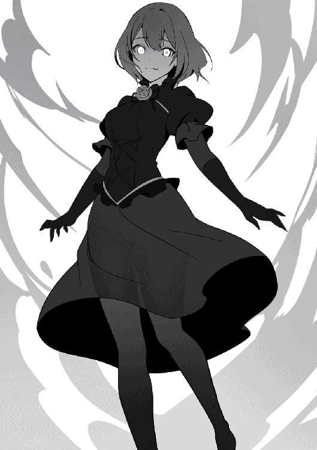
「何故だ？ 何故こんな事をしたんだ......？」
「アハハハ。そんなの何百年も前に話したじゃないっすか」
シャティアはようやく最大の疑問であるファンタレッタがどうして仲間の魔女達を裏切るような真似をしたのかを尋ねた。するとファンタレッタは腕を頭の後ろに置いて何てことの無いように話し始めた。
「人間てぇのは馬鹿な生き物でしてねぇ、母さん。ちょーっと突いてやればすぐに本性を現すんすよ。アタシが魔女の居場所を教えてやっただけですぐに勇者を派遣して殺しに向かわせる」
パチンと指を鳴らしてヴェスタリスの事を指さしながらファンタレッタはそう言った。そして親指以外の指を折るとビッと自分の首の前で線を切り、死んだジェスチャーを送った。
「お前が人間をよく思っていない事は分かっていた......だが何故仲間まで裏切るような事をした？」
「だってぇ、母さん達は人間を守ろうとしてたじゃないっすか。他の魔女達もなんやかんやで母さんの言う事守って人間に手ぇ出さなかったし......だ、か、ら。邪魔だったんすよ。母さんが」
今度はシャティアの事を指さしながらファンタレッタは堂々と言い放った。一切隠そうとはせず、その言葉には殺意まで込められている。彼女は本気で母親代わりであったシャティアを殺そうと考えていたのだ。
「そしてアタシは計画を実行し、勇者を誘導して母さん達を殺させた。もちろんアタシもやられたフリしたっすよ？ んで案の定クロークっちは人間達を憎み、あのエメラルドっちまでが人間に復讐しようとした......全部アタシの計画通りっすよ」
ファンタレッタはクツクツと小さく笑みを零しながらそう言う。そのあまりの非道振りにシャティアの横に立っていたヴェスタリスは完全に言葉を失い、口元に手を当てていた。そんな理由で自分を怪物に変貌させたのか？ と尋ねたかった。だがあまりのショックで彼女は口を動かす事すら出来なくなっていた。
「でも！ やっぱりいつでも邪魔するのは母さんっすよ......完璧にやったと思ったのに。転生魔法まで使って戻って来た......本当しぶといっすよね。母さんは」
拳を握り締めて大層恨めしそうにシャティアの事を睨みつけながらファンタレッタは低い声でそう言った。本気で憎んでいる。彼女は自分の計画が邪魔された事に本気で憎んでいた。今まで出会ってきた魔女達はいずれもシャティアが母親代わりだという事から情を持っていた。たとえ敵対していても尊敬していた。だがファンタレッタは違う。彼女は完全にシャティアを障害と認識していた。
「ああ......そうか......やっぱり、そうなのか」
「......シャティファール母様？」
「ヴェスタリス、お前は下がっていろ......」
シャティアは何かを悟ったように悲しそうに呟く。そこに違和感を覚えたヴェスタリスは声を掛けたが、シャティアはただ忠告をするだけだった。だがこういう時はシャティアの言う事を聞いていた方が良いと知っているヴェスタリスは言われた通り、その場から下がった。シャティアは一歩前に踏み出し、躊躇無くファンタレッタへと近づく。
「......？」
「ファンタレッタ、お前に真実を教えてやろう」
シャティアがそう言った直後、彼女は腕を下から上へと振るうと凄まじい突風を巻き起こした。突然の攻撃にファンタレッタは反応出来ず、そのまま風に巻き込まれて上空へと打ち上げられる。それを追い掛けてシャティアは浮遊魔法で空へと飛び立った。
教会の塔を蹴ってファンタレッタも軌道を取り、霧に身体を包ませながら更に上へと回避する。すぐ後ろからはシャティアが迫って来ており、彼女は上空で停止するとファンタレッタも同じようにその場で停止した。
「真実って......一体何を教えてくれる気なんすか？」
「お前は昔から気になっていただろう？ 自分達魔女はどういう存在なのか？ どうして七人しか居ないのかって......それを教えてやる」
シャティアの様子がおかしい事に気づいたファンタレッタは少し余裕を無くし、いつでも離脱出来るように魔力を集中させながら会話を切り出した。シャティアは両腕を組み、落ち着いた雰囲気のまま口を開く。
「魔女が七人しか居ない理由......それは我自身が【魔女の一族】を滅ぼしたからだ」
シャティアから告げられた言葉にファンタレッタは一瞬自身の耳を疑う。到底彼女の人物像からは信じられない言葉が飛び出したからだ。ファンタレッタは目をぱちくりとさせて呆然としている間、構わずシャティアは話を続ける。
「かつて我々【魔女の一族】は世界を傍観し、見届ける役目を担っていた。だがある一部の魔女達が自分達こそ世界を支配する存在なのだと反発し、力を行使するようになった......丁度今のお前のようにな」
シャティアは悲しい表情を浮かべながら昔起こった出来事を述べる。それはまるで今の世界で起こっている魔女達の現象と同じだった。ファンタレッタは何か嫌な予感を覚え、自然とシャティアから距離を取った。
「我は一族の長から裏切りの魔女を抹殺する役目を課せられていた。間違いを犯した魔女を正し、世界の均衡を守る役目だ......」
次々と告げられる真実にファンタレッタの頭は追いつかない。自分達【魔女の一族】が母親代わりであるシャティアによって滅ぼされた？ それでは自分がしている事は一体なんなのだ？ これではただ繰り返しているだけではないか。そんな疑問が彼女の頭の中を埋め尽くしていく。そして、混乱している彼女にシャティアは更なる悲劇を伝えた。
「そしたらどうなったと思う？ 何と長までもが裏切り者の思想に飲まれ、一族全体が自分達は支配者となるべきだと訴えたのだ......」
「......ッ、母さんは、それでどうしたんすか？」
ようやく喋れるようになったファンタレッタは答えなど聞きたくないと思いながらもそう尋ねてしまった。尋ねずにはいられなかった。自分がずっと求めていた物が今目の前にあるのだ。それを知ろうとするに決まっている。そしてシャティアは、ニコリと残酷に微笑んだ。
「殺したさ、一人残らずな。我は自分の役目を全うした。そういう風に育てられたのだから」
何て事の無いように、先程のファンタレッタのように感情の籠っていない声でシャティアはそう言う。その澄んだ瞳はどこを見ているのか、ファンタレッタの事を見ているようで向こう側の雲を見ているようでもある。
「それから我は何も知らない六人の赤子を連れて外の世界に出た。真実を告げず、新しい魔女として生きてもらう為に」
「それが......アタシ達......」
告げられた真実が信じられないようにファンタレッタは首を横に振るう。しかしシャティアの冷たい瞳がこれは現実だと訴えてくる。逃げ場など無かった。これが事実なのだ。そしてシャティアは指先をファンタレッタへと向ける。
「だがファンタレッタ、お前はそちら側だったな」
冷たい言葉と共にファンタレッタに突風が襲い掛かる。かつてシャティアが裏切りの魔女達に向けた物と同じ殺気。それが今ファンタレッタへと襲い掛かって来ていた。
「ぐぁっ......！」
「我はこの手で何人もの同胞を殺した。世界の均衡を保つ為に、一個人の魔女が力を持ち過ぎないように......お前達のような裏切りの魔女は殺さなければならない。それが我の役目だ」
シャティアの瞳には光が無かった。ただ冷徹に機械のように腕を払い、魔力の衝撃波を放つ。吹き飛ばされたファンタレッタは空中で回転しながら下降し、姿勢を整えてすぐさま迎撃の準備をする。だが目の前に居たはずのシャティアの姿は消えており、気が付けば背後に移動していた。
「何故我が【眠り歌】という魔法を習得しているか分かるか......？」
「あぐっ......はっ......ぁ！」
ゴキンと鈍い音を立ててファンタレッタは魔力の塊をぶつけられ、再び吹き飛ばされる。だが自身の耳元からはシャティアの声が聞こえており、すぐ傍に居る事が分かった。シャティアは何の感情も込めず、何て事の無いように質問する。
「魔女を完全に殺す為だ」
魔女の身体は魔素と強く結びついている。故に大量の魔力を保持する事が出来るし、歳を取るスピードも遅い。彼女達は魔力と一体化する事によってその特異な身体を更に高次元の物へと昇華させているのだ。だからこそ、逆にその魔力が、その魔素自体が直接消されるような事があればその身体は崩壊し、完全に生命を終える。【眠り歌】は魔女を完全に殺す為に作られた抹殺用の魔法であった。
「あがっ......がぁぁッ......!?」
無数の光が飛び散る。銀髪の少女の寂しそうな歌が流れ、ファンタレッタの身体を光が包んで行く。そしてその瞳から光を失うと、その身体は光の粒子となって崩壊していった。まだ意識のあるファンタレッタは苦しそうにもがき、身体をくねらせた。
「あああァァッ!!......ア、アタシを倒したところで、無駄っすよ......母さん！ いずれ皆悟る。アタシら魔女こそが世界を支配する者なんだって......！ いずれ皆、母さんを裏切る!!」
身体が崩壊していながらもファンタレッタはそう訴えた。自分を消滅させたところで全てが解決する訳ではない。自分のちょっとした細工で魔女達が人間を憎むようになったように、また些細な事で魔女達は反逆を行うと。そんな言葉を聞いても、シャティアは寂しそうな瞳を向けながらファンタレッタの事を見つめ、ポツリと言葉を零した。
「だったら......我はまた繰り返すだけさ。同じことをな」
最後にシャティアはそう答え、同時にファンタレッタの身体も完全に消滅した。残された光の粒子を横目に、シャティアは逃げるように背を向けた。
こうして事件は終息を迎えた。街を騒がせていた怪物は騎士団によって討伐された事になり、黒幕であるファンタレッタもシャティアが倒した事から真実は隠蔽される事となった。本来なら教会の上空で激しい戦闘を行っていたシャティアも問いただされるのだが、コーサルが弁護してくれたおかげで事なきを得た。全ては終わった。大切な何を失い、それでも世界は時を刻んで行く。
「これからどうされるんですか？ シャティファール母様」
「とりあえず屋敷に戻りますか？ ロレイドさんも心配してるかも知れませんよ」
「さぁてな......とりあえずのんびり行くさ」
道を三人の少女達が歩いている。一人は綺麗な金色の髪をツインテールで纏めた人形のような子。もう一人は長い紫色の髪を伸ばした美しい少女。もう一人は銀色の長い髪に澄んだ瞳をした少女。彼女達はこれと言った目的も持たず、どこかに向かって歩いて行く。
魔女は生き続ける。過ちを犯しながらもそれを正す存在によって修正をされ続けながら、それでも生き続けようとする。
緑が生い茂っている草原に一人の少女が木の下に座っていた。栗色の髪の毛をツインテールに纏め、まん丸の瞳に小動物のような可愛らしい顔をした少女だった。そんな彼女は何やら難しそうな本を読んでおり、ページをめくってはうんうんと唸っていた。
そんな少女の元にもう一人雰囲気が違う少女が近づいて来た。ローブを纏い、美しい銀色の髪を垂らした少女。彼女が近づいて来た事に気が付き、栗色の髪の少女は急いで立ち上がると駆け足でその少女の元にやって来た。
「お帰り！ シャティア！」
栗色の髪の少女がそう呼ぶと、銀髪の少女シャティアははにかみながら顔を頷かせた。懐かしき村に戻り、どこか雰囲気も柔らかくなっている彼女は久々に幼馴染に会えたからか表情を緩ませていた。
「ああ......ただいま。モフィー」
シャティアは重いローブを解きながらそう返事をする。
久々に聞いた幼馴染の声は変わっておらず、相変わらず子供らしくない口振りだった。しかしモフィーはそれに安堵したように笑顔になった。
「王都はどうだった？ 色んな人が居た？ 魔法は覚えたの？ どうだった？ シャティア」
「ああそうだな。王都にも行ったし、色んな所にも行った。懐かしい人にも会ったし、面白い魔法も見られた......」
モフィーは早速気になっていた事を尋ねる。王都に行ったシャティアがどんな生活を送っていたのか、どんな魔法を覚えたのかと、とにかく全部が知りたかった。そんな相変わらずのモフィーの質問攻めに戸惑いながらもシャティアは一個一個丁寧に説明した。
「お前の方こそ魔法の勉強はどうなんだ？ ちゃんと魔法書は使ったのか？」
「もっちろん！ 少しは私も魔法使えるようになったんだよ！ 見ててシャティア！」
シャティアが尋ねるとモフィーは自信ありげに力強く答え、そう言うと少し離れて覚えたての魔法を披露し始めた。まだ粗のある魔法と呼ぶにはいささか不十分な物だが、それでもモフィーにしては随分真面目に取り組んだ事が分かる魔法であった。シャティアはそれを見て何故か自分の事のように嬉しくなり、モフィーの近くに寄ると注意すべき事を指南し始めた。するとモフィーは注意される事が嬉しそうに微笑んだ。
「えへへ！ これからも魔法教えてね。シャティア！」
「ああ、もちろんさ」
混じりっけない純粋な笑顔を浮かべながら言うモフィーの言葉に、どこか寂しい瞳をしながらも元気づけられるようにシャティアも笑顔になり、そう答えた。
こうして一つの物語が終わる。村人の少女に転生した元魔女は、故郷の村へと戻り、平和な時を送る。せめてこの平穏が長く続く事を祈りながら、彼女は幼馴染との魔法の勉強を楽しんだ。
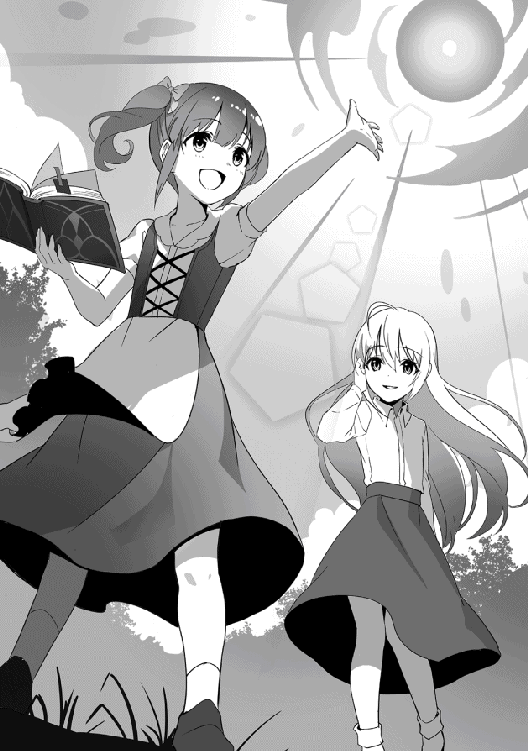
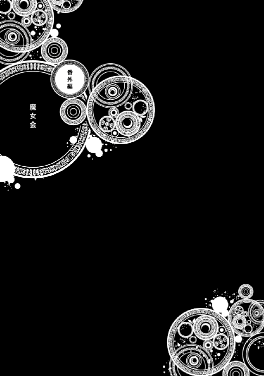
そこは見晴らしの良い丘の上であった。周囲には草食動物達が日向ぼっこをしたり草を食べたりしてのんびりと過ごしており、のどかな平穏が広がっている。そんな場所に一本だけ生えている巨大な木の下でテーブルを並べ、カップを片手に持ちながら優雅にお茶会をしている人物達が居た。
「ふぅ......のどかだな。やはり自然は良い」
カップに入った紅茶を一口飲みながら銀髪の少女、シャティアはそう呟く。すっぽりと椅子に収まるくらい小さな体をしているシャティアだが、その佇まいはまるで貴族の令嬢のようで、一つ一つの動作がしっかりと丁寧に洗練されていた。しかしそんなシャティアとは別の席に座っている紫髪の少女はくたびれたようにテーブルに顔を伏せていた。
「母様......暑いです。屋内に入りたいです」
「ヴェスタリス。お前はもう少し日を浴びろ。大体お前は引き籠り過ぎるんだ」
【不死の魔女】ヴェスタリスはシャティアの方を向きながら意見を出すが、シャティアはそれを無視し、紅茶を飲みながら一蹴してしまった。
「うぅ......死ぬ......焼け死ぬ......」
「不死の貴方がそれくらいで死ねるなら苦労しませんね」
一応この場所は巨大な木の下なので枝や葉で影になっているのだが、ヴェスタリスにはそれだけでも不十分らしい。元々彼女は引き籠りな性格がある為、外の環境になれていないのだ。それでもいささか大袈裟な所もあり、そんな悶え苦しんでいるヴェスタリスを横で眺めていたエメラルドは紅茶に砂糖を入れながら皮肉を交えてそう言った。
「エメラルド......そう言えば貴方なんで小さくなっているの？」
「今更ですか......っ!?」
エメラルドの事を呆然と見ていたヴェスタリスがふと気づいたように尋ねると、エメラルドは慌ててコホンと一度咳払いし、椅子に座り直す。
「その、色々あったんですよ......」
一から説明すると面倒なのでエメラルドはそれだけ答える。第一小さくなった事でからかわれるのは分かっているのだ。わざわざ自分から弱点を晒すような事はしない。
「ふ〜ん......そうなんだ」
するとヴェスタリスは肘を付きながら興味無さげにそう言い、淀んだ瞳でエメラルドの事を見ていた。一応誤魔化せたかと安堵してエメラルドは紅茶に口を付ける。
「憑依魔法を使ったんだよ。我がお灸を据えた後、人体生成魔法を使って身体を作ったんだ。だがいささか材料が少なかったんでな。この通り小さくなってしまった」
「ぶっ......！ シャ、シャティファール......！」
あっけらかんと答えるシャティアの発言にエメラルドは思わず紅茶を吹き出してしまい、慌ててハンカチで口を拭きながらシャティアの方に顔を向ける。彼女は面白がるように笑みを浮かべていた。
「へ〜、そうだったんだ......」
「ッ......別に私達長寿の魔女にとって姿などどうでも良い事でしょう？ シャティファールだってあんなに小さくなってるんですし」
「今の我はあくまで身体は人間だから、いずれ成長して大人の身体になるぞ？」
「............」
エメラルドの言葉に追撃するようにシャティアがそう横槍を入れる。すると今度こそエメラルドは固まり、怒ったように顔を震わせて少し涙目になっていた。
「ククク、悪かった。そう怒るな。感情を高ぶらせると呪いの目が発動するから勘弁してくれ」
「......ッ、シャ、シャティファールがからかうからですよ......！」
エメラルドも涙を手で拭いながらそう言い、魔法を使ってカップに紅茶を注いだ。
「そもそも、こんなんで本当に皆集まるの？ 前に全員集まったのは二十年くらい前じゃなかった？」
「それくらいでしたっけ......シャティファールは全員に声を掛けたんですか？」
「一応場所と日時は伝えておいた......来るかどうかは奴ら次第さ」
ヴェスタリスとエメラルドの疑問に対してシャティアは空を見上げながら答える。
今回のこのお茶会はただ天気が良いから開いただけのお茶会ではない。きちんとした目的があり、ちゃんと招待状も出しているのである。だが向こうが来るかどうかは分からない。今シャティアに出来る事は紅茶を飲みながら黙って待つ事だけだった。
すると丁度タイミングを見計らったようにテーブルから少し離れた所に突風が巻き起こった。エメラルドは慌ててテーブルの上に置いてある物が飛ばないように魔法を使い、一方でシャティアはその風を面白がるように見守っていた。
「噂をすれば何とやらだ......」
ニヤリと笑みを零し、シャティアはそう呟く。すると突風が収まり、そこには赤色の髪と水色の髪をそれぞれ別向きにサイドテールにした双子の魔女が立っていた。
「うっわ、懐かしい顔。引き籠りのヴェスタリスが居るよ」
「お姉ちゃん......そんな風に言っちゃ駄目だって」
ヴェスタリスの顔を見るなり赤色の髪の方の少女リリは口元を引き攣らせ、それに対して横で大人しくしていたミミは申し訳なさそうな表情をしながら姉を注意する。
「よく来たな。リリ、ミミ。その様子だと封印は完全に解けたようだな？」
「まぁね。勇者の奴がようやく立ち直ってくれたから。はー、ホント苦労したぁ」
二人の魔力の様子を見て察したシャティアが尋ねると、リリはその問いかけに対して頷いて肯定した。そして疲れたように肩を回し、テーブルの席へと着く。ミミもリリの隣の席に座った。
「勇者の奴は今何をしているんだ？」
「あいつは相変わらずだよ。立ち直りはしたけど贖罪の旅は続けてる。今頃はどっかの国で人助けでもしてるんじゃない？」
シャティアの質問に対してリリは大して興味無さそうに肩を竦めながら答える。
勇者は何とか立ち直ってくれたらしく、リリとミミに掛けた封印を完全に解除出来るくらい元には戻ったらしい。だが相変わらず罪の意識は感じているようで、長い長い贖罪の旅は続いているようだ。恐らく彼はそれを死ぬまでずっと続けるのだろう。
「あんな奴は四肢を引き裂けば良いよ......」
「いっその事私の目で石にした方が彼も幸せになれると思いますけどね」
「中々魔女らしい事を言うようになったな。お前達」
話を聞いていたヴェスタリスとエメラルドは不機嫌そうな表情をしながらそれぞれ恐ろしい事を呟く。自分を殺し掛けた相手なのでそういう感情を持つのは当然なのだが、魔女らしい二人の台詞にシャティアは思わずクスリと笑みを零した。
こうして魔女二人が参加し、お茶会は続く。エメラルドはリリとミミのカップを用意し、リリには紅茶を。ミミには別のポットで淹れたカップを渡した。
「はい、ミミは紅茶駄目でしたよね？ コーヒーです」
「有難う、エメラルド」
ミミは元々紅茶が駄目な為、エメラルドが予め用意したコーヒーを手渡す。それをミミはニコリと微笑んでお礼を言い、受け取った。
七人の魔女はそれぞれが我が強すぎる為、協調性があまり無い。元々一個人が国を滅ぼせる力を持っている為、その傾向は当然とも言えた。そんな中では比較的エメラルドとミミは大人しい性格をしている為、今の様にお互いの事が分かっているくらい仲が良い。実際の所双子の姉であるリリよりもエメラルドはお姉さんらしい立ち振る舞いをしていた。
「ていうかシャティファール、何の用で私達を呼んだのよ？ まさか仲良くお茶会をする為だけとかじゃないでしょうね？」
「まぁそう慌てるな。まだあと一人、残っている......」
ぐいっと一口で紅茶を飲み干し、リリは不機嫌そうな顔をしながらシャティアにそう尋ねる。するとシャティアは静かに紅茶を飲みながらそう答えた。その言葉に魔女達は顔を見合わせて複雑そうな表情を浮かべる。
「あと一人って......」
「彼女、ですよね......」
「あいついつもシャティファールに突っかかってるよね」
最後の一人が誰であるかは簡単に思い浮かぶ。昔からシャティファールに挑戦して何かと返り討ちにされているあの【探究の魔女】だ。反逆を謀ったファンタレッタ程ではないにしろ、彼女も一時はシャティファールを敵と認識して戦っていた。そんな彼女は要するに魔女達の間でも色々と悩みの種であるのだ。
そんな不安を抱いていると、突如風を切るかのような音と共にテーブルの中心に黒衣を纏った青髪の女性が現れた。近くにあったカップやポッドは当然吹き飛ばされ、エメラルドはそれを慌てて魔法で空中に停止させる。
転移魔法。【探究の魔女】の得意魔法であり、彼女を象徴するかのような能力。そんな突然やられたら驚くであろう事をしたのにもかかわらず。その美しい容姿をした女性、クロークは辺りを見渡した。
「ん......なに？ アタシ遅刻した？」
シャティア以外の周りが呆然としているのを見てクロークは自分が何かミスしたかと思ってそう確認を取る。だが皆が言いたいのはそういう事ではなく、もっと単純な物であった。
「クローク！ あんたもうちょっと普通の出方出来ないの？ いきなり転移魔法で来たらビックリするでしょうが!!」
「アタシはシャティファールに言われた通りの座標に転移しただけだし。文句があるなら母上殿に言えよ」
「あんた......ほんっと変わらないわね！」
早速と言わんばかりにリリは身を乗り出してテーブルの上に居るクロークに突っかかる。しかし彼女はちっとも気にした素振りを見せず、ドスドスとテーブルの上を歩くと空いている席へと座った。相変わらず容姿は美人だというのに中身が酷すぎる魔女であった。
「相変わらずだね。クロークは」
「まぁ、それはそれで安心はしますけどね......」
最初は驚いていたヴェスタリスもまたテーブルの上に伏せ、だるそうにしながらそう言う。エメラルドもそれに頷いて同意しつつも変わらない事は良い事でもある為、ちょっとだけ笑みを浮かべていた。
「久方ぶりだな。クローク」
相変わらずなクロークを見てシャティアは髪を弄りながらクロークの事を見る。態度は酷いもののシャティアはクロークがここに来てくれたという事には素直に嬉しく思っており、彼女を大切な存在として見ていた。
「ああ......どーも、お久しぶりです。母上殿」
対してクロークは魔国での事がある為、複雑そうな表情を浮かべる。シャティアは変わらずクロークの事を仲間の魔女として認識しているが、クロークとしては一度は反乱を起こしてしまった為、すぐに元の関係のように戻る事は出来なかった。それでもシャティアは彼女が心を開いてくれるまで待つつもりであった。だからこそ、今回このお茶会に全員を招集したのだ。
「さてと、これで全員が集まったな」
パンと手を叩いてシャティアはクロークが乱したテーブルクロスを元に戻し、エメラルドが宙に浮かせていたカップとポットも元に位置に戻した。そして自分のカップには紅茶を注ぎ、それを片手に持ちながら全員の方に顔を向ける。
「それで、何の用でわざわざ魔女全員を集めたのよ？」
「うむ。いやなに、久々に皆の顔が見たくなってな。せっかくだからお茶でもしながら話でもしようかと思ってな」
「............」
ようやく本題に入ったと思い、リリは改めてシャティアに尋ねる。するとシャティアは紅茶を一口飲んでから何でもないかのようにそう答えた。その言葉に対してリリは最初意味が分からず、ぽかんと口を開けていた。そしてようやく理解すると、彼女は呆れたように声を上げた。
「ええ!? じゃぁそれ最初に私が言ったようにただお茶会がしたかっただけじゃん!?」
「うむ。まぁ、そうなるかね。天気に恵まれて良かったよ」
シャティアの返しに対して今度こそリリは呆れ果て、椅子から真後ろに倒れてしまった。慌ててミミが駆け寄り、大丈夫かどうかを確認する。幸い怪我はないようであった。
「シャティファールは昔からふと思ったら突然行動に移すからね......」
「だからと言っていきなり過ぎません？」
ヴェスタリスはシャティアの変わらない思い付きっぷりにケラケラと笑いながら机に付して手を叩く。笑っているのか疲れているのかよく分からない光景であるが、その隣では普通にエメラルドも言葉を述べていた。
「ふん......はた迷惑な母親だよ」
クロークはくだらないと言わんばかりに机に脚を乗せてそう言う。
「お前なら予測出来たんじゃないか？ クローク。そもそもどんな用があってもお前はこんな催しに参加しないと思ってたがな」
「............」
しかしシャティアはその澄んだ瞳でクロークの事を見つめながらそう指摘すると、彼女はバツが悪そうに視線を逸らし、誤魔化すように紅茶を飲み干した。
「まぁ母という物は子供達の成長が気になるんだ。たまにはゆっくり腹を据えて話そうじゃないか」
カップを置き、両手を合わせてそこに顎を乗せながらシャティアはそう言う。
この中で一番子供っぽい見た目をしている彼女だが、彼女こそが魔女達を束ねる存在であり、同時に殺す者でもある。他の魔女達からすれば母親のような存在である彼女がそう望むのであれば、子供達はそれに何か思うような事はなかった。
「私は構いませんよ。シャティファールとのお喋りが一番楽しいですから」
「私も......話すだけならもうちょっと外に居ても良い......」
「ふん、まぁシャティファールが言うなら、従ってあげるわよ」
「お姉ちゃん、本当はシャティファールと色々お話したい癖に......」
「まぁ、たまには付き合ってやるよ。母上殿の気まぐれにも」
それぞれの魔女達はそう言ってシャティアの申し出を受け入れる。こうして魔女達のお茶会がようやく始まり、彼女達は紅茶を片手に持ちながら楽しく語り合った。
あとがき
初めましての方は初めまして。そうでない方はまたお会い出来て嬉しいです。チョコカレーです。
チョコとカレーライスが大好きな人間です。早朝でもチョコとカレーなら食べられます。
この度は「元魔女は村人の少女に転生する」二巻をお手に取って頂き誠に有難う御座います。今回で最終巻という事で無事物語は終わりを迎えました。魔女達の戦いも終結し、シャティアも日常へと帰ります。彼女にとって魔女の生活より村での平穏な生活の方が性に合っていたのでしょう。そもそもシャティアは争いを好む性格ではなく魔術の探究が目的である為、本編で事件が起こらなければずっと村に居たはずでした。しかし自分の同胞であり子供でもある魔女達が現れた事によって彼女は混乱に身を投じるようになります。最終的には大きな犠牲があったものの、残りの魔女達もシャティアの元に集い、事件は収束しました。
この作品ではちょっと雰囲気は違うけど「魔女」という存在を自分なりに表現したく、【七人の魔女】を登場させました。いずれも一癖あるキャラ達ですが、彼女達はあくまで魔女という名を冠している存在に過ぎません。人間よりも魔力が高く、長寿な種族に過ぎないのです。しかしそれだけでも十分他の種族達からしたら脅威で、人々は彼女達を魔女と称するようになりました。やがて魔女という称号は人智を超えた存在の事を意味するようになり、人々は魔女というだけでその存在を恐れるようになります。言わば魔女というのは他の種族達が作りだした幻影のような物なのです。そうした経緯から今回の事件の原因でもあるファンタレッタは歪んだ思想を抱くようになります。「自分達魔女はどうしたら迫害されずに済むのか？」「自分達を嫌う種族を全て滅ぼせば良いのだろうか？」と。これはクロークも似た考えをしておりますが、二人の決定的な違いは、クロークは魔女を守ろうと行動し、ファンタレッタは魔女の敵を滅ぼそうと行動します。似ているようで二人の意思は違うものであり、だからこそ彼女達が協力し合うような事もありませんでした。もしもファンタレッタがこの悩みをシャティアに打ち明けていれば、物語はまた違った結末を迎えたかもしれません。同時にシャティアがファンタレッタの異変に気が付ければ良かったかもしれない。だからこそ彼女は悲しみを胸に抱えたまま王都を去りました。
最後にこの本をお手に取ってくださった皆様、本当に有難うございました。短い間でしたが元魔女のシャティアの物語を楽しんで頂けたら幸いです。またいつかお会い出来る日を楽しみにしております。それでは。
著者プロフィール
チョコカレー
Chococurry
本作でデビュー。チョコとカレーが好きな人間です。一番好きな魔女はお菓子の家に住んでいる魔女です。家がお菓子で出来てるってとても素敵ですよね。
teffish
フリーのイラストレーター。主にソーシャルゲームとライトノベルのイラストを描いています。猫とケーキが好き。
元魔女は村人の少女に転生する２
2018年９月１日発行 ver.1.0
著 者 チョコカレー
発行所 TOブックス
〒150-0045 東京都渋谷区神泉町18-８
松濤ハイツ２Ｆ
03-6452-5766（編集）
0120-933-772（営業フリーダイヤル）
Ⓒ2018 Chococurry
※無断で複製・複写・データ配信などをすることは、かたくお断りいたします。
本電子書籍は下記にもとづいて制作しました。
元魔女は村人の少女に転生する２
発行日 2018年９月１日 第１刷発行
本作品の全部または一部を無断で複製、転載、配信、送信したり、ホームぺージ上に転載することを禁止します。また、本作品の内容を無断で改変、改ざん等を行うことも禁止します。
本作品購入時にご承諾いただいた規約により、有償・無償にかかわらず本作品を第三者に譲渡することはできません。
本作品を示すサムネイルなどのイメージ画像は、再ダウンロード時に予告なく変更される場合があります。
本作品は縦書きでレイアウトされています。
また、ご覧になるリーディングシステムにより、表示の差が認められることがあります。